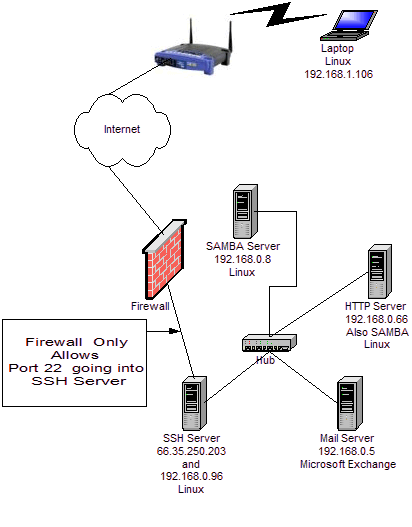
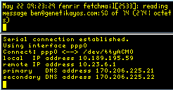

...making Linux just a little more fun!
June 2005 (#115):
- The Mailbag
- News Bytes, by Michael Conry
- Python for scientific use, Part II: Data analysis, by Anders Andreasen
- Piercing Firewalls with OpenSSH, by Mike Chirico
- Gmail on Home Linux Box using Postfix and Fetchmail, by Mike Chirico
- HelpDex, by Shane Collinge
- Ponders Corner, by Rick Moen
- Exploring procfs, by Awasthi Nirendra
- Staying Connected, by Ben Okopnik
- Introduction to Shell Scripting, part 5, by Ben Okopnik
- WSGI Explorations in Python, by Mike Orr (Sluggo)
- Design Awareness, by Mark Seymour
The Mailbag
General Mail
Submit comments about articles, or articles themselves (after reading our guidelines) to The Editors of Linux Gazette, and technical answers and tips about Linux to The Answer Gang.
And Now, A Message From The Crypt...
by Ben Okopnik, Editor-in-Chief
Greetings, all. This month's Mailbag is getting hammered out by yours
truly: Heather Stern, our Editor Gal and Scissor Wielder ne plus
ultra, is away at Baycon (as I
understand it, she's working just as hard on keeping their networks
running as she would on editing LG, which at least implies enviable
connectivity for the attendees.) "Hammering" may, in fact, be just the
right word for what I'm doing here - I have wielded a large mallet, a 12HP
chainsaw, and a rusty pipe wrench where she might have used a fine scalpel
and a jeweler's screwdriver - but somehow, the Mailbag got done. The point
is, if you hate the look of it this month, blame me; it's not Heather's
fault. If you love it, credit her - I've tried to follow her basic layout,
although my version is built by hand rather than via her high-tech
scripts.
In other - but still related - news, whereas Heather keeps (and processes)
all the Answer Gang mail for the month, I... umm... don't. That is, I do
read it, but as far as keeping it, well, on my system, it's chiefly
noticeable by its absence. :) In other words, TAG will be back next month.
Meanwhile, for your reading pleasure and (hopefully) gain in Linux
knowledge, we have a series of discussions garnered from Usenet by Rick Moen of our own Answer Gang. Rick
participated in these discussions, and thought that our readers might
benefit from seeing them - and I find that I agree with him: "there's gold
in them hills!" So, enjoy. As always, comments are welcome; send them to
The Answer Gang, and you may see
your name appear in lights - or at least in our pages.
Reset root password
partze <eron(at)lowzo(dot)com> wrote:
I lost my root password. Running Fedora Core 2 and I'm trying to
figure out how to reset it. I can login locally as a regular user.
Is there a way that I can reset the root password from the system
without using 3rd party tools?
Bit Twister <BitTwister(at)mouse-potato(dot)com> wrote:
On Thu, 19 May 2005 11:21:46 -0400, partze wrote:
> I lost my root password. Running Fedora Core 2 and I'm trying to
> figure out how to reset it. I can login locally as a regular user.
> Is there a way that I can reset the root password from the system
> without using 3rd party tools?
Depends on which boot loader you use
----------------- using grub ----------------------
When at the grub menu
Hit e to get to the edit mode
You should be on the Kernel line containing /vmlinuz
Hit e again and add a
space single
to the end of line and hit Enter key. Example:
kernel (hd0,4)/vmlinuz 1 root=/dev/hda9 mem=128M single
then b to boot
You then come to the sh-nnn# prompt.
When you "exit" the system will continue booting.
If single does not work, try a 1 instead.
---------------- using lilo -----------------------
Hit Esc or Tab key at lilo prompt then
linux 1 or linux single
test <test(at)example(dot)com> wrote:
Bit Twister wrote:
> On Thu, 19 May 2005 11:21:46 -0400, partze wrote:
>> I lost my root password. Running Fedora Core 2 and I'm trying to
>> figure out how to reset it. I can login locally as a regular user.
>> Is there a way that I can reset the root password from the system
>> without using 3rd party tools?
>
> Depends on which boot loader you use
>
> ----------------- using grub ----------------------
> When at the grub menu
>
> Hit e to get to the edit mode
> You should be on the Kernel line containing /vmlinuz
> Hit e again and add a
> space single
> to the end of line and hit Enter key. Example:
> kernel (hd0,4)/vmlinuz 1 root=/dev/hda9 mem=128M single
> then b to boot
>
> You then come to the sh-nnn# prompt.
>
> When you "exit" the system will continue booting.
>
> If single does not work, try a 1 instead.
>
> ---------------- using lilo -----------------------
>
> Hit Esc or Tab key at lilo prompt then
>
> linux 1 or linux single
Another method that forces a password on all consoles during any boot is to
simply modify inittab and add/edit these to lines.
d:3:initdefault:
~:S:wait:/sbin/sulogin
note the double tilde. Basically what this does is force the requirement
of any legal logon to access the system even when in single user mode.
You still need to lock down the bios and restrict physical access to the
case in order to prevent a system boot with boot media.
That gets you involved in using an Encrypted File System, which is
something I've yet to learn enough about to even think of implementing.
Rick Moen <rick(at)linuxmafia(dot)com> wrote:
test <test(at)example(dot)com> wrote:
^^^^^^^^^^^
Hey, look! IANA's staff are on Usenet. (I"m kidding, I'm kidding!
Yes, I know about RFC2606.)
> You still need to lock down the bios and restrict physical access to
> the case in order to prevent a system boot with boot media.
Which, for reasons already cited, actually doesn't work:
http://labmice.techtarget.com/articles/BIOS_hack.htm
But password-encumbering all access to single-user modes, _plus_
restricting physical access to the removable-bootable-media ports
(floppy and CD/DVD slots, USB ports) would do it.
> That gets you involved in using an Encrypted File System, which is
> something I've yet to learn enough about to even think of
> implementing.
Worth considering including a small one on laptops that must house
sensitive data, given the theft threat. You'll have to deal with crypto
overhead and a key-management problem.
Jack Masters <jackm.abc(at)starplace(dot)com> wrote:
Rick Moen wrote:
> test <test(at)example(dot)com> wrote:
> ^^^^^^^^^^^
> Hey, look! IANA's staff are on Usenet. (I"m kidding, I'm kidding!
> Yes, I know about RFC2606.)
>
>>You still need to lock down the bios and restrict physical access to
>>the case in order to prevent a system boot with boot media.
>
> Which, for reasons already cited, actually doesn't work:
>http://labmice.techtarget.com/articles/BIOS_hack.htm
If (big if) you can restrict access to the case, it is possible. Add
some PCI card that just contains one EPROM, some NVRAM, and bus
interface logic, and program an EPROM as a BIOS extension. Let that
EPROM ask for the password, and only allow the boot process to continue
once you get a valid password.
I have seen this in a computer lab around mid-80s, in that case the
EPROM did a bit more and caught all disk access, and encrypted it. This
could have worked quite well, if the sysadmin who made the EPROM hadn't
installed a backdoor (to make it more exiting, you had to hit the
spacebar twice during boot, use his initials as password, and the system
would boot from track 27 sector 5 or something like that off a floppy
8-) ). One could implement this without a backdoor, and the only way to
tamper with the machine is to physically remove the card. Anyone who can
do that can also physically remove the HD and mount it somewhere else.
> But password-encumbering all access to single-user modes, _plus_
> restricting physical access to the removable-bootable-media ports
> (floppy and CD/DVD slots, USB ports) would do it.
>
>>That gets you involved in using an Encrypted File System, which is
>>something I've yet to learn enough about to even think of
>>implementing.
>
> Worth considering including a small one on laptops that must house
> sensitive data, given the theft threat. You'll have to deal with
> crypto overhead and a key-management problem.
You don't want to be that sysadmin who's boss has to give an important
presentation in some far-away city, one hour from now, and forgot his
password 8-)
Rick Moen <rick(at)linuxmafia(dot)com> wrote:
Jack Masters <jackm.abc(at)starplace(dot)com> wrote:
> Rick Moen wrote:
>> test <test(at)example(dot)com> wrote:
>>>You still need to lock down the bios and restrict physical access to
>>>the case in order to prevent a system boot with boot media.
>>
>> Which, for reasons already cited, actually doesn't work:
>>http://labmice.techtarget.com/articles/BIOS_hack.htm
>
> If (big if) you can restrict access to the case, it is possible.
If you restrict access to the case, it's also not _necessary_.
(E.g., preventing people from putting the CD drive first in boot order
becomes an unnecessary parlour trick if users cannot get to the CD
slot.)
Unruh <unruh-spam(at)physics(dot)ubc(dot)ca> wrote:
partze <eron(at)lowzo(dot)com> writes:
>I lost my root password. Running Fedora Core 2 and I'm trying to
>figure out how to reset it. I can login locally as a regular user. Is
>there a way that I can reset the root password from the system without
>using 3rd party tools?
That would be pretty useless, would it not, if anyone logged on could
reset the root password?
However, IF you have physical access to the machine, you could boot up
in single user mode. You will now be in as root. Run passwd and change
the password.
This illustrates a) that physical access negates all security, or b)
that the LILO password is another password to remember. Then you have
to use your rescue disk, which willl again emphasize a)
muxaul(at)lenta(dot)ru wrote:
I would argue that there are ways to strengthen security
even in case users have physical access to the machine.
1) In the BIOS, allow boot from the first HDD only and protect the BIOS
settings with a password. (One needs to open the case then to change
the BIOS settings w/o you.)
2) In lilo.conf, exclude "prompt" and use only one kernel.
In addition, single user mode doesn't necessarily mean that you are
logged in as root. In Slackware, # telinit S (or, equivalently,
# telinit 1) takes you to the single user mode (as expected) and ...
presents "login:"
Mikhail
Rick Moen <rick(at)linuxmafia(dot)com> wrote:
muxaul(at)lenta(dot)ru wrote:
> I would argue that there are ways to strengthen security even in case
> users have physical access to the machine.
>
> 1) In the BIOS, allow boot from the first HDD only and protect the
> BIOS settings with a password. (One needs to open the case then to
> change the BIOS settings w/o you.)
>
> 2) In lilo.conf, exclude "prompt" and use only one kernel.
These measures are dumb, and are only going to piss off your system
administrators when they find they have to resort to service-password
lists (like http://labmice.techtarget.com/articles/BIOS_hack.htm), or
draining the BIOS electrical charge, or inserting a second hard drive --
just in order to help you when you forget your root password.
I know, because I've _been_ that pissed-off sysadmin. So, quit playing
around with gadget-freak local-console tricks, and put a lock on the
damned door.
muxaul(at)lenta(dot)ru wrote:
I agree with both statements.
The second idea is not always easy to implement, is it?
Imagine a university lab ... ;-)
Mikhail
ibuprofin(at)painkiller(dot)example(dot)tld (Moe Trin) wrote:
In article <1116678422.947909.17740(at)g43g2000cwa.googlegroups(dot)com>,
muxaul(at)lenta.ru wrote:
[Please learn to quote for context.]
>I agree with both statements.
Which were? I think you meant
>huge(at)ukmisc.org.uk (Huge) wrote:
>
>>muxaul(at)lenta.ru writes:
>>>I would argue that there are ways to strengthen security
>> ^
>>You forgot the word "minimally".
Actually, it can be a good bit more than "minimally"
>>>even in case users have physical access to the machine.
>>
>>You're better off preventing physical access in the first place.
>The second idea is not always easy to implement, is it?
>Imagine a university lab ... ;-)
1. Remove floppy and CD drives - users can't bring in removable media,
which makes installing windoze virus/trojans and *nix rootkits much
harder.
2. Boot loader restricted and password protected. Same for BIOS.
3. Students save files to a central file server, which are running
'quotas'.
4. The case of the computers is physically locked, and the computers and
monitors are secured by security cables.
5. Internet access _severely_ restricted - FTP/web access to proxy
server only
6. Students guilty of transgressions loose computer privileges. This
probably means they fail the course - and perhaps the quarter/semester.
Second offenders are expelled.
Not fool proof (fools are constantly discovering new ways to be a more
complete fool), but also more than 'minimally' strengthened. And this
is not just for education facilities - I know a number of companies that
have essentially the same setup, except for step 6. Instead, they may
simply be fired.
Old guy
"Mikhail Zotov" <muxaul(at)lenta(dot)ru> wrote:
Moe Trin wrote:
> In article <1116678422.947909.17740(at)g43g2000cwa.googlegroups(dot)com>,
> muxaul(at)lenta.ru wrote:
>
> [Please learn to quote for context.]
Sorry. My current ISP doesn't have COLS at its news server and I thus
have to use Google Groups (GG). GG only provide an opportunity to
quote for context only when you "sign in" for a single session (what
I am doing now). If one signs in for two weeks (as took place in my
previous postings), this opportunity disappears.
>>The second idea is not always easy to implement, is it?
>>Imagine a university lab ... ;-)
>
> 1. Remove floppy and CD drives - users can't bring in removable media,
> which makes installing windoze virus/trojans and *nix rootkits much
> harder.
Done except for floppies because some students need them to bring work
they have done at home.
> 2. Boot loader restricted and password protected. Same for BIOS.
Isn't this what I said before? (and was flamed for by Rick Moen) :-)
> 3. Students save files to a central file server, which are running 'quotas'.
Absolutely agree. Unfortunately, it's not always easy to make the HQs
understand even simple things. :-)
> 4. The case of the computers is physically locked, and the computers
> and monitors are secured by security cables. 5. Internet access
> _severely_ restricted - FTP/web access to proxy server only 6.
> Students guilty of transgressions loose computer privileges. This
> probably means they fail the course - and perhaps the
> quarter/semester. Second offenders are expelled.
Thanks you. I do completely agree with your suggestions and believe
this is what must be done in ideal conditions.
Mikhail
ibuprofin(at)painkiller(dot)example(dot)tld (Moe Trin) wrote:
In article <1116754011.850441.50970(at)g47g2000cwa.googlegroups(dot)com>,
Mikhail Zotov wrote:
>Moe Trin wrote:
>> 1. Remove floppy and CD drives - users can't bring in removable
>> media, which makes installing windoze virus/trojans and *nix rootkits
>> much harder.
>
>Done except for floppies because some students need them to bring work
>they have done at home.
The solution at the local colleges I'm familiar with is to have the
students send mail to themselves. I understand this may not be as easy
in Russia. Still, those using computers at home are more likely to be
able to have such mail access, even if it means dialing in to a server
at the university.
>> 2. Boot loader restricted and password protected. Same for BIOS.
>
>Isn't this what I said before? (and was flamed for by Rick Moen) :-)
I'm not Rick, but with the cases locked, it's a reasonable solution for
a school, where the admin's have the password, not the users. For home
use, it's a pain in the butt when you forget your password, and you are
the one to have to fix it. Pay me enough, and I'll fix that, but my
rates (like Rick) are going to be quite high.
>Thanks you. I do completely agree with your suggestions and believe
>this is what must be done in ideal conditions.
It's only a slight variation of how things were in the 1970s and early
1980s. More than one student was kicked out of places like UCB. CMU,
and MIT, and more than that were threatened with such actions.
Old guy
Rick Moen <rick(at)linuxmafia(dot)com> wrote:
Moe Trin <ibuprofin(at)painkiller(dot)example(dot)tld> wrote:
>>Isn't this what I said before? (and was flamed for by Rick Moen) :-)
>
> I'm not Rick, but with the cases locked, it's a reasonable solution
> for a school, where the admin's have the password, not the users. For
> home use, it's a pain in the butt when you forget your password, and
> you are the one to have to fix it. Pay me enough, and I'll fix that,
> but my rates (like Rick) are going to be quite high.
As you say, with this model, you do indeed need to have the case locked
(or have a person in the room, monitoring the machines sufficiently
well). After all, you not only want to ensure that nobody cracks root,
but also that visitors don't (e.g.) unplug hard drives and take them
home.
This is the exactly the model we followed at The CoffeeNet, a now-closed
100% Linux Internet cafe in San Francisco (mirror of the cafe's site at:
http://linuxmafia.com/coffeenet/). BIOS passwords were set, cases were
locked, and one of the food-service staff kept a lackadaisical eye on
things.
However, the main protection was that the machines were set up so that,
if you cracked root on any of the workstations, you enjoyed _less_
privilege than before, rather than more: All significant data were on
NFS exports from a locked room upstairs (/home, /var, /tmp). We used
NIS for single sign-on.
Dan Farmer came for a visit, poked around using a workstation and his
laptop, and to our satisfaction pronounced our security model "devious".
;->
If someone happened to crack root and make a nuisance of himself --
e.g., using the BIOS service passwords on the Web page I cited earlier
-- the food-service staff possessed a floppy they could use to rebuild
any impaired workstation from network-fetched disk images.
After a while, it dawned on us to extend the NFS/NIS server's monitor
and keyboard cables downstairs to serve as a (heavily locked down)
text-only e-mail workstation that you were welcome to use even without
buying any food or coffee.
I would not consider a situation such as _that_ to be a poorly thought
out security model -- having of course used it myself. But what I do
find annoying is people (often business executives who've skim-read too
many Kurt Seifried columns) applying it _generally_, and thinking that
they're somehow improving security just by implementing a BIOS password
-- and then of course standing there looking stupid, unable to produce
that password, when the sysadmin makes a service call and can't get in.
As I said, I've been that sysadmin.
Menno Duursma <pan(at)desktop(dot)lan> wrote:
On Mon, 23 May 2005 03:11:16 -0400, Rick Moen wrote:
[ Snip - Internet cafe configuration. ]
> [ ... ] But what I do find annoying is people (often business
> executives who've skim-read too many Kurt Seifried columns) applying
> it _generally_,
Probably this is becouse they can get machines (at least from HP) at 50
a pop, imaged with the company modified GNU/Linux of choice, booting
from HD per default _and_ having the BIOS password set as shipped. At no
extra cost for setting the password (they use a network tool to do
that?)
> and thinking that they're somehow improving security just by
> implementing a BIOS password --
Well they are. If against nothing else, at least against people
(managers from different departments) saying they don't care for
security at all.
And if a user cracks/resets the BIOS password and the manager gets to
know about that, they have a case/argument agaist them (as the user has
to have done more then just wonder around, and learn about the system.)
> and then of course standing there looking stupid, unable to produce
> that password, when the sysadmin makes a service call and can't get
> in.
Of course the sysadmin should know the password beforehand. Of not, they
should know about there being a (unknown) password, hence would come
prepared at to the scene.
> As I said, I've been that sysadmin.
So have I.
Rick Moen <rick(at)linuxmafia(dot)com> wrote:
Menno Duursma <pan(at)desktop(dot)lan> wrote:
[BIOS Setup password implemented by some jackass executive who then
forgets it:]
> Of course the sysadmin should know the password beforehand. Of not,
> they should know about there being a (unknown) password, hence would
> come prepared at to the scene.
>
>> As I said, I've been that sysadmin.
>
> So have I.
Just to clarify: I was annoyed and inconvenienced by being hit with
this _once_, as an unexpected impediment in 2001, at $PRIOR-PRIOR-FIRM,
a Linux company where I was chief sysadmin at the time -- and I _was_
"prepared at the scene" after getting over the idiot's pointless waste
of my time.
One of the executives arranged for me to fix something he'd screwed up
on his Linux workstation, and told me the alleged root password -- which
I didn't rely on, knowing that such information is best assumed
unreliable. I arrived at the appointed time; the executive was not
there as arranged, but rather off on some sudden errand, which seemed
just as well.
Tried the alleged root password: No go, as expected. Fell back on
booting Tom's Root/Boot; found out that removable drives were locked out
of the boot order. Hurled maledictions on the executive's biological
antecedents, went to fetch a screwdriver and grounding cable, partially
disassembled workstation, jumpered BIOS battery out of the circuit, used
grounding cable to drain BIOS Setup CMOS. Booted into BIOS Setup, set
boot order, supplied IDE drive geometry yet again, booted Tom's R/B,
mounted HD filesystem, chrooted, changed system root password. Fixed
original problem. Additional time added to the original task: about
1/2 hour.
(I didn't have the hyperlink to that collection of "skeleton key"
BIOS passwords, and didn't at the time have leisure to search for it.
But I knew such pages existed.)
Executive arrives back, expresses surprise that it's taken me an hour.
I politely suggest that setting a BIOS password, not telling the
sysadmin, and then leaving the scene wasn't very helpful on his part.
His take: It's "necessary for security", and I should just deal with
it.
That evening, I "deal with it" by setting all executive workstations'
BIOS passwords, myself, to a string subtly unflattering to that
one guy. ;->
Menno Duursma <pan(at)desktop(dot)lan> wrote:
On Mon, 23 May 2005 17:05:35 -0400, Rick Moen wrote:
[ 'bout a (PHB) pinhead executive. ]
> Tried the alleged root password: No go, as expected. Fell back on
> booting Tom's Root/Boot;
I used to have some Slackware boot/color floppys laying around SERs,
heh.
> found out that removable drives were locked out of the boot order.
Which wouldn't be bad security practice should the pw work IMO.
> Hurled maledictions on the executive's biological antecedents,
LOL.
> went to fetch a screwdriver and grounding cable, partially
> disassembled workstation, jumpered BIOS battery out of the circuit,
> used grounding cable to drain BIOS Setup CMOS. Booted into BIOS
> Setup, set boot order, supplied IDE drive geometry yet again, booted
> Tom's R/B, mounted HD filesystem, chrooted, changed system root
> password. Fixed original problem. Additional time added to the
> original task: about 1/2 hour.
I hope your salary was good, atleast...
> (I didn't have the hyperlink to that collection of "skeleton key" BIOS
> passwords, and didn't at the time have leisure to search for it. But I
> knew such pages existed.)
Well actually that might have gotten you an stunning reaction otherwise.
Some printer i had to fix was barfing errors i had never seen before (or
couldn't remember the meaning of) so i went and yahoo'd for them...
They go: WTF? You just STFW for that stuff? How much do you make?
> Executive arrives back, expresses surprise that it's taken me an hour.
> I politely suggest that setting a BIOS password, not telling the
> sysadmin, and then leaving the scene wasn't very helpful on his part.
> His take: It's "necessary for security", and I should just deal with
> it.
That's bad, hopefully (more often then not) that isn't the reaction
there, gees.
> That evening, I "deal with it" by setting all executive workstations'
> BIOS passwords, myself, to a string subtly unflattering to that one
> guy. ;->
Understandable. One time i accidently had local echo on and kind of
tieped the password to some server with an (intern admin) luser looking
over my shoulder is was getFuc17up or some such ... Auw. echo off and
chanced ... (Those kind of passwords i _do_ seem better remember
though. :-))
ibuprofin(at)painkiller(dot)example(dot)tld (Moe Trin) wrote:
In article <706c8$42918214$c690c3ba$11994(at)TSOFT(dot)com>, Rick Moen wrote:
>As you say, with this model, you do indeed need to have the case locked
>(or have a person in the room, monitoring the machines sufficiently
>well). After all, you not only want to ensure that nobody cracks root,
>but also that visitors don't (e.g.) unplug hard drives and take them
>home.
Absolutely. In the early 1990s, we had a rash of RAM thefts that finally
convinced the bean counters that case locks were cheaper than replacing
4Meg by 9 SIMMs four at a time. This, in a "secure" facility. The
thieves were smart, as they generally hit during lunch break, and only
took half the memory out of the workstations. They turned off the
monitors, so it looked as if the screen savers had kicked in, and the
boot messages were not obvious - the display being cleared by
/bin/login..
>However, the main protection was that the machines were set up so that,
>if you cracked root on any of the workstations, you enjoyed _less_
>privilege than before, rather than more: All significant data were on
>NFS exports from a locked room upstairs (/home, /var, /tmp). We used
>NIS for single sign-on.
I like it! If you are using a switched network, rather than coax or
hubs, sniffing NIS becomes a lot harder.
>If someone happened to crack root and make a nuisance of himself --
>e.g., using the BIOS service passwords on the Web page I cited earlier
>-- the food-service staff possessed a floppy they could use to rebuild
>any impaired workstation from network-fetched disk images.
Harder for us, as our workstations and servers generally lack floppies
or CDs. However, we only need the system to be able to boot and find the
network, and we can reload from that. If the system won't boot (which is
pretty rare for us), we normally just drop in a spare system, and take
the broken system in to the service room for a cleaning and reload.
>After a while, it dawned on us to extend the NFS/NIS server's monitor
>and keyboard cables downstairs to serve as a (heavily locked down)
>text-only e-mail workstation that you were welcome to use even without
>buying any food or coffee.
We'd be against that. Our servers are servers, and the only people who
can log in are staff. We don't even let the janitorial staff into the
server rooms after one guy decided to plug in the (industrial sized)
floor buffer into the UPS - borrowing the socket where a file server was
plugged in. All kinds of fun, as the Magic Smoke(tm) escaped from the
UPS, and the file server (a Sparc2 with two separate external SCSI
chains - can you say 14 hours to fsck?) was down for a while. All of the
wall outlets had stuff plugged in, and had security retainers to keep
the stuff plugged in... what was the guy to do, right? Sigh.
>I would not consider a situation such as _that_ to be a poorly thought
>out security model -- having of course used it myself. But what I do
>find annoying is people (often business executives who've skim-read too
>many Kurt Seifried columns) applying it _generally_, and thinking that
>they're somehow improving security just by implementing a BIOS password
>-- and then of course standing there looking stupid, unable to produce
>that password, when the sysadmin makes a service call and can't get in.
We avoid that by not handing out the root password (and having the
systems locked). If the hell-desk staff can't get in remotely to "fix"
some problem they're complaining about, someone will be by shortly to
have a look. If there is a problem that can't be solved on the spot, we
can have a spare system in within a half hour. Luckily, most of the PHBs
are dependent on their secretary, and we only have a few of those that
need to be shot.
>As I said, I've been that sysadmin.
I'm trying to remember where that tee-shirt is.
Rick Moen <rick(at)linuxmafia(dot)com> wrote:
Moe Trin <ibuprofin(at)painkiller(dot)example(dot)tld> wrote:
> In article <706c8$42918214$c690c3ba$11994(at)TSOFT(dot)com>, Rick Moen wrote:
>>However, the main protection was that the machines were set up so
>>that, if you cracked root on any of the workstations, you enjoyed
>>_less_ privilege than before, rather than more: All significant data
>>were on NFS exports from a locked room upstairs (/home, /var, /tmp).
>>We used NIS for single sign-on.
>
> I like it! If you are using a switched network, rather than coax or
> hubs, sniffing NIS becomes a lot harder.
Yes, indeed. This was back when switches were still rare, so the entire
building had only hubs. The CoffeeNet's proprietor and I both lived in
our respective apartments, upstairs -- so that had the healthy
side-effect of hammering into me the habit of never trusting the
network, if I can possibly help it.
I've retained that habit to this day; on our residence LAN, none of the
hosts trusts any of the other hosts, or trusts the network: When we
deployed 802.11b wireless and friends asked how we dealt with the
security exposure, our answer was "What security exposure? Do you think
we ever trusted the _wired_ network?"
(To his credit, the querent recovered nicely, saying we still had to
worry about a drive-by spammer parking at the end of our driveway. I
countered that I'm prepared to do baseball-bat DoSes, in such cases.)
I should probably also explain, in case it wasn't apparent, that the
main reason you had _less_ access after cracking root than before is
that all the significant filesystems were NFS-exported using the
no_root_squash flag. So, it actually sucked to be UID=0 on any of the
client workstations.
> Harder for us, as our workstations and servers generally lack floppies
> or CDs. However, we only need the system to be able to boot and find
> the network, and we can reload from that.
Sure. Pretty easy in these days of PXE support built into everything.
It would have made things simpler, at The CoffeeNet.
>>After a while, it dawned on us to extend the NFS/NIS server's monitor
>>and keyboard cables downstairs to serve as a (heavily locked down)
>>text-only e-mail workstation that you were welcome to use even without
>>buying any food or coffee.
>
> We'd be against that. Our servers are servers, and the only people who
> can log in are staff.
I wish I could remember exactly what sets of permissions and ownership
The CoffeeNet's proprietor, my friend Richard Couture, set such that he
felt it rational to assume that risk on an NFS/NIS master. I can't
quite remember. I do remember raising an eyebrow double-plus high, when
he originally mentioned the idea.
Gratuitous plug: Richard decamped in 1996 to Guadalajara, Jalisco
state, Mexico, where he established "LinuxCabal". If you're in the
area, drop in on him and say "Hi". http://www.linuxcabal.com/ (English
pages at: http://www.linuxcabal.org/index.en.html)
Note that only the keyboard and monitor were public: The system case
enclosure (and all drives and other ports) remained under strong
physical protection.
Debian's policy regarding security updates
Robert Glueck <rglk(at)web(dot)de> wrote:
I can't quite figure out the policy of Debian with regard to security
updates for their OS. From what I understand, it is as follows. Please
correct me if I'm wrong.
When a security vulnerability is discovered in a Linux package that's
part of the Debian distribution, Debian will attempt to prepare a fix
for it, first for stable (for all supported architectures) and perhaps
later then for unstable, and announce the fixes in a DSA. If they
managed to prepare a fix for unstable, it will be posted as such and
then after two days migrate automatically into the testing distro,
"after all dependencies have been fulfilled" (?).
For example, all of the 98 vulnerabilities that Debian issued DSAs for
so far in 2005 have been fixed for stable, and the great majority have
also been fixed for unstable. By now, all packages in the latter group
would have migrated into testing. Hence, I assume that the current
versions of all packages in the latter group in the testing distro have
received the security fix. For the rest, i.e. a small fraction of the
98 packages, the DSA states that "for the unstable distribution (sid)
these problems will be fixed soon."
The situation is thus fairly clear for stable: a vulnerability is
discovered, a fix is prepared, new deb packages are made for all
supported architectures, they are tested to make sure they don't break
any dependencies, and if everything is fine, they are released to the
public.
For unstable and testing, the situation is less clear. If the Debian
developers have time, they will prepare a fix for the most recent
version of the affected package, which would be in unstable, release it
(as source only?), and after a short quarantine it would become part of
the testing distro. Are these updated packages in the testing distro
then tested with regard to breaking dependencies? Are they available as
deb packages, e.g. for the intel 86 architecture?
With regard to the packages about which the DSA said that "for the
unstable distribution (sid) these problems will be fixed soon", does
that mean that Debian still hasn't fixed them for unstable (and
testing)? Or did they fix them and they are now in the testing distro
but Debian simply failed to update the advisory about this fact?
If this newsgroup isn't quite the right place to post this query, which
Debian newsgroup, forum or mailing list would be the appropriate place?
Robert
---------------------------------------------------------------------------
Pertinent sections of the Debian Security FAQ:
Q: How is security handled in Debian?
A: Once the security team receives a notification of an incident, one or
more members review it and consider its impact on the stable release of
Debian (i.e. if it's vulnerable or not). If our system is vulnerable, we
work on a fix for the problem. The package maintainer is contacted as
well, if they didn't contact the security team already. Finally, the fix
is tested and new packages are prepared, which are then compiled on all
stable architectures and uploaded afterwards. After all of that is done,
an advisory is published.
Q: How is security handled for testing and unstable?
A: The short answer is: it's not. Testing and unstable are rapidly
moving targets and the security team does not have the resources needed
to properly support those. If you want to have a secure (and stable)
server you are strongly encouraged to stay with stable. However, the
security secretaries will try to fix problems in testing and unstable
after they are fixed in the stable release.
Q: How does testing get security updates?
A: Security updates will migrate into the testing distribution via
unstable. They are usually uploaded with their priority set to high,
which will reduce the quarantine time to two days. After this period,
the packages will migrate into testing automatically, given that they
are built for all architectures and their dependencies are fulfilled in
testing.
Rick Moen <rick(at)linuxmafia(dot)com> wrote:
Robert Glueck <rglk(at)web(dot)de> wrote:
> For unstable and testing, the situation is less clear.
Indeed. (Disclaimer: I'm a Debian-using sysadmin, but speak only for
the guy I shave, and then only on a good day, following application of
sufficient caffeine.)
> If the Debian developers have time, they will prepare a fix for the
> most recent version of the affected package, which would be in
> unstable, release it...
Please note that by "the Debian developers", here, you're referring to
the individual package maintainers, not the Security Team. As I
understand it, the Security Team make no promises as a general rule
about releasing updates to fix holes in any branch other than Debian-stable.
The "Debian developers" you refer to, above, will probably apply new
security fixes incidentally during the course of releasing into
Debian-unstable (and thus, after quarantine, into Debian-testing)
sundry upstream revisions / new versions. But they're not guaranteed to
be diligent about security _per se_: They're just 1000+ run-of-the-mill
package maintainers. So, they might apply timely security fixes, or
they might screw it up. The Security Team might backstop them if they
screw up -- or not.
So, I hear you ask, what's a body to do -- if that body is inclined to
run a branch other than Debian-stable?
Here's my solution: Put lines for both -testing and -unstable into
/etc/apt/sources.list, and then use apt's "pinning" feature to declare
-testing my default branch. Subsequently, I can request the other
branch's current package at any time by including "-t unstable" on the
apt-get (or aptitude) command line. And, I subscribe to the security
alerts mailing list, so I can skim DSAs[1] as they come out.
Why is this approach useful? Because I can normally just fetch
-testing-branch packages by default, and -- if a DSA says there's a
security problem -- can fetch the -unstable branch's new release of that
package without waiting for the quarantine period, if the DSA suggests
that would be useful.
The disadvantage, such as it is, is that one has to actually _read_ the
DSA, and then be prepared to manually fetch, apply, or otherwise
implement whatever fix suffices to address the indicated problem.
Usually, the (default) -testing package suffices. Failing that, most
often the -unstable one does. Or in rare cases (can't think of any)
not, and you have to do something else. The point is that it's less
automated -- the burden's on you to pay attention -- but it's still
pretty darned automated.
> If the Debian developers have time, they will prepare a fix for the
> most recent version of the affected package, which would be in
> unstable, release it (as source only?),
No, not just source only.
> and after a short quarantine it would become part of the testing
> distro.
Yes. Here's an old FAQ on the quarantining process. (It may be
outdated: Caveat lector.)
"Testing FAQ" on http://linuxmafia.com/kb/Debian/
> Are these updated packages in the testing distro then tested with
> regard to breaking dependencies?
Yes. That's part of Debian Policy. If they aren't, it's a bug.
In the -unstable branch, and rarely in -testing, on rare occasions a new
package will want to overwrite a package already owned by a different
pacakge. I figure this is just the price you pay for being on a
development branch, and indicates a graceless one-time transition of the
file between packages. apt-get will halt and refuse to let newly
arrived package A overwrite that file that's owned by package B, and
will tell you so just before shutting down. At that point you do:
# cd /var/cache/apt/archives
# dpkg -i --force-overwrite A
...then resubmit the apt command, and you're back on your way.
> Are they available as deb packages, e.g. for the intel 86
> architecture?
Goodness gracious yes.
> With regard to the packages about which the DSA said that "for the
> unstable distribution (sid) these problems will be fixed soon", does
> that mean that Debian still hasn't fixed them for unstable (and
> testing)?
Impliedly, that's what it means. Of course, the person who wrote that
DSA might not have bothered to check the -unstable package carefully:
That's not his job. Upstream may have already done the fix, and the
package maintainer duly ground out packages containing it, without the
Security Team being fully aware. Or not. If you're on -unstable or
-testing, making sure you _get_ security fixes -- or shut off / remove
vulnerable packages and maybe use something else for the duration -- is
your responsibility.
As a rough heuristic, one might generally assume that, if either
upstream or the package maintainer (or both) are minimally on the job,
and the security problem is significant, then new versions will be
quickly in the pipeline. Remember, some alleged security holes are
speculative and may not be realistic threats, some apply only for very
unlikely deployment configurations, etc.
Of course, if upstream _and_ the package maintainer are functionally
comatose, there could be a problem. In theory, the other Debian
developers will eventually notice and compensate for this, if necessary
doing NMUs (non-maintainer uploads) of fixed packages, or other
remedies.
> If this newsgroup isn't quite the right place to post this query,
> which Debian newsgroup, forum or mailing list would be the appropriate
> place?
Try the debian-security mailing list.
[1] Debian Security Advisories.
Robert Glueck <rglk(at)web(dot)de> wrote:
... see preceding post ...
Thanks a lot, Rick, for going to the trouble of posting a lengthy reply
to my queries. It certainly went a long way to clarify for me the
rather obscure matter of Debian's handling of security updates for
unstable and testing. Also, your policy and procedure for keeping your
sarge system secure seem eminently reasonable and ought to be applicable
to variants of Debian as well.
So from what I gather, once a patched package has moved into sarge, it's
rather safe to install it to replace the older, vulnerable package, i.e.
the likelihood that dependencies will be broken is low or nil. But for
it to show up in sarge will take at least two days after the DSA is
posted and in many cases may take much longer. E.g. in one of the
articles on the Linuxmafia website someone referred to 1700 packages
queued up in sid at one time because dependencies hadn't been resolved
in some of them on which they were all cross-dependent, thus holding up
the movement of the entire lot into sarge.
So if the security risk is high and one doesn't want to wait for the
patch to appear in sarge, one may have to install the patched sid
package. Is there any way of assessing the likelihood of breaking
packages when one installs such a freshly patched package from unstable?
In particular, if apt-get warns you about potentially breaking
packages and you force-overwrite the existing package any way and cause
damage, can the damage be reversed and the system be restored to its
previous state? How often has it happened to you or others you know
that you installed a security fix from sid and caused major damage? Has
it ever been necessary to reinstall Debian from scratch after an
untested sid security update busted your system?
Further, is there any forum in which folks post their experiences with
installing specific sid security updates? I see many references to or
comments on DSAs in linux.debian.security but I'm not sure how many of
these are indeed user reports about success or failure in installing sid
security updates.
Finally, where can I find an up-to-date general assessment of the
security status of a single-user home desktop system that runs Debian
sarge and that's used in a typical fashion, i.e. principally for
Internet access, and that's also moderately well defended (broadband
connection with NAT router, iptables/netfilter firewall with pretty
strict reject rules, no services running, good passwords, fairly good
awareness of Internet security and privacy risks on the part of the
user, i.e. paranoia above average)? And is there a clearinghouse
somewhere that would guide this mythical non-pro non-sysadmin
security-conscious home user of Debian in this matter, i.e. alerting him
to DSA's that apply to his system, along with explicating the specific
nature and degree of risk?
Many thanks for your help!
Cheers,
Robert
Rick Moen <rick(at)linuxmafia(dot)com> wrote:
Robert Glueck <rglk(at)web.de> wrote:
> So from what I gather, once a patched package has moved into sarge,
> it's rather safe to install it to replace the older, vulnerable
> package, i.e. the likelihood that dependencies will be broken is low
> or nil. But for it to show up in sarge will take at least two days
> after the DSA is posted and in many cases may take much longer. E.g.
> in one of the articles on the Linuxmafia website someone referred to
> 1700 packages queued up in sid at one time because dependencies hadn't
> been resolved in some of them on which they were all cross-dependent,
> thus holding up the movement of the entire lot into sarge.
Yes, exactly. That was immediately preceding the release of 3.0/woody
as the new Debian-stable branch, by the way -- and I'm pretty sure a new
and possibly-problematic libc6 package in -unstable was the one in
question.
The possibility of packages not currently installable in -testing
because new versions of packages needed to satisfy dependencies are
still held up in quarantine is part of the reason I add -unstable
sources to my /etc/apt/sources.list and specify -testing as default: If
getting a new version of some package seems really important, and that
sort of dependency gotcha seems to apply, then adding "-t unstable" will
generally fix that. (That option causes not only the specified package
to be fetched from the named branch, but also any others required for
dependency reasons.)
That seems, a priori, most likely to happen for several notorious
dependency hairballs: GNOME, KDE, Mozilla and related browsers.
> So if the security risk is high and one doesn't want to wait for the
> patch to appear in sarge, one may have to install the patched sid
> package. Is there any way of assessing the likelihood of breaking
> packages when one installs such a freshly patched package from
> unstable?
Hmm. The methods that come immediately to mind:
o Do a spot-check on the debian-devel mailing list.
o Do a spot-check on the #debian IRC channel.
> In particular, if apt-get warns you about potentially breaking
> packages and you force-overwrite the existing package any way and
> cause damage, can the damage be reversed and the system be restored to
> its previous state?
Just to be ultra-clear on this: I wan't talking about a warning of
"potentially breaking packages" exactly. It's just that apt-get is
ultra-cautious and will refuse to let any newly fetched package
overwrite any package "owned" by any existing package.
I've never seen any situation where the explanation wasn't that the file
in question was merely transitioning from package A to package B. And
thus I've never seen breakage result from that. But you could certainly
just reinstall A if putting in B seems to create problems.
> How often has it happened to you or others you know that you installed
> a security fix from sid and caused major damage?
Personally, not at all. But if you have concerns about that, you should
ask more broadly, perhaps on the debian-user or debian-security mailing
list.
> Has it ever been necessary to reinstall Debian from scratch after an
> untested sid security update busted your system?
Nope.
I should mention that I was very skeptical, when I first deployed
-testing on a couple of non-critical boxes. It's proven its worth over
time. (Note that I'm not a GNOME or KDE guy, and am a very long-time
Linuxer.)
> Further, is there any forum in which folks post their experiences with
> installing specific sid security updates?
See above.
> Finally, where can I find an up-to-date general assessment of the
> security status of a single-user home desktop system that runs Debian
> sarge and that's used in a typical fashion, i.e. principally for
> Internet access, and that's also moderately well defended (broadband
> connection with NAT router, iptables/netfilter firewall with pretty
> strict reject rules, no services running, good passwords, fairly good
> awareness of Internet security and privacy risks on the part of the
> user, i.e. paranoia above average)?
I doubt it.
If you bother the developers, they'll hit you with a standard line, that
(translated) means "Please don't bother us":
1. If you want automatic Security Team coverage, run Debian-stable.
2. If you decide to run -unstable, please don't complain if it breaks.
You were warned, and get to keep both pieces.
3. If you decide to run -testing, don't complain about any shortfalls
in Security Team coverage, because the Debian Security Team FAQ
clearly states that they don't promise any. And don't complain
about possible dependency snarls (temporarily uninstallable
packages) because of differential rates by which packages clear
quarantine: Again, you were warned, and that's the way it works.
It should be noted that this situation has created an ecological niche
for such things as Ubuntu / Kubuntu, which you might consider to meet
your needs exactly.
> And is there a clearinghouse somewhere that would guide this mythical
> non-pro non-sysadmin security-conscious home user of Debian in this
> matter, i.e. alerting him to DSA's that apply to his system, along
> with explicating the specific nature and degree of risk?
Not that I know of -- but, honestly, skim-reading DSAs really isn't very
difficult or time-consuming. Really.
And do have a look at Ubuntu (cutting-edge GNOME-based desktop system,
forking off a copy of Debian-unstable every six months) and Kubuntu
(same system, except with KDE). You might like 'em.
I run Ubuntu on my G3 iBook -- except that I de-GNOMEified the thing,
pronto.
Robert Glueck <rglk(at)web(dot)de> wrote:
Thanks a lot again, Rick, for all your effort to dispell my confusion
about Debian's security updates for unstable/testing. I've got a pretty
clear idea now about how this is being handled by Debian. And I got a
straightforward procedure to follow for any sarge packages that I wish
to update with security patches. It turns out the whole affair isn't
all that complicated and hazardous. If one proceeds carefully and knows
what one is doing, it seems nothing can really go seriously wrong and
any damage conceivably caused can be readily reversed.
I'm getting a sense that Debian is a well-crafted distribution. It's
been very stable on my system for more than a year of running it, more
so than Mandrakelinux v.9.1 and 10.0 which I was running for about 6
months before I switched to Debian. Although MDK had a lot going for
it, it was much more fickle than Debian.
I'd downloaded and checked out the live CD's of Ubuntu and Kubuntu, and
I finally got the new versions 5.04 working properly on my system. They
do seem to work well and have a nice polish. With the financial muscle
of a multimillionaire supporting a very energetic team of developers and
with their large and enthusiastic user groups these two may well become
the best supported cutting-edge Debian distributions. I'll have to
check out how the Ubuntu and Kubuntu teams are handling security
vulnerabilities.
Thanks again.
Robert
Y2k type problem for linux!!!! how true????
"sree" <sreeramkoneru(at)gmail(dot)com> wrote:
Hi, my fellow Linux lovers,
I received an email from a friend of mine regarding the date problem
that may arise with Linux OS. I am giving the full mail below. I am just
wondering if anybody here are aware of this problem? Is it really true?
"Tuesday, January 19 2038. Time: 03:14:07 GMT. If Linux programmers
get nightmares, it's about this date and time. Immediately after that
second is crossed, current computer systems running on Linux will grind
to a halt or go into a loop. This will trip up a lot of
databases. No, this is not another hoax raised by some anti-Linux
lobby. It is Linux's own Y2K nightmare, says Businessworld.
If you ask what this 2038 bug is, you will have to put up some
technical argot. The bug has its origins in the way the C language,
which has been used to write Linux, calculates time. C uses the
'time_t' data type to represent dates and times. ('time_t' is an
integer that counts the number of seconds since 12.00 a.m. GMT,
January 1 1970.)
This data is stored in 32 bits, or units of memory. The first of these
bits is for the positive or negative sign, and the remaining 31 are
used to store the number. The highest number that these 31 bits can
store works out to 2147483647.
Calculated from the start of January 1 1970, this number would
represent the 2038 time and date given at the top. Problems would
arise when the system times of computers running on Linux reach this
number. They can't go any forward and their value actually would change
to -- 2147483647, which translated to December 13 1901! That will lead
many programs to return errors or crash altogether.
It's more damaging than the Y2K bug. That's because Y2K mostly
involved higher-level applications such as credit card payment and
inventory management. The 2038 bug, on the other hand, affects the
basic time-keeping function.
"I would guess the biggest issue would be in the embedded field, where
software isn't changed all that often, if at all. Process controllers,
routers, mobile phones, game consoles, telecom switches and the like
would be the biggest victims," says Raju Mathur, GNU and Linux
consultant and president of the Linux Delhi Users Group.
He, however, adds that the rate at which we are changing technology,
most systems are unlikely to use 32-bit processing by the time we get
to 2038.
But what about the present? Many applications running on Linux could
soon be making calculations for dates 30 years away -- say, for
mortgage and insurance calculations -- and could start giving out error
messages well before D-day. The problem could be widespread because
more and more corporates today are migrating to Linux because of the
better security it offers.
"The problem is not on the radar of most people, except the techies,"
says Charles Assissi, editor, Chip magazine.
How can the problem be sorted? Modern Linux programs could use 64-bit
or longer time_t data storage to overcome the problem. As for the
existing systems, the way the C language stores time_t data could be
changed and then all the programs could be recompiled. All this is
easier said than done.
"There must be millions, if not billions of lines of C code floating
around that use the time_t value. Locating them, changing them,
managing programs for which source isn't available, updating embedded
systems, redeploying, is, in my opinion, an impossible task," says
Mathur."
thanx
sree
Larry I Smith <larryXiXsmith(at)verizon(dot)net> wrote:
sree wrote:
> [time_t rollover:]
This affects all 32 bit OSes, including MS-Windows.
I don't think I'll be sleepless over this...
Larry
"R.F. Pels" <spamtrap(at)tiscali(dot)nl> wrote:
sree wrote:
> I received an email from a friend of mine regarding the date problem
> that may arise with Linux OS. I am giving the full mail below. I am
> just wondering if anybody here are aware of this problem? Is it really
> true?
Ah. A journalist without a story! I've read the article. And it's
hogwash. As I said here (http://braincore.blogspot.com/2005/05/y2038.html):
<quote>
Hello!!! Reality check!!! Software does not have an average lifetime
expectancy of 33 years. As do operating systems. Or hardware for that
matter. Databases already use different storage formats for dates. Last
but not least, time_t is a long int. Guess what that means on a 64bit
architecture... As Bob Robertson put it, time_t on 64bit architectures
will 'cover the heat death of the universe'...
</quote>
'nuff said.
Andrew <yogig(at)nospam.hotmail(dot)com> wrote:
mjt wrote:
> ("sree" <sreeramkoneru(at)gmail(dot)com>) scribbled:
>
>>I received an email from a friend of mine regarding the date problem
>>that may arise with Linux OS. I am giving the full mail below. I am just
>>wondering if anybody here are aware of this problem? Is it really
>>true?.
>
> ... is this all you're worried about? by the time
> we get there, it'll be fixed.
Yeah. That is true. I think it's 2036, not 2038, though.
I wrote the test plan for Y2K that the whole Windows Team used back in
early 99. I remember sitting in my office on New Years eve at 3pm
waiting for New Zealand to flip over to Y2K. The whole team was on call,
in case issues arose. Around 8pm, we started in on the champagne! No
issues.
Rick Moen <rick(at)linuxmafia(dot)com> wrote:
Andrew <yogig(at)nospam.hotmail(dot)com> wrote:
> Yeah. That is true. I think it's 2036, not 2038, though.
Er...
To recap: The maximum positive value of time_t in C/C++ as a 32-bit
signed int is 7FFFFFFF hex, or 2^31 - 1 (the remaining bit being
reserved for the sign). By convention, the starting time (time zero) is
the beginning of January 1, 1970, UTC (aka GMT).
Create this file as "x.c":
#include <stdlib.h>
#include <stdio.h>
#include <unistd.h>
#include <time.h>
int main (int argc, char **argv)
{
time_t t;
t = (time_t) (0x7FFFFFFF);
printf ("%d, %s", (int) t, asctime (gmtime (&t)));
return 0;
}
Now, do "cc x.c" followed by "./a.out". You'll see:
2147483647, Tue Jan 19 03:14:07 2038
(That's the decimal number of seconds elaped, followed by the exact
date / timestamp in ASCII.)
<exasperated>
Please note that this is _not_ a "Linux problem", but rather a design
limitation of any and all old-style 32-bit C and C++ time-handling code
on _any_ OS platform.
</exasperated>
Suse 9.X and the SOBER worm
"chrisv(at)texas(dot)net" <chrisv(at)texas(dot)net> wrote:
How does Suse protect against it in email attachments? Is AntiVir
enought protection? Is Linux inherently protected from this type of
virus? Please inform..
thanks
Rick Moen <rick(at)linuxmafia(dot)com> wrote:
[Followups have been set to comp.os.linux.security.]
chrisv(at)texas(dot)net <chrisv(at)texas(dot)net> wrote:
> How does Suse protect against it in email attachments? Is AntiVir
> enought protection? Is Linux inherently protected from this type of
> virus? Please inform..
"Sober" is a Microsoft Visual BASIC executable attachment that arrives
attached to an e-mail. The payload has a .zip or .exe filename
extension. For activation, it relies on recipients having an
environment supporting such executables, and users stupid enough to
execute binary program attachments received from nobody in particular.
If activated on a Win32-supporting machine, it forks off an SMTP engine
process to further propagate using e-mail addresses scanned from
certain sorts of files on local disk volumes, makes some changes to the
local Win32 registry (if this is an MS-Windows machine), displays some
sort of lying message to the local user, and commences mailing itself
to every address it can find.
I have no doubt that some variants differ slightly from that
description, but the details really don't matter. The minor point, of
two, to note is that it's an MS-Windows executable, and thus natively
can run -- assuming someone's stupid enough to run it -- on MS-Windows
machines and OSes with some sort of close compatibility.
The _major_ point to note is the one about requiring a recipient stupid
enough to go out of his way to run the executable. Let's assume for the
sake of discussion that a Linux system emulates MS-Windows's structures
closely enough that it _could_ support running Sober. OK, fine: Now
consider the other part, what's required to get the user to run it.
There are 123 e-mail programs that run on Linux.[1] Not a single one of
them will run a received attached executable for no better reason than
the user "clicking on" it. The standard Unix default treatment is that
you could save that file, e.g., to /tmp, and then, if you _really_
thought it wise to execute it, could do "chmod u+x /tmp/savedprogram" or
some equivalent, and only _then_ run it. The chmod command is necessary
because, by universal convention embedded in the system call used, the
file will _not_ get saved with the executable bit set. Thus, the user
has to use "chmod" (or equivalent) to enable it manually.
The culture and structure of Linux (which reinforce each other) are such
that it's made non-routine to perform such a reckless action: The user
has to go out of his way to make it possible. The intent, in part, is
to encourage the user to become wary when suddenly the system's somewhat
in the way of him doing it. It gives him an opportunity to stop and
think "Wait, do I want to do this? Is this in my interest? Or am I
laboriously taking aim and shooting at my own foot?" Which is a Good
Thing.
It is also inherent in Linux (as in Unixes generally) that the system
doesn't prevent you from doing stupid things, because that would also
prevent you from doing clever things. So, ultimately, if the user is
determined to blow up his system, the system won't stop him, and will
barely slow him down.
But, at that point, if he's that reckless, there are about a thousand
other ways he's more likely to blow up his system, first.
So, in at least two separate senses, Sober and kin are no threat at all.
If you're passing mail _through_ a Linux box and want to artificially
protect vulnerable downstream MS-Windows boxes, where that mail will be
read, and where (with good reason) you probably don't trust the users,
the mail-reading software, or the user culture / system architecture,
then you can run Linux software to detect and strip the MS-Windows
viruses. If you don't have vulnerable downstream systems, don't bother.
Big-picture essays about Linux and "virus threats" (long):
http://linuxmafia.com/~rick/faq/index.php?page=virus
[1] See: "MUAs" on http://linuxmafia.com/kb/Mail/
peter <apvx95(at)dsl(dot)pipex(dot)com> wrote:
Rick Moen wrote:
<snip />
> "Sober" is a Microsoft Visual BASIC executable attachment that arrives
> attached to an e-mail. The payload has a .zip or .exe filename
> extension. For activation, it relies on recipients having an
> environment supporting such executables, and users stupid enough to
> execute binary program attachments received from nobody in particular.
>
<snip />
> The _major_ point to note is the one about requiring a recipient stupid
> enough to go out of his way to run the executable. Let's assume for the
> sake of discussion that a Linux system emulates MS-Windows's structures
> closely enough that it _could_ support running Sober. OK, fine: Now
> consider the other part, what's required to get the user to run it.
>
>
> There are 123 e-mail programs that run on Linux.[1] Not a single one of
> them will run a received attached executable for no better reason than
> the user "clicking on" it. The standard Unix default treatment is that
> you could save that file, e.g., to /tmp, and then, if you _really_
> thought it wise to execute it, could do "chmod u+x /tmp/savedprogram" or
> some equivalent, and only _then_ run it. The chmod command is necessary
> because, by universal convention embedded in the system call used, the
> file will _not_ get saved with the executable bit set. Thus, the user
> has to use "chmod" (or equivalent) to enable it manually.
>
<snip />
Very interesting, Rick.
Just out of interest - and not in relation to this program in particular
- I wonder would, say, WINE run an attachment if you saved it to the
file system and then clicked on it to execute it, in Konq for example?
If this were possible, wouldn't it execute even without execute
permissions set (because WINE is the executable)? Would it be possible
for, say, mono to do the same thing?
Just thinking out loud (and perhaps not too logically) about possible
vectors.
Cheers
Peter
Rick Moen <rick(at)linuxmafia(dot)com> wrote:
peter <apvx95(at)dsl(dot)pipex(dot)com> wrote:
> Very interesting, Rick.
>
> Just out of interest - and not in relation to this program in particular
> - I wonder would, say, WINE run an attachment if you saved it to the
> file system and then clicked on it to execute it, in Konq for example?
> If this were possible, wouldn't it execute even without execute
> permissions set (because WINE is the executable)? Would it be possible
> for, say, mono to do the same thing?
>
> Just thinking out loud (and perhaps not too logically) about possible
> vectors.
Excellent questions.
I'm going to be smart, for a change, and not speculate on matters I know
nothing about, such as WINE. ;-> (That is, I've never used any of the
Win32 emulation environments, so I really can't say.)
Googling on
"executable bit" wine attachment virus
...would seem likely to be promising, but I'm not finding much that's
relevant. Also: Even if you do find written claims about this subject
on the Net, please take care to try to replicate them, before believing
what the author says. There's something about this topic that seems to
draw out the cranks and those who shoot off their mouths first and
verify later. I found this to be true even on the Linux Weekly News
talkbacks, which otherwise tend to be generally clueful.
(Konq. would not do what you mention by itself, by the way.)
Michael Heiming <michael+USENET(at)www(dot)heiming(dot)de> wrote:
In comp.os.linux.security Rick Moen <rick(at)linuxmafia(dot)com>:
> peter <apvx95(at)dsl.pipex(dot)com> wrote:
>> Very interesting, Rick.
>>
>> Just out of interest - and not in relation to this program in particular
>> - I wonder would, say, WINE run an attachment if you saved it to the
>> file system and then clicked on it to execute it, in Konq for example?
>> If this were possible, wouldn't it execute even without execute
>> permissions set (because WINE is the executable)? Would it be possible
>> for, say, mono to do the same thing?
>>
>> Just thinking out loud (and perhaps not too logically) about possible
>> vectors.
> Excellent questions.
> I'm going to be smart, for a change, and not speculate on matters I know
> nothing about, such as WINE. ;-> (That is, I've never used any of the
> Win32 emulation environments, so I really can't say.)
IIRC did try it out for the fun of it ages ago, however results
were as disappointing as this guy encountered:
http://os.newsforge.com/article.pl?sid=05/01/25/1430222&from=rss
It just doesn't work out even with a recent wine, for sure an
area Linux really lacks. Even if you can get IE up with wine, but
it doesn't really help you catching all the great mal-/spyware
you get on doze soon after connecting to the internet.;(
Alas, looks as if we would go nowhere until we get "great" stuff
like IE and Outcrap in native Linux versions and even then
without ActiveX and alike helpers it's likely we won't ever enjoy
collecting all the malware until the system groans under the
immense load...
Sorry but currently we need to content ourself with things like
the BSOD screen-saver, since this damn Linux won't even crash.;)
Rick Moen <rick(at)linuxmafia(dot)com> wrote:
Michael Heiming <michael+USENET(at)www.heiming(dot)de> wrote:
>> I'm going to be smart, for a change, and not speculate on matters I know
>> nothing about, such as WINE. ;-> (That is, I've never used any of the
>> Win32 emulation environments, so I really can't say.)
>
> IIRC did try it out for the fun of it ages ago, however results
> were as disappointing as this guy encountered:
>
>http://os.newsforge.com/article.pl?sid=05/01/25/1430222&from=rss
I loved that piece. To my knowledge, I'm not related to the author
(Matt Moen), but I sent him fan-mail and welcomed him to the clan,
anyway. ;->
This page edited and maintained by the Editors of Linux Gazette
Published in Issue 115 of Linux Gazette, June 2005
News Bytes
By Michael Conry

|
Contents:
|
Selected and formatted by Michael Conry
Submitters, send your News Bytes items in
PLAIN TEXT
format. Other formats may be rejected without reading. You have been
warned! A one- or two-paragraph summary plus URL gets you a better
announcement than an entire press release. Submit items to
bytes@linuxgazette.net
Legislation and More Legislation
 FSFE Establishes Presence in Brussels
FSFE Establishes Presence in Brussels
Free Software Foundation Europe has
announced the employment of Ciaran O'Riordan
on a full-time basis.
This has been made possible through the success of
FSFE's Fellowship campaign.
Ciaran will work principally in Brussels and will focus on
various issues of concern to the free software community.
An example of this is the question of software patents,
where he will collaborate with
FFII.
Others interested in making a significant contribution to
this work may be interested to learn that
FSFE is
recruiting for an intern.
Linux Links
As reported in LWN,
FSF attorney Eben Moglen discussed the state of the GPL
and software patents in at linux.conf.au. LWN's editor has
called it one of the best talks he's seen in some time.
In a related, but still relevant,
article written in
2003
Moglen explained why
software-controlled radios matter.
A reviewer installs Windows XP, compares it unfavourably to
Linux.
Karsten Gerloff, an intern with Free Software Foundation
Europe,
has been keeping a blog describing the experiences and
surprises he has encountered in his new job.
Bruce Perens
says too many licences deter sharing.
Nokia's Linux forays.
Who's
the most famous Finn? Well, one clue: the person in
question is not a racing driver.
EU pledges EUR660k to understand Open Source.
News in General
Advanced Bash Scripting Guide
A new version of
the Advanced Bash Scripting Guide
has been released. Distributed under a Free licence, and
starting from basics, this guide describes through examples
and practical projects how to get the most from your shell.
Red Hat Open Sources Netscape Directory
Red Hat
has
announced that it is to open source the Netscape
Directory software. Retitled
Red Hat Directory Server, the release of this codebase
is a valuable contribution to the open and free software
community.
LACFREE 2005 in Brazil
UNESCO
in Brazil has
announced
that it will be partnering with a collection of other
governmental and non-governmental Brazilian institutions to
sponsor LACFREE 2005: Latin American and Caribbean
Conference on the Development and Use of Free Software.
This event will take place in Recife and Olinda,
Brazil, from 28th September to 1st October 2005.
FLOSS and Government
A new Free Software tool,
supported by the
UK Local E-democracy National Project
of the Office of the Deputy Prime Minister,
has recently been announced.
GroupServer aims to
combine e-mail lists and web forum technologies to allow
diverse individuals and groups to participate online in
shared discussions. The
online forums already using this software
provide a good demonstration of its practical application.
Linux Kernel
The latest incarnation of the stable
2.6.x series of
Linux Kernels has been made available.
Linux 2.6.11.11, released on May 27th, includes a
collection of fixes, constituting further minor changes
to the original 2.6.11 release.
Those tracking the previous stable kernel series, 2.4.x,
also have a new source tarball to play with.
Released on the first of June,
2.4.31, can be downloaded
from the usual mirrors.
Distro News
Debian
As we approach the launch of Debian's next stable release,
the project has been pleased to announce the freeze of
Sarge, the current testing release. What this means is that
packages are now no longer being accepted into testing
without hand-approval by a member of the release team.
This surely points to an imminent new stable release. Certainly
it would appear we can expect this to happen on a timescale
of a week or two,
though as always this final step will wait "until it's
ready".
Linspire
Linspire 5.0,
a desktop-oriented Linux distribution,
has been reviewed (very favourably in fact)
at MSNBC.
Linux From Scratch
The Linux From Scratch project,
has announced that Clearly Open has published in a
hard-copy, handy reference, format the documentation
required to hand-build your own GNU/Linux system. Also
included in the package is a CD containing the sources you
need to get started. Clearly Open Linux From Scratch V.6.0
costs $19.99 and is
available from CheapBytes.
Scientific
Scientific Linux has been
featured
in NewsForge's My Workstation OS articles series.
Software and Product News
LIRC
LIRC, or Linux Infrared Remote Control, has reached
version 0.7.1.
GNU Ghostscript
GNU Ghostscript, version 8.16, has been released.
This release includes bug fixes as well as improved font
rendering, and significantly better PDF generation and
handling.
Libtool
The Libtool Team have announced the release of GNU Libtool
1.5.18. This is largely a bugfix release,
available for immediate download.
Mick is LG's News Bytes Editor.
![[Picture]](../gx/2002/tagbio/conry.jpg) Originally hailing from Ireland, Michael is currently living in Baden,
Switzerland. There he works with ABB Corporate Research as a
Marie-Curie fellow, developing software for the simulation and design
of electrical power-systems equipment.
Originally hailing from Ireland, Michael is currently living in Baden,
Switzerland. There he works with ABB Corporate Research as a
Marie-Curie fellow, developing software for the simulation and design
of electrical power-systems equipment.
Before this, Michael worked as a lecturer in the Department of
Mechanical Engineering, University College Dublin; the same
institution that awarded him his PhD. The topic of this PhD research
was the use of Lamb waves in nondestructive testing. GNU/Linux has
been very useful in his past work, and Michael has a strong interest
in applying free software solutions to other problems in engineering.
Copyright © 2005, Michael Conry. Released under the
Open Publication license
unless otherwise noted in the body of the article. Linux Gazette is not
produced, sponsored, or endorsed by its prior host, SSC, Inc.
Published in Issue 115 of Linux Gazette, June 2005
Python for scientific use, Part II: Data analysis
By Anders Andreasen
Introduction
In Linux Gazette issue #114, we took
the first steps towards understanding and interpretation of scientific data
by using Python for the visualization.
The next step is to reach a quantitative understanding by performing some
sensible data analysis, such as fitting a model to the data and thereby
extracting useful parameters. This defines the main topic of this part II
of Python for scientific use. As with part I, this article will also be
centered around a few illustrative examples. I assume that the reader is
familiar with either part I of this article or basic Python.
Part I: post scriptum
As a pleasant surprise, I actually got some nice reader feedback related to
Part I of this article. Some readers proposed additional tips & tricks;
I have included them here, to the service of other readers who might find
it useful (at least I did :-).
If you want to try out all the examples on a Wind0ws machine (for some
wicked reason), John Bollinger suggested to use os.popen the
following way:
f=os.popen('pgnuplot.exe','w')
Even more intelligently, the following code ensures that the Python script
can be run on both Linux and Wind0ws:
import os
import sys
if os.name == 'posix':
f=os.popen('gnuplot', 'w')
print 'posix'
elif os.name == 'nt':
f=os.popen('pgnuplot.exe', 'w')
print 'windows'
else:
print 'unknown os'
sys.exit(1)
JB also pointed my attention to Michael Haggerty's neat
project, gnuplot.py,
at sourceforge.
Cyril Buttay brought to my attention that the default encoding in gnuplot
is insufficient if you want to print special characters, e.g. Danish
ones like æ, ø, and å on the plots. In order to do
so, you need to specify another encoding as described in the gnuplot manual:
set encoding {<value>}
show encoding
where the valid values are
default - tells a terminal to use its default encoding
iso_8859_1 - the most common Western European font used by many
Unix workstations and by MS-Windows. This encoding is
known in the PostScript world as 'ISO-Latin1'.
iso_8859_2 - used in Central and Eastern Europe
iso_8859_15 - a variant of iso_8859_1 that includes the Euro symbol
cp850 - codepage for OS/2
cp852 - codepage for OS/2
cp437 - codepage for MS-DOS
koi8r - popular Unix Cyrillic encoding
If the encoding is not changed from the default, the special character might
show up on the screen but not in the hardcopy (actually, I think the
special characters only work with terminal postscript, but I'm
not sure). If the desired special character is not available on your
keyboard, it can be accessed though its octal value; e.g., to print a special
character such as the Danish å in the title of a plot, set the encoding to
iso_8859_1:
set title "This is a Danish character \345"
which will display This is a Danish character å in
the title of the plot. To also use Greek characters, e.g. α (lowercase
alpha), one should use {/Symbol a} (this requires
terminal postscript enhanced). Similar, Γ (uppercase
gamma), is generated with {/Symbol G}. To find special
characters and their corresponding octal values for, e.g.,
iso8859-1 encoding in Linux, just type:
man iso_8859-1
or have a look at this postscript file.
[ If you're not sure of the exact name of the relevant manpage, just type
man -k string, where 'string' is the name, or part of
the name of the encoding you're looking for. This will get you a list of
all the manpages the names of which contain that string. -- Ben ]
Example 1: Fitting 2-D data
The first example illustrates how to fit a model to 2-D data. The data to
be fitted is included in the file tgdata.dat and represents weight
loss (in wt. %) as a function of time. The weight loss is due to hydrogen
desorption from LiAlH4,
a potential material for on-board hydrogen storage in future fuel cell
powered vehicles (thank you Ben for mentioning hydrogen power in the
Laundrette
in issue #114). The data is actually the same as in example 1 of LG#114. For some
reason, I suspect that the data may be explained by the following function:
f(t) = A1*(1-exp(-(k1*t)^n1)) + A2*(1-exp(-(k2*t)^n2))
There are different mathematical methods available for finding the
parameters that give an optimal fit to real data, but the most widely used
is probably the Levenberg-Marquandt
algorithm for non-linear least-squares
optimization. The algorithm works by minimizing the sum of squares (squared
residuals) defined for each data point as
(y-f(t))^2
where y is the measured dependent variable and
f(t) is the calculated. The Scipy package has the Levenberg-Marquandt
algorithm included as the function leastsq.
The fitting routine is in the file kinfit.py and the python code is
listed below. Line numbers have been added for readability.
1 from scipy import *
2 from scipy.optimize import leastsq
3 import scipy.io.array_import
4 from scipy import gplt
5
6 def residuals(p, y, x):
7 err = y-peval(x,p)
8 return err
9
10 def peval(x, p):
11 return p[0]*(1-exp(-(p[2]*x)**p[4])) + p[1]*(1-exp(-(p[3]*(x))**p[5] ))
12
13 filename=('tgdata.dat')
14 data = scipy.io.array_import.read_array(filename)
15
16 y = data[:,1]
17 x = data[:,0]
18
19 A1_0=4
20 A2_0=3
21 k1_0=0.5
22 k2_0=0.04
23 n1_0=2
24 n2_0=1
25 pname = (['A1','A2','k1','k2','n1','n2'])
26 p0 = array([A1_0 , A2_0, k1_0, k2_0,n1_0,n2_0])
27 plsq = leastsq(residuals, p0, args=(y, x), maxfev=2000)
28 gplt.plot(x,y,'title "Meas" with points',x,peval(x,plsq[0]),'title "Fit" with lines lt -1')
29 gplt.yaxis((0, 7))
30 gplt.legend('right bottom Left')
31 gplt.xtitle('Time [h]')
32 gplt.ytitle('Hydrogen release [wt. %]')
33 gplt.grid("off")
34 gplt.output('kinfit.png','png medium transparent size 600,400')
35
36 print "Final parameters"
37 for i in range(len(pname)):
38 print "%s = %.4f " % (pname[i], p0[i])
In order to run the code download the kinfit.py.txt file as kinfit.py (or
use another name of your preference), also download the datafile tgdata.dat and run the script with
python kinfit.py. Besides Python, you need to have SciPy and
gnuplot installed (vers. 4.0 was used throughout this article). The output
of the program is plotted to the screen as shown below. A hard copy is also
made. The gnuplot png option size is a little tricky. The
example shown above works with gnuplot compiled against libgd.
If you have libpng + zlib installed, instead of
size write picsize and the specified width and
height should not be comma separated. As shown in the figure below, the
proposed model fit the data very well (sometimes you get lucky :-).
Now, let us go through the code of the example.
- Line 1-4
- all the needed packages are imported. The first is basic SciPy
functionality, the second is the Levenberg-Marquandt algorithm, the third
is ASCII data file import, and finally the fourth is the gnuplot interface.
- Line 6-11
- First, the function used to calculate the residuals (not the squared
ones, squaring will be handled by
leastsq) is defined; second,
the fitting function is defined.
- Line 13-17
- The data file name is stored, and the data file is read using
scipy.io.array_import.read_array. For convenience x (time) and
y (weight loss) values are stores in separate variables.
- Line 19-26
- All parameters are given some initial guesses. An array with the names
of the parameters is created for printing the results and all initial
guesses are also stored in an array. I have chosen initial guesses that are
quite close to the optimal parameters. However, chosing reasonable starting
parameters is not always easy. In the worst case, poor initial parameters
might result in the fitting procedure not being able to find a converged
solution. In this case, a starting point can be to try and plot the data
along with the model predictions and then "tune" the initial parameters to
give just a crude description (but better than the initial parameters that
did not lead to convergence), so that the model just captures the essential
features of the data before starting the fitting procedure.
- Line 27
- Here the Levenberg-Marquandt algorithm (
lestsq) is called.
The input parameters are the name of the function defining the residuals,
the array of initial guesses, the x- and y-values of the data, and the
maximum number of function evaluation are also specified. The values of the
optimized parameters are stored in plsq[0] (actually the
initial guesses in p0 are also overwritten with the optimized
ones). In order to learn more about the usage of lestsq type
info(optimize.leastsq) in an interactive python session
- remember that the SciPy package should be imported first - or read the
tutorial (see references in the end of this article).
- Line 28-34
- This is the plotting of the data and the model calculations (by
evaluating the function defining the fitting model with the final
parameters as input).
- Line 36-38
- The final parameters are printed to the console as:
Final parameters
A1 = 4.1141
A2 = 2.4435
k1 = 0.6240
k2 = 0.1227
n1 = 1.7987
n2 = 1.5120
Gnuplot also uses the
Levenberg-Marquandt algorithm for its built-in curve fitting procedure.
Actually, for many cases where the fitting function is somewhat simple and
the data does not need heavy pre-processing, I prefer gnuplot over Python -
simply due to the fact that Gnuplot also prints standard error estimates of
the individual parameters. The advantage of Python over Gnuplot is the
availability of many different optimization algorithms in addition to the
Levenberg-Marquandt procedure, e.g. the Simplex algorithm, the Powell's
method, the Quasi-Newton method, Conjugated-gradient method, etc. One only
has to supply a function calculating the sum of squares (with
lestsq squaring and summing of the residuals were performed
on-the-fly).
Example 2: Sunspots
In the next example we will use the Fast Fourier
Transform (FFT) in order to transform time-dependent data into the
frequency domain. By doing so, it is possible to analyse if any
predominant frequencies exists - i.e. if there is any periodicity in the
data. We will not go into too much detail of the underlying mathematics of
the FFT method; if you're interested, have a look at some of the many
informative pages on the internet, e.g. http://astronomy.swin.edu.au/~pbourke/analysis/dft/,
http://www.cmlab.csie.ntu.edu.tw/cml/dsp/training/coding/transform/fft.html,
Numerical
recipes, etc.
Let's take a simple example to get started. Consider temperature
measurement at a given location as a function of time. By intuition, we
expect such data to have a dominant frequency component of 1/24h = 0.042
h-1 simply reflecting the fact that it is usually warmer during
the day (with a maximum around noon) and cooler during the night (with a
minimum sometime during the night). Thus, assuming a period with stable
weather for, say, one week, we may approximate the the temperature
variations as a function of time with a sine wave with a period of 24 h. If
we take the Fourier Transform of this sine wave we find that only one
single frequency is present (shown as a δ-function) and that it is
0.042 h-1. OK, enough with the simple case, if everything was
this simple we wouldn't need the Fourier Transform. Instead we will move to
a more complex case where intuition is not enough.
The example data we will use is the sunspot activity measurements from year
1700 to year 2004 provided by National
Geophysical Data Center - NOAA Sattelite and Information Service. The
data set is the yearly sunspot observations available via FTP.
The datafile is also included as sunspots.dat. The sunspot data have
been used for illustrating the power of FFT with respect to finding a
periodicity in sunspot activity in various computer languages, e.g. Matlab
and BASIC.
The observations that there is (or might be) a correlation between sunspot
activity and the global temperature have led to controversy when discussing
the greenhouse effect and global warming.
The graph below illustrates the sunspot data to be used in this example.
The code below shows the python script for analysing the sunspot data. The
shown script is a shortened version with some plots removed. The full
script is in sunspots.py.txt.
1 from scipy import *
2 import scipy.io.array_import
3 from scipy import gplt
4 from scipy import fftpack
5
6 sunspot = scipy.io.array_import.read_array('sunspots.dat')
7
8 year=sunspot[:,0]
9 wolfer=sunspot[:,1]
10 Y=fft(wolfer)
11 n=len(Y)
12 power = abs(Y[1:(n/2)])**2
13 nyquist=1./2
14 freq=array(range(n/2))/(n/2.0)*nyquist
15 period=1./freq
16 gplt.plot(period[1:len(period)], power,'title "Meas" with linespoints')
17 gplt.xaxis((0,40))
18 gplt.xtitle('Period [year]')
19 gplt.ytitle('|FFT|**2')
20 gplt.grid("off")
21 gplt.output('sunspot_period.png','png medium transparent picsize 600 400')
In the first few lines we import all the necessary packages. In line 6 the
sunspot data is imported and stored in the variable sunspot;
for convenience the x-values (year) and y-values (Wolfer number) are stored
in separate variables. In line 10 we take the fast Fourier transform (FFT)
of the sunspot data. As shown in the figure below, the output is a
collection of complex numbers (defining both amplitude and phase of the
wave components), and there is noticeable symmetry around Im=0.
In order to construct a periodogram, i.e. a graph of power vs. frequency,
we first compute the power of the FFT signal which is simply the
FFT signal squared. We only need the part of the signal ranging from zero
to a frequency equal to the Nyquist frequency, which is equal to half the
maximum frequency, since frequencies above the Nyquist frequency correspond
to negative frequencies. The frequency range is calculated from
0-N/2 as N/(2T) where N
is the number of samples and T is the sampling time. The
figure below shows the resulting periodogram.
Thus, we can see that there is indeed periodicity in the sunspot data,
with frequencies around 0.9 standing out. Note that it is easier to
see if we use the period (inverse of frequency) instead of frequency on the
x-axis.
As seen in the figure we have found out (like many others have) that the
sunspot activity data from 1700-2004 is periodic, and that the sunspots
occur with a maximum in activity approx. every 11 years.
Example 3: Fitting multiple 2-D data files
The next and final example is a little more complex than the previous ones.
The task it should accomplish is to cycle through a number of data files
(similar to the ones used in Example 3 of Part I) and take a slice of each data
file, corresponding to an X-ray diffraction
peak as shown in example 2 in Part I.
To this peak a Gaussian (bell)
curve should be fitted and the fitting parameters should be stored in a
datafile. The extracted parameters: peak position, peak height, peak width,
all contain valuable information about the sample under investigation
(MgH2, another material for solid state hydrogen storage). The
peak position is related to the crystal lattice of the material (actually
the interatomic spacing, if we're to be precise), the peak height
corresponds to the abundance of the material, and the peak width
corresponds to the domain size of the MgH2 crystallites.
Furthermore, the script should take two command line arguments,
plot and data, enabling plotting of the peak fit
as the script cycles through the data files as well as printing out the
fitting parameters to the screen. This option is mainly of diagnostic
nature. Furthermore, there should be some sort of mechanism evaluating the
quality of the fit and in case the fit is poor it should be disregarded.
Finally, the scripts should generate a plot of the fitting parameters as a
function of time (cycle #). The length of the script approaches 100 lines
and will not be shown, but it is stored in the file lgtixrpd.py.txt. In the
following section, I will go though the main parts of the script. To run
the example yourself you'll have to download
and unpack the data files.
- Line 1-3
- The usual import of modules and packages
- Line 5-10
- Setting file names for data files including a data file
containing information about temperature vs. cycle number. Setting
file names for storing the fitting parameters and the hard copy of
the plot.
- Line 12-19
- Setting initial parameters for the fitting routine including
lower and upper bounds for the peak position, peak amplitude/height
(
A), peak position (B), peak half width
(C), and the background (D).
- Line 21-24
- Read in the temperature data, making a list of data files to be
cycled through, and creating data arrays for storing the output.
- Line 26-61
- The main procedure. For each filename in the file list, gnuplot
is used to fit the data (since I prefer to have std. dev. included
in the output as well). If the script is passed a command line
argument called
plot as the first argument, each fit is
plotted along the way though the files. In lines 42-53, the state
of the fit is evaluated. If, e.g., the amplitude is negative or the
peak position is out of bounds, the fit is disregarded and the
corresponding fitting parameters are not stored (only zeros are
stored). If the script is passed a command line argument called
data, the fitting parameters are printed to screen as
the data files are cycled through.
- Line 63-68
- All lines in the data array containing only zeros are removed.
- Line 70-80
- The fitting parameters are stored in ASCII-format in a data file.
- Line 82
- A hard copy of a plot showing temperature, peak amplitude,
position and width as a function of time is prepared.
- Line 95-98
- The plot is shown using
ggv and a pnm
version of the hard copy is created.
The figure below shows the created plot. From the plot, we notice that
during heating (linear) of our sample, the peak position shifts towards
lower values. According to Bragg's law of
diffraction, there is an inverse relationship between the peak position
and the lattice spacing. Thus, our sample expands during heating (as
expected). We also observe that when the sample has been heated to
400°C for some time, the amplitude starts decreasing, signaling a
disappearance of MgH2 due to decomposition accompanied
by the release of hydrogen.
Summary
In this article, a few examples have been given in order to illustrate that
Python is indeed a powerful tool for visualization and analysis of
scientific data. It combines the plotting power of gnuplot with the power
of a real programming language. The SciPy package includes many scientific
tools suitable for data analysis.
Suggestions for further reading
Manuals, Tutorials, Books etc:
- Guido van Rossum, Python tutorial, http://docs.python.org/tut/tut.html
- Guido van Rossum, Python library reference, http://docs.python.org/lib/lib.html
- Mark Pilgrim, Dive into Python, http://diveintopython.org/toc/index.html
- Thomas Williams & Colin Kelley, Gnuplot - An Interactive Plotting Program, http://www.gnuplot.info/docs/gnuplot.html
- Travis E. Oliphant, SciPy tutorial, http://www.scipy.org/documentation/tutorial.pdf
- David Ascher, Paul F. Dubois, Konrad Hinsen, Jim Hugunin and Travis Oliphant, Numerical Python, http://numeric.scipy.org/numpydoc/numdoc.htm
See also previous articles about Python published in LG.
![[BIO]](../gx/authors/andreasen.jpg)
Anders has been using Linux for about 6 years. He started out with RH
6.2, moved on to RH 7.0, 7.1, 8.0, Knoppix, has been experimenting a little
with Mandrake, Slackware, and FreeBSD, and is now running Gentoo on his
workstation (no dual boot :-) at work and Debian Sarge on his laptop at
home. Anders has (a little) programming experience in C, Pascal, Bash,
HTML, LaTeX, Python, and Matlab/Octave.
Anders has a Masters degree in Chemical Engineering and is currently
employed as a Ph.D. student at the Materials Research Department, Risö
National Laborary in Denmark. Anders is also the webmaster of Hydrogen storage at Risö.
Copyright © 2005, Anders Andreasen. Released under the
Open Publication license
unless otherwise noted in the body of the article. Linux Gazette is not
produced, sponsored, or endorsed by its prior host, SSC, Inc.
Published in Issue 115 of Linux Gazette, June 2005
Piercing Firewalls with OpenSSH
By Mike Chirico

Even if the system administrator deliberately filters out all
traffic except port 22 (ssh) to a single server on a site, it is
very likely that you can still gain access to the other computers
behind the firewall. This article shows how remote Linux and
Windows users can gain access to firewalled Samba, mail, and Web
servers. In essence, it shows how openSSH and PuTTY can be used as
a VPN solution for your home or workplace without monkeying with
the firewall. This article is NOT suggesting you close port 22;
these steps are only possible given valid accounts on all servers.
But read on; you may be surprised at what you can do without
punching additional holes through the firewall - and punching more
holes is always a bad idea.
OpenSSH and Linux
From the Linux laptop (whose address we'll assume to be
192.168.1.106), it is possible to get access to the resources
behind the firewall directly, including Samba server, Web server,
and mail server which are blocked from the outside by the firewall.
The firewall only permits access to the SSH Server via port 22; yet
the laptop can still access the other servers.
The SSH Server is seen as 66.35.250.203 from the outside. To
tunnel traffic through the SSH Server from the Linux laptop to
192.168.0.6, create the following ~/.ssh/config file,
on the Linux laptop:
## Linux Laptop .ssh/config ##
Host work
HostName 66.35.250.203
User sporkey
LocalForward 20000 192.168.0.66:80
LocalForward 22000 192.168.0.66:22
LocalForward 22139 192.168.0.8:139
LocalForward 22110 192.168.0.5:110
Host http
HostName localhost
User donkey
Port 22000
This file must have its rights set appropriately:
$ chmod 600 ~/.ssh/config
Take a look again at the file above. Note the entry for
"LocalForward 22000 192.168.0.66:22", and compare this
to the network diagram. The connection to the SSH Server is made by
running the following command from the Linux laptop
(192.168.1.106):
$ ssh -l sporkey 66.35.250.203
Quick hint: the above command can be shortened, since the user name
"sporkey" and the "HostName" are already specified in the
config file. Therefore, you can use
ssh
work as shown below.
$ ssh work
After this connection is made, it is possible to access the HTTP
Server directly, assuming the account 'donkey' has access to this
server. The following command below is executed on the Linux laptop
(192.168.1.106). Yes, that is on the Linux laptop in a new window.
Again, this will be executed from 192.168.1.106 in a new session.
So note here the Linux laptop is getting direct access to
(192.168.0.66). Reference the diagram above. This is the
"localhost" of the Linux laptop -- you got this, right? The SSH
sessions are initiated from the Linux laptop.
$ ssh -l donkey localhost -p 22000
Since the
config file maps "http" to localhost port
2200, the above command can be shortened to the following:
$ ssh http
Wait, there is a better way. Instead of creating two terminal
sessions - one for
ssh work, then another one for
ssh http - why not put it all together in one command?
$ ssh -N -f -q work; ssh http
The above command will establish the connection to work, forwarding
the necessary ports to the other servers. The "-N" is for "Do not
execute remote command", the "-f" requests SSH to go to the
background, and "-q" is to suppress all warnings and diagnostic
messages. So, still not short enough for you? Then create an alias,
alias http='ssh -N -f -q work; ssh http' and put that
in your
~.bashrc file, which is about as short as you
can get, since typing
http on the command line would
get you to the HTTP server.
To copy files to this server, the command below is used (note
that uppercase "-P" follows scp.) If you are in the
.ssh directory you will see an
authorized_keys2 and maybe an
authorized_keys, which you may want to append to the
like files on the destination server. These files are only listed
as an example. Any file could be copied; but, if you copy these
files to the remote server and append the contents to the remote
server's authorized_key* files, then, you will not be
prompted for a password the next time you make a connection. See
Tip 12 in
150+ Linux Tips.
$ scp -P 22000 authorized_keys* donkey@localhost:.
But, because you have everything in the
config file,
you can shorten the above command to the following:
$ scp authorized_keys* http:.
[ To enable the key-based access mentioned above, you'll still need to
append the key files to the ones in ~/.ssh on 'http'; this can now be
accomplished by, e.g., running ssh http 'for a in authorized_keys*; do cat $a >>
ssh/$a; rm $a; done', which will also delete the now-useless key
files in your home directory on 'http'. -- Ben ]
The following command, executed from the Linux laptop, will
download the index web page from the remote server
(192.168.0.66):
$ wget http://localhost:20000/
Linux Laptop becomes Company Web Server -- Power of
RemoteForward
Suppose the Linux laptop is running a web server — Is it
possible for the people in the company to view the web server on
the laptop (192.168.1.106), when they attach to the normal company
HTTP Server (192.168.0.66)? Absolutely. Think about this because
what is being suggested here is that a laptop, with no direct
access to the HTTP server, is actually going to take over as the
company web server. Yes, that is exactly what will be shown here;
although, instead of completely taking over the company web server,
which is running on port 80 of (192.168.0.66), we will add an
additional web server on port 20080. If you are intent upon taking
over the company web server, you would have to perform similar
steps as root, since only root has the ability to take over the
privileged ports. Let us start with this example first, and then
you'll know how to do this on port 80. To perform this magic,
/etc/ssh/sshd_config on the company web server
(192.168.0.66) must have the variable "GatewayPorts" set to "yes";
otherwise, only the users logged into the HTTP server will be able
to see the laptop's web page. Instead, we want everyone in the
company to have direct access to the added port.
GatewayPorts yes
After making the change, you will need to restart the SSH daemon:
$ /etc/init.d/sshd restart
In the Linux laptop's
~/.ssh/config add the following
entry:
RemoteForward 20080 localhost:80
The complete
~/.ssh/config is shown below.
## Updated Linux Laptop .ssh/config ##
Host work
HostName 66.35.250.203
User sporkey
LocalForward 20000 192.168.0.66:80
LocalForward 22000 192.168.0.66:22
LocalForward 22139 192.168.0.8:139
LocalForward 22110 192.168.0.5:110
Host http
HostName localhost
User donkey
Port 22000
RemoteForward 20080 localhost:80
If you perform a
netstat -l from 192.168.0.66, the
remote company web server, you should see the following:
tcp 0 0 *:20080 *:* LISTEN
This means that anyone in the company can view this webpage
(http://192.168.0.66:20080/) on port 20080. If you wanted to make
it available on port 80, the default HTTP port, the connected user
would have to have root privileges.
If you did not change the /etc/ssh/sshd_config
file, the gateway functionality is disabled since "GatewayPorts"
defaults to "no". And executing a netstat -l (that's a
lowercase 'L', not the number '1'), would return the following:
tcp 0 0 ::1:20080 *:* LISTEN
With the above restrictions, only users on the computer
192.168.0.66 would see the webpage on 192.168.1.106 from port
20080.
For references on generating ssh key pairs, securing an ssh
server from remote root access, and Samba mounts through an SSH
tunnel, see TIP 12, TIP 13, and TIP 138 in
150+ Linux Tips listed at the end of this article. In
addition,if you are a system administrator, may want to take note
of TIP 14 (keeping yearly logs) and TIP 26, which shows how to kill
a user and all their running processes. In addition, TIP 10, TIP
11, TIP 15, TIP 24, TIP 47, TIP 52, TIP 89, TIP 104, TIP 148, and
TIP 150 may help with system security.
(For more tutorials by this author, please see his
Soup to Nuts site.)
![[BIO]](../gx/authors/chirico.jpg) Mike Chirico, a father of triplets (all girls) lives outside of
Philadelphia, PA, USA. He has worked with Linux since 1996, has a Masters
in Computer Science and Mathematics from Villanova University, and has
worked in computer-related jobs from Wall Street to the University of
Pennsylvania. His hero is Paul Erdos, a brilliant number theorist who was
known for his open collaboration with others.
Mike Chirico, a father of triplets (all girls) lives outside of
Philadelphia, PA, USA. He has worked with Linux since 1996, has a Masters
in Computer Science and Mathematics from Villanova University, and has
worked in computer-related jobs from Wall Street to the University of
Pennsylvania. His hero is Paul Erdos, a brilliant number theorist who was
known for his open collaboration with others.
Mike's notes page is souptonuts.
Copyright © 2005, Mike Chirico. Released under the
Open Publication license
unless otherwise noted in the body of the article. Linux Gazette is not
produced, sponsored, or endorsed by its prior host, SSC, Inc.
Published in Issue 115 of Linux Gazette, June 2005
Gmail on Home Linux Box using Postfix and Fetchmail
By Mike Chirico
Gmail on your Home Linux Box using Postfix and Fetchmail
Do you have a Gmail account? In that case, you'll want to read this step
by step tutorial for configuring and installing the latest version
of Postfix with SASL
authentication and TLS encryption necessary for connecting and
relaying Gmail to smtp.gmail.com. Plus, I'll walk you through
configuring fetchmail (with
STARTTLS), which will grab (fetch) Gmail to your local system. But
it does not stop there. You'll learn how to forward mail to other
computers you have in the house, plus how to automatically backup
copies of email.
Quick Background
Postfix is a mail server, or
MTA (Mail Transfer Agent). It accepts messages and delivers them.
In contrast, fetchmail is a
remote-mail retrieval system, providing home users like you (and
me), who don't have corporate accounts, the ability to pull down
mail from an ISP, or in this case Gmail, to our local Linux box.
All examples are done and tested with the fake domain name
"squeezel", which is my 4 year old's word for the concatenation of
"squeeze" and "wheezel" (weasel). You should choose a unique, fake,
domain name, or one that you do not anticipate going to on the
Internet.
Safety First: Configure fetchmail with STARTTLS
It is very important to setup fetchmail with some type
of encryption; otherwise, your Gmail password will be broadcast
over the Internet every time the fetchmail daemon tries to pick up
mail. In addition, this tutorial will walk you through building and
configuring the latest version of Postfix with TLS and SASL support.
Getting Postfix Source: Latest Version, More Toys
1. Downloading Postfix Source
Get the latest version of Postfix. As of this writing, the
latest version is 2.2.3, which was released on May 3, 2005. You can
find out what version you have with the following command.
$ postconf mail_version
mail_version = 2.2.3
Download the latest version from the Postfix Home Page.
NcFTP is a popular
alternative to ftp. If you don't have it, ftp or wget both work fine.
This example is done with postfix-2.2.3 - Again, check for
updates.
$ ncftpget ftp://mirrors.loonybin.net/pub/postfix/official/postfix-2.2.3.tar.gz
$ ncftpget ftp://mirrors.loonybin.net/pub/postfix/official/postfix-2.2.3.tar.gz.sig
$ ncftpget ftp://mirrors.loonybin.net/pub/postfix/wietse.pgp
Next, import the PGP key.
$ gpg --import wietse.pgp
gpg: key C12BCD99: public key "Wietse Venema <wietse@porcupine.org>" imported
gpg: key D5327CB9: public key "wietse venema <wietse@porcupine.org>" imported
gpg: Total number processed: 2
gpg: imported: 2 (RSA: 2)
Verify that the source is valid:
$ gpg --verify postfix-2.2.3.tar.gz.sig postfix-2.2.3.tar.gz
The next step is to unpack the file.
$ tar -xzf postfix-2.2.3.tar.gz
2. Compiling Postfix with TLS and SASL support
Okay, you're connecting to Google's Gmail, so you'll need to
compile Postfix with TLS (for encryption) and SASL (for
authentication). You cannot send mail to your Gmail account without
these.
2.1 First Upgrade OpenSSL and SASL
Special note: some older versions of Red Hat 8 and 9 may not have
an updated version of openssl. Check to see what
version you have with the following command:
$ openssl version
OpenSSL 0.9.7g 11 Apr 2005
If you need to upgrade openssl, find out where the current
openssl directory is located. The default settings for openssl
put it in /usr/local/ssl, but Red Hat and Fedora users have the
following directory instead: /usr/share/ssl. Since my computers
are Red Hat 9.0 and Fedora Core 2 and 3, the executable is
/usr/bin/openssl and the related directories are /usr/share/ssl.
Therefore, I'll compile it with the following settings:
$ ./config --prefix=/usr --openssldir=/usr/share/ssl
$ make
$ make test
$ make install
2.2 Upgrading Cyrus SASL
You may have authentication problems without the latest upgrade.
I had the following error in my /var/log/maillog with the default
Fedora 3 install; however, the cyrus-sasl package from source fixed
the problem.
Authentication failed: cannot SASL authenticate to server smtp.gmail.com[64.233.163.109]:
no mechanism available
You can get the latest "cyrus-sasl" package from
ftp://ftp.andrew.cmu.edu/pub/cyrus-mail/; make sure you search
for the latest one. As of this writing, the latest version is 2.1.20.
$ ncftpget ftp://ftp.andrew.cmu.edu/pub/cyrus-mail/cyrus-sasl-2.1.20.tar.gz
You will probably want to upgrade this package, as
it provides new tools for creating certificates. Some older
versions may cause problems when Postfix is compiled due to an
outdated "ssh.h" file.
2.3 Add Postfix User (postfix) and Group (postdrop)
So, at this stage, you've upgraded openssl and sasl, correct? If
you have authentication failures, then upgrade those packages. I
had problems with Fedora Core 3 "rpm" installs, so I had to go back
and upgrade.
Next, you will add "postfix" as a user. You don't want this user to have a
home directory ("-M"), or login capability ("-s /sbin/nologin"). So, we
create it like this:
# useradd -M -s /sbin/nologin postfix
# groupadd postdrop
2.4 Make Options
You do not need to add "postfix" to the group "postdrop" - it lives alone.
Now you are ready to run 'make'. If you need to re-run 'make', you
should first issue the "make tidy" command to clean up the old files.
Choose "Option 1" below if you don't have MySQL. Postfix can
work with MySQL tables, so it may be something you want to try
later, after you get your Gmail working.
Cleaning Up Everything if Needed
$ make tidy
Option 1: TLS and SASL2. You need at least these for Gmail.
$ make makefiles CCARGS="-DUSE_TLS -DUSE_SASL_AUTH -I/usr/include/sasl" \
AUXLIBS="-lssl -lcrypto -lsasl2"
Option 2: TLS, SASL2 and MySQL.
$ make makefiles CCARGS="-DUSE_TLS -DUSE_SASL_AUTH -I/usr/include/sasl -DHAS_MYSQL \
-I/usr/local/include/mysql" AUXLIBS="-lssl -lcrypto -L/usr/local/lib/mysql -lmysqlclient \
-lz -lm -lsasl2"
Or, if MySQL libs are in "/usr/lib/mysql", then, something like this:
$ make makefiles CCARGS="-DUSE_TLS -DUSE_SASL_AUTH -I/usr/include/sasl -DHAS_MYSQL \
-I/usr/include/mysql" AUXLIBS="-lssl -lcrypto -L/usr/lib/mysql -lmysqlclient -lz -lm \
-lsasl2"
$ make
$ make install
2.5 Install Questions
After the "make install" you will be asked questions on where to
place files. Unless you need to do otherwise, take the
defaults. This will make it easy to follow the directions
later.
There are questions prompted when running 'make install':
Warning: if you use this script to install Postfix locally,
this script will replace existing sendmail or Postfix programs.
Make backups if you want to be able to recover.
Before installing files, this script prompts you for some definitions.
Most definitions will be remembered, so you have to specify them
only once. All definitions should have a reasonable default value.
Please specify the prefix for installed file names. Specify this ONLY
if you are building ready-to-install packages for distribution to other
machines.
install_root: [/]
Please specify a directory for scratch files while installing Postfix. You
must have write permission in this directory.
tempdir: [/home/src/postfix/postfix-2.2.2]
Please specify the final destination directory for installed Postfix
configuration files.
config_directory: [/etc/postfix]
... [SNIP] ...
pages. You can no longer specify "no" here.
manpage_directory: [/usr/local/man]
Please specify the destination directory for the Postfix README
files. Specify "no" if you do not want to install these files.
readme_directory: [no]
2.6 What Libraries are Linked in?
Once you are done, as a check to see if ssl has been compiled
into postfix, you can "ldd" the "postfix" file as follows, which
will show the linked libraries.
$ ldd /usr/sbin/postfix
libssl.so.4 => /lib/libssl.so.4 (0x007ae000)
libcrypto.so.4 => /lib/libcrypto.so.4 (0x006bb000)
libmysqlclient.so.14 => /usr/lib/mysql/libmysqlclient.so.14 (0x00b28000)
libz.so.1 => /usr/lib/libz.so.1 (0x00bf1000)
libm.so.6 => /lib/tls/libm.so.6 (0x00afd000)
libsasl2.so.2 => /usr/lib/libsasl2.so.2 (0x005f6000)
libpcre.so.0 => /lib/libpcre.so.0 (0x00d46000)
libdb-4.2.so => /lib/tls/i686/libdb-4.2.so (0x00201000)
libnsl.so.1 => /lib/libnsl.so.1 (0x007e4000)
libresolv.so.2 => /lib/libresolv.so.2 (0x00d30000)
libc.so.6 => /lib/tls/libc.so.6 (0x009d1000)
libgssapi_krb5.so.2 => /usr/lib/libgssapi_krb5.so.2 (0x006a5000)
libkrb5.so.3 => /usr/lib/libkrb5.so.3 (0x0061b000)
libcom_err.so.2 => /lib/libcom_err.so.2 (0x005f1000)
libk5crypto.so.3 => /usr/lib/libk5crypto.so.3 (0x00682000)
libdl.so.2 => /lib/libdl.so.2 (0x00b22000)
libcrypt.so.1 => /lib/libcrypt.so.1 (0x032cb000)
/lib/ld-linux.so.2 (0x009b7000)
libpthread.so.0 => /lib/tls/libpthread.so.0 (0x00c13000)
Looks like they're all installed. Above the first line with "libssl.so"
shows that I have "ssl" installed; then, 6 lines down after the command you
will see "libsasl2.so.2". So, in my version, did I choose MySQL? The best
way to tell is with the "postconf -m" option. But, yes, some of you may
have a sharp eye and noticed the "libz" and "libm" linked in, which goes
with the MySQL install.
2.7 Accessible Shared Libraries
By the way, if you get odd MySQL errors during the "make
install", and your mysql libraries live in "/usr/local/lib/mysql",
then you may need to add an entry in your "/etc/ld.so.conf" file
to include "/usr/local/lib/mysql" as follows:
$ cat /etc/ld.so.conf
...
/usr/local/lib/mysql
After adding this line, you must run the "ldconfig" command.
Now, all those odd mysql libraries will be found. It's good technique
if you install a lot of software from source.
At this stage, there are still some postfix configuration
settings. You'll get back to them; but first, it makes sense to
generate the "Certificates".
3. Generating Certificates
Again, before getting started, make sure you have the latest
version of openssl. As
of this writing, 0.9.7g is the latest version. See the steps above if
you decide to upgrade.
$ openssl version
OpenSSL 0.9.7g 11 Apr 2005
3.1 Creating Your Own Certificate Authority (CA)
You can get signed certificates from Thawte and VeriSign; but
you don't have to for your home system. Instead, you will become
your own "Certificate Authority", and sign your own SSL
certificates.
This is the command to create your own CA. Hit 'return' for the
first prompt to create the CA. It will prompt you for a password, and
prompt to confirm. Remember the password. Also, it's important that the
"Organization Name" match, when you create the "server" certificate. Below
I have shown you my answers in bold, so you can see how they will match
when creating and signing certificates.
$ /usr/local/ssl/misc/CA.pl -newca
CA certificate filename (or enter to create)
Making CA certificate ...
Generating a 1024 bit RSA private key
.......++++++
...................++++++
writing new private key to './demoCA/private/cakey.pem'
Enter PEM pass phrase: password123
Verifying - Enter PEM pass phrase: password123
-----
You are about to be asked to enter information that will be incorporated
into your certificate request.
What you are about to enter is what is called a Distinguished Name or a DN.
There are quite a few fields but you can leave some blank
For some fields there will be a default value,
If you enter '.', the field will be left blank.
-----
Country Name (2 letter code) [US]:US
State or Province Name (full name) [Pennsylvania]:Pennsylvania
Locality Name (eg, city) []:Elkins Park
Organization Name (eg, company) []:Chirico_Widgets
...
By the way, if after doing the above command you find that you
want to extend the key - say you didn't change the "default_days =
3650", or you did and want to change it back, then, you can issue
the following command.
Manual method to go back and change days value
$ openssl x509 -in demoCA/cacert.pem -days 1024 -out cacert.pem -signkey \
demoCA/private/cakey.pem
$ cp cacert.pem demoCA
Or, you could hard-code these values in "/usr/openssl.cnf", if you
find that you're doing this over and over for testing. However, as
you can see from the above command, it is easy enough to change the
values.
3.2 Generate the Server Certificate
This is the server certificate request that will be signed by
the CA Authority.
Note, below that the "-nodes" option is used so that the
certificate will not require a pass phrase each time the secure
daemon is started. Below I have also added my fake domain name
"squeezel.squeezel.com", and
$ openssl req -new -nodes \
-subj '/CN=squeezel.squeezel.com/O=Chirico_Widgets/C=US/ST=Pennsylvania/L=Elkins Park' \
-keyout FOO-key.pem -out FOO-req.pem -days 3650
Note above that "/0=Chirico_Widgets" must match the name given
in the the original CA. For example, "/0=Widgets co." will not
work, because it doesn't match. It must be exact.
3.3 Sign the Server Certificate
The following steps will sign the certificate.
$ openssl ca -out FOO-cert.pem -infiles FOO-req.pem
3.4 Copy Signed Certificates to /etc/postfix/certs
The next step copies over all the required certificates to where
Postfix can find them. In addition, the correct rights are enforced
on each file.
$ cp demoCA/cacert.pem FOO-key.pem FOO-cert.pem /etc/postfix
$ chmod 644 /etc/postfix/FOO-cert.pem /etc/postfix/cacert.pem
$ chmod 400 /etc/postfix/FOO-key.pem
4. Configuring Postfix
The file "/etc/postfix/main.cf" and "/etc/postfix/master.cf" are
the two basic Postfix configuration files.
Postfix is particular about the hostname of your computer. You can
have a fake hostname. In fact, the fake hostname that I am using is
"squeezel.squeezel.com". Pick a name and set it up as follows. By
the way you can actually use "squeezel.squeezel.com" if you want,
since it's not a real domain name; but, you might want to use
something more descriptive. The point here is it doesn't have to be
registered to you; but it does have to be unique.
4.1 Configure the Hostname
The computer that these examples are taken from is
"squeezel.squeezel.com", and it exists on IP address 192.168.1.81.
The short name is just "squeezel". Another computer, on IP address
"192.168.1.155" is "tape.squeezel.com".
/etc/hosts
# Do not remove the following line, or various programs
# that require network functionality will fail.
127.0.0.1 localhost.localdomain localhost
192.168.1.81 squeezel.squeezel.com squeezel
192.168.1.155 tape.squeezel.com tape
You may also want to edit "/etc/sysconfig/network" and add or
check the following.
HOSTNAME=squeezel.squeezel.com
Finally, to put all changes into effect now, run the following
command with root privileges.
$ hostname squeezel.squeezel.com
Some of the settings in the postfix main.cf file depend upon the
hostname.
4.2 main.cf
The following settings can be added to the end of the
"/set/postfix/main.cf" file. Postfix reads this file from top to
bottom, taking the last values assigned in this file.
## Add these lines to the bottom on main.cf
##
##
## TLS Settings
#
smtp_tls_CAfile = /etc/postfix/cacert.pem
smtp_tls_cert_file = /etc/postfix/FOO-cert.pem
smtp_tls_key_file = /etc/postfix/FOO-key.pem
smtp_tls_session_cache_database = btree:/var/run/smtp_tls_session_cache
smtp_use_tls = yes
smtpd_tls_CAfile = /etc/postfix/cacert.pem
smtpd_tls_cert_file = /etc/postfix/FOO-cert.pem
smtpd_tls_key_file = /etc/postfix/FOO-key.pem
smtpd_tls_received_header = yes
smtpd_tls_session_cache_database = btree:/var/run/smtpd_tls_session_cache
smtpd_use_tls = yes
tls_random_source = dev:/dev/urandom
## SASL Settings
# This is going in to THIS server
smtpd_sasl_auth_enable = no
# We need this
smtp_sasl_auth_enable = yes
smtp_sasl_password_maps = hash:/etc/postfix/sasl_passwd
smtpd_sasl_local_domain = $myhostname
smtp_sasl_security_options = noanonymous
#smtp_sasl_security_options =
smtp_sasl_tls_security_options = noanonymous
smtpd_sasl_application_name = smtpd
## Gmail Relay
relayhost = [smtp.gmail.com]
## Good for Testing
# sender_bcc_maps = hash:/etc/postfix/bcc_table
# Disable DNS Lookups
disable_dns_lookups = yes
#
# Great New feature Address Mapping
# for example may mchirico@localhost to mchirico@gmail.com
smtp_generic_maps = hash:/etc/postfix/generic
#
#
transport_maps = hash:/etc/postfix/transport
The TLS settings are pretty standard, and the above code is
taken from the documentation, which
is worth a read. Note the "*.pem" files would appear to be listed
twice; however, notice the difference between "smtp" and "smtpd".
One is for client connectivity and the other is for connecting to
this server.
4.3 sasl_passwd
In the above "main.cf" file, there are several hashed files, or
Berkeley DB files which
will have to be created. Look again at the recommended entries in
"main.cf", and you will notice "hash:" in front of these values.
For example "hash:/etc/postfix/sasl_passwd".
Below is a sample sasl_passwd file. This will login to
smtp.gmail.com with username mchirico, using the password
pa33w0r8.
# Contents of sasl_passwd
#
[smtp.gmail.com] mchirico@gmail.com:pa33w0r8
Next, this file must be converted to hash format, with the
following command.
$ cd /etc/postmap
$ postmap sasl_passwd
The "postmap" command must be run anytime "sasl_passwd" is changed, because
this creates the "sasl_passwd.db" that postfix reads.
After you have run the above command, run this simple "hash"
key test.
$ postmap -q [smtp.gmail.com] sasl_passwd
mchirico@gmail.com:pa33w0r8
4.4 generic
The file "/etc/postfix/generic" contains the following
entries.
chirico@squeezel.squeezel.com mchirico@gmail.com
4.5 transport
# Contents of /etc/postfix/transport
#
# This sends mail to Gmail
gmail.com smtp:[smtp.gmail.com]
#
# Except mail going to the tape and closet server
tape.squeezel.com relay:[tape.squeezel.com]
closet.squeezel.com relay:[closet.squeezel.com]
The transport file sends all email to Gmail or "smtp.gmail.com", but
internal mail on my network is relayed to the appropriate servers. From
above, sending an email to "root@tape" does not route it to the google
account. The return address is "chirico@squeezel.squeezel.com" because
of the following entry in "master.cf".
4.6 master.cf
This file must be owned by root. Whenever changes are made to
this file, postfix should be reloaded with "postfix reload"
command.
smtp unix - - n - - smtp
relay unix - - n - - smtp
-o smtp_generic_maps=
Note the empty "smtp_generic_maps=" with nothing after the
equals sign. This means anything relayed, anything going to
"tape.squeezel.com" or "closet.squeezel.com" will not have an
address translation - only the email going out to Gmail. What about mail
from "squeezel.squeezel.com" to itself? No address translation
either, which is a feature of "smtp_generic_maps".
That is it for the server certificate. Postfix will still have
to be configured to connect to your ISP.
4.7 Postfix setup - utilizing "postconf -n"
To see if all the changes went into effect, here is the output of
the "postconf -n" command.
[root@squeezel ~]# postconf -n
command_directory = /usr/sbin
config_directory = /etc/postfix
daemon_directory = /usr/libexec/postfix
debug_peer_level = 2
disable_dns_lookups = yes
html_directory = no
mail_owner = postfix
mailq_path = /usr/bin/mailq
manpage_directory = /usr/local/man
newaliases_path = /usr/bin/newaliases
queue_directory = /var/spool/postfix
readme_directory = no
relayhost = [smtp.gmail.com]
sample_directory = /etc/postfix
sendmail_path = /usr/sbin/sendmail
setgid_group = postdrop
smtp_generic_maps = hash:/etc/postfix/generic
smtp_sasl_auth_enable = yes
smtp_sasl_password_maps = hash:/etc/postfix/sasl_passwd
smtp_sasl_security_options = noanonymous
smtp_sasl_tls_security_options = noanonymous
smtp_tls_CAfile = /etc/postfix/cacert.pem
smtp_tls_cert_file = /etc/postfix/FOO-cert.pem
smtp_tls_key_file = /etc/postfix/FOO-key.pem
smtp_tls_session_cache_database = btree:/var/run/smtp_tls_session_cache
smtp_use_tls = yes
smtpd_sasl_application_name = smtpd
smtpd_sasl_auth_enable = no
smtpd_sasl_local_domain = $myhostname
smtpd_tls_CAfile = /etc/postfix/cacert.pem
smtpd_tls_cert_file = /etc/postfix/FOO-cert.pem
smtpd_tls_key_file = /etc/postfix/FOO-key.pem
smtpd_tls_received_header = yes
smtpd_tls_session_cache_database = btree:/var/run/smtpd_tls_session_cache
smtpd_use_tls = yes
tls_random_source = dev:/dev/urandom
transport_maps = hash:/etc/postfix/transport
unknown_local_recipient_reject_code = 550
4.8 Common Postfix Commands
$ /etc/init.d/postfix restart # restarts postfix needed for inet_interfaces changes
$ postfix reload # reloads most changes in main.cf
$ postfix check # checks postfix configuration
$ postconf -n # dumps setting that went into effect
$ postconf -m # shows the map types: mysql, hash, regexp ...
$ postmap <filename> # creates a map file for transports, sender_canonical etc.
$ postqueue -p # checks the queue
$ postsuper -d ALL # deletes all messages in the queue
$ postsuper -d AC8231EDA2D # deletes message AC8231EDA2D
$ postconf mail_version # this tells you what version of Postfix you are using
4.9 MySQL
Instead of using the hash type, you can leverage MySQL. Below is
a sample "smtp_generic_maps" configuration for converting
addresses. The text below is the "/etc/postfix/generic_mysql" file.
Note, that is contains the MySQL username, password for MySQL, and
the database "dbname" in this file. The comments show how this
table was created in MySQL.
# The entry in main.cf is
# smtp_generic_maps = mysql:/etc/postfix/generic_mysql
#
# This is the MySQL table definition
# create table smtpg_maps (
# pkey int NOT NULL auto_increment,
# address varchar(50),
# smtp_address varchar(50),
# timeEnter timestamp(14),
# PRIMARY KEY (pkey));
#
# insert into smtpg_maps (address,smtp_address) values ('chirico@squeezel.squeezel.com',
# 'mchirico@gmail.com');
# insert into smtpg_maps (address,smtp_address) values ('lpayne@squeezel.squeezel.com',
# 'payne.lisa@gmail.com');
# insert into smtpg_maps (address,smtp_address) values ('root@squeezel.squeezel.com',
# 'mike.chirico@gmail.com');
#
# Test this with
# $ postmap -q "root@squeezel.squeezel.com" mysql:/etc/postfix/generic_mysql
#
hosts = localhost
user = mysqlmail
password = S0m3paSSw0r9
dbname = mail
query = SELECT smtp_address FROM smtpg_maps WHERE address = '%s'
4.10 Additional Items
If you are using Fedora Core, which defaults to Sendmail, you
may need to make a few configuration changes. For example, you may
be picking up the incorrect version of sendmail.
$ alternatives --config mta
There are 2 programs which provide 'mta'.
Selection Command
-----------------------------------------------
*+ 1 /usr/sbin/sendmail.sendmail
2 /usr/sbin/sendmail.postfix
Enter to keep the current selection[+], or type selection number:
You will want to select 2, above. If you now do an "ls" on
'sendmail', you will see the following results:
$ ls -l /usr/sbin/sendmail
lrwxrwxrwx 1 root root 21 Jan 13 20:53 /usr/sbin/sendmail -> /etc/alternatives/mta
[root@squeezel ~]# ls -l /etc/alternatives/mta
lrwxrwxrwx 1 root root 26 Apr 28 10:23 /etc/alternatives/mta -> /usr/sbin/sendmail.postfix
Now try sending email. The "correct" sendmail will build a
report that you can view with "mutt" or any other email client. Below is
an example of a test:
$ sendmail -bv zmchirico@yahoo.com
4.10.1 Backups with bcc
Any mail sent out from "gmchirico@squeezel.squeezel.com" can be
blind copied to another server. In this case the server is
"chirico@tape".
Contents in /etc/postfix/main.cf
sender_bcc_maps = hash:/etc/postfix/bcc_table
Remember to "postmap bcc_table" after editing the bcc_table
file.
Contents of /etc/postfix/bcc_table
gmchirico@squeezel.squeezel.com chirico@tape
If you want to get copies of everything coming in and going out,
then use the "always_bcc" option. I normally create a special user
for this "allmail", that way I can forward email easily if
needed.
Setting in /etc/postfix/main.cf
always_bcc = allmail
It's not a completely blind copy, since it will show up when
users on the system do a "sendmail -bv" test.
Fetchmail
Why Fetchmail?
Fetchmail
pulls the email down from Google's Gmail, since for a home user
with a fake domain and changing IP address, their email server will
not forward the email.
5. Safety First: Configure fetchmail with STARTTLS
Again, it is very important to setup fetchmail with some type of
encryption. STARTTLS encryption works well, since you have already
installed the necessary openssl files. You just need to pick up the
necessary keys and put them in the proper format.
5.1 Google Gmail Certificates
$ openssl s_client -connect smtp.gmail.com:995 -showcerts
The command above will return the certificate from Google's
Gmail as follows:
CONNECTED(00000003) --- Certificate chain
0 s:/C=US/ST=California/L=Mountain View/O=Google Inc/CN=pop.gmail.com
i:/C=ZA/ST=Western Cape/L=Cape Town/O=Thawte Consulting cc/OU=Certification Services
Division/CN=Thawte Server CA/emailAddress=server-certs@thawte.com
-----BEGIN CERTIFICATE-----
MIIDRDCCAq2gAwIBAgIDILn5MA0GCSqGSIb3DQEBBAUAMIHEMQswCQYDVQQGEwJa
QTEVMBMGA1UECBMMV2VzdGVybiBDYXBlMRIwEAYDVQQHEwlDYXBlIFRvd24xHTAb
BgNVBAoTFFRoYXd0ZSBDb25zdWx0aW5nIGNjMSgwJgYDVQQLEx9DZXJ0aWZpY2F0
aW9uIFNlcnZpY2VzIERpdmlzaW9uMRkwFwYDVQQDExBUaGF3dGUgU2VydmVyIENB
MSYwJAYJKoZIhvcNAQkBFhdzZXJ2ZXItY2VydHNAdGhhd3RlLmNvbTAeFw0wNDEy
MTMxOTQ2MjRaFw0wNTEyMTMxOTQ2MjRaMGcxCzAJBgNVBAYTAlVTMRMwEQYDVQQI
EwpDYWxpZm9ybmlhMRYwFAYDVQQHEw1Nb3VudGFpbiBWaWV3MRMwEQYDVQQKEwpH
b29nbGUgSW5jMRYwFAYDVQQDEw1wb3AuZ21haWwuY29tMIGfMA0GCSqGSIb3DQEB
AQUAA4GNADCBiQKBgQDF6HmquCQW7cS7pI1KIrklmLCEOqj6+kC+PoJx9F2TMZqs
hYVHM85ZJypj2Uv1q6zOjd/34DAkKmYZK9mVbY6I+PsMl0Azyn910sdQ9k9yN2tc
nCQBpKE38IN97tISL3xbqRsdLTsw94B3PS9A735MX7EGXG1tX/6GnUqTiQqJIwID
AQABo4GfMIGcMB0GA1UdJQQWMBQGCCsGAQUFBwMBBggrBgEFBQcDAjA5BgNVHR8E
MjAwMC6gLKAqhihodHRwOi8vY3JsLnRoYXd0ZS5jb20vVGhhd3RlU2VydmVyQ0Eu
Y3JsMDIGCCsGAQUFBwEBBCYwJDAiBggrBgEFBQcwAYYWaHR0cDovL29jc3AudGhh
d3RlLmNvbTAMBgNVHRMBAf8EAjAAMA0GCSqGSIb3DQEBBAUAA4GBAD4f2AcBn4WD
eF07St93dsdbqGYdlMrCquN6yd6WvYoNRosX0N4nMtKTJN6CNAgs2lvfL1qSChYf
NX4LosLm3OzM9KGSMVAiG7lsu9sQULX+GH8h7HLBlOOKWhnOyf3TNL5kZeGj9NL8
L83QaTlPJVKkwLgKVGM8Yk349y32Nr9D
-----END CERTIFICATE-----
---
Server certificate
subject=/C=US/ST=California/L=Mountain View/O=Google
Inc/CN=pop.gmail.com issuer=/C=ZA/ST=Western
Cape/L=Cape Town/O=Thawte Consulting
cc/OU=Certification Services Division/CN=Thawte Server
CA/emailAddress=server-certs@thawte.com
---
No client certificate CA names sent
---
SSL handshake has read 994 bytes and written 338 bytes
---
New, TLSv1/SSLv3, Cipher is DES-CBC3-SHA
Server public key is 1024 bit
SSL-Session:
Protocol : TLSv1
Cipher : DES-CBC3-SHA
Session-ID: A3A9A02C84C4493291374B3B749819F4A801ECBCA1024EAA54E40534EEE4D60F
Session-ID-ctx:
Master-Key: D7C08FBB9A69143EBA8AFAB9F920979C4A27415B514ADF3ABF13FD8D0A8335F8
546597150C387D4382C243ECA53E0F15
Key-Arg : None
Start Time: 1115220880
Timeout : 300 (sec)
Verify return code: 21 (unable to verify the first certificate)
---
+OK Gpop ready.
5.2 Extract Certificate
Next, you need to copy the certificate part, which is everything
between the "BEGIN CERTIFICATE" part and "END CERTIFICATE" part,
and save this to a file.
-----BEGIN CERTIFICATE-----
...
d3RlLmNvbTAMBgNVHRMBAf8EAjAAMA0GCSqGSIb3DQEBBAUAA4GBAD4f2AcBn4WD
eF07St93dsdbqGYdlMrCquN6yd6WvYoNRosX0N4nMtKTJN6CNAgs2lvfL1qSChYf
NX4LosLm3OzM9KGSMVAiG7lsu9sQULX+GH8h7HLBlOOKWhnOyf3TNL5kZeGj9NL8
L83QaTlPJVKkwLgKVGM8Yk349y32Nr9D
-----END CERTIFICATE-----
However, notice above that the CA for this certificate is
thawte.com, which means you need that certificate as well. This is
a very common certificate. Normally you can cut and paste them from
"/usr/share/ssl/cert.pem".
If you look closely at that file you'll see the certificate. Or,
you can copy it from below.
5.3 Certificate of the CA - Thawte
Thawte Server CA
================
MD5 Fingerprint: C5:70:C4:A2:ED:53:78:0C:C8:10:53:81:64:CB:D0:1D
PEM Data:
-----BEGIN CERTIFICATE-----
MIIDEzCCAnygAwIBAgIBATANBgkqhkiG9w0BAQQFADCBxDELMAkGA1UEBhMCWkEx
FTATBgNVBAgTDFdlc3Rlcm4gQ2FwZTESMBAGA1UEBxMJQ2FwZSBUb3duMR0wGwYD
VQQKExRUaGF3dGUgQ29uc3VsdGluZyBjYzEoMCYGA1UECxMfQ2VydGlmaWNhdGlv
biBTZXJ2aWNlcyBEaXZpc2lvbjEZMBcGA1UEAxMQVGhhd3RlIFNlcnZlciBDQTEm
MCQGCSqGSIb3DQEJARYXc2VydmVyLWNlcnRzQHRoYXd0ZS5jb20wHhcNOTYwODAx
MDAwMDAwWhcNMjAxMjMxMjM1OTU5WjCBxDELMAkGA1UEBhMCWkExFTATBgNVBAgT
DFdlc3Rlcm4gQ2FwZTESMBAGA1UEBxMJQ2FwZSBUb3duMR0wGwYDVQQKExRUaGF3
dGUgQ29uc3VsdGluZyBjYzEoMCYGA1UECxMfQ2VydGlmaWNhdGlvbiBTZXJ2aWNl
cyBEaXZpc2lvbjEZMBcGA1UEAxMQVGhhd3RlIFNlcnZlciBDQTEmMCQGCSqGSIb3
DQEJARYXc2VydmVyLWNlcnRzQHRoYXd0ZS5jb20wgZ8wDQYJKoZIhvcNAQEBBQAD
gY0AMIGJAoGBANOkUG7I/1Zr5s9dtuoMaHVHoqrC2oQl/Kj0R1HahbUgdJSGHg91
yekIYfUGbTBuFRkC6VLAYttNmZ7iagxEOM3+vuNkCXDF/rFrKbYvScg71CcEJRCX
L+eQbcAoQpnXTEPew/UhbVSfXcNY4cDk2VuwuNy0e982OsK1ZiIS1ocNAgMBAAGj
EzARMA8GA1UdEwEB/wQFMAMBAf8wDQYJKoZIhvcNAQEEBQADgYEAB/pMaVz7lcxG
7oWDTSEwjsrZqG9JGubaUeNgcGyEYRGhGshIPllDfU+VPaGLtwtimHp1it2ITk6e
QNuozDJ0uW8NxuOzRAvZim+aKZuZGCg70eNAKJpaPNW15yAbi8qkq43pUdniTCxZ
qdq5snUb9kLy78fyGPmJvKP/iiMucEc=
-----END CERTIFICATE-----
To recap: you should have the two certificates saved to separate
files. In my case I've labeled them googlepop.pem
and thawte.pem
5.4 Rehash or Creating Symlinks
Once you have created these files, you will need to run the
"c_rehash" command to create the necessary sym-links. I've copied
the files in "/home/chirico/certs/.certs". Then, shown below the
running the "c_rehash" command.
[chirico@squeezel certs]$ c_rehash .certs
Doing .certs
googlepop.pem => 34ceaf75.0
thawte.pem => ddc328ff.0
5.5 Checking the Certificate
It's possible to check the certificates as with the "openssl
s_client" command as follows:
$ openssl s_client -connect pop.gmail.com:995 -CApath /home/chirico/certs/.certs/
CONNECTED(00000003)
depth=1 /C=ZA/ST=Western Cape/L=Cape Town/O=Thawte Consulting cc/OU=Certification Services
Division/CN=Thawte Server CA/emailAddress=server-certs@thawte.com
verify return:1
depth=0 /C=US/ST=California/L=Mountain View/O=Google Inc/CN=pop.gmail.com
verify return:1
---
Certificate chain
0 s:/C=US/ST=California/L=Mountain View/O=Google Inc/CN=pop.gmail.com
i:/C=ZA/ST=Western Cape/L=Cape Town/O=Thawte Consulting cc/OU=Certification Services
Division/CN=Thawte Server CA/emailAddress=server-certs@thawte.com
---
Server certificate
-----BEGIN CERTIFICATE-----
... [SNIP] ...
---
+OK Gpop ready.
5.6 The Fetchmail config .fetchmailrc
Note that the fetchmail option sslcertck, seen
below in the ".fetchmailrc" file, causes fetchmail to strictly
check the server certificate against a set of local trusted
certificates.
Below is a sample ".fetchmailrc" file, the file that should be
stored in your home directory.
#
#
# Sample /home/chirico/.fetchmailrc file for Gmail
#
# Check mail every 90 seconds
set daemon 90
set syslog
set postmaster chirico
#set bouncemail
#
# Google Gmail is mchirico but on computer it is chirico
# To keep mail on the server use the you would put keep at the end.
# user 'mchirico@gmail.com' with pass "pa33w0r8" is 'chirico' here options ssl sslcertck
# sslcertpath '/home/chirico/certs/.certs' keep
#
poll pop.gmail.com with proto POP3 and options no dns
user 'mchirico@gmail.com' with pass "pa33w0r8" is 'chirico' here options ssl
sslcertck sslcertpath '/home/chirico/certs/.certs'
smtphost localhost
# You would use this to by-pass Postfix
# mda '/usr/bin/procmail -d %T'
Normally you would want to start fetchmail with the "-v" option and take a
look at the "/var/log/maillog" files for any problems.
5.7 Fetchmail Commands
Below are some of the more common fetchmail commands.
$ fetchmail -q # quits fetchmail daemon
$ fetchmail -v # start fetchmail daemon in verbose mode
$ fetchmail -c # checks for email only
$ fetchmail -S localhost # delivers mail to you Postfix server
Recommended Reading
www.postfix.com
(For more tutorials by this author, please see his
Soup to Nuts site.)
Mike Chirico, a father of triplets (all girls) lives outside of
Philadelphia, PA, USA. He has worked with Linux since 1996, has a Masters
in Computer Science and Mathematics from Villanova University, and has
worked in computer-related jobs from Wall Street to the University of
Pennsylvania. His hero is Paul Erdos, a brilliant number theorist who was
known for his open collaboration with others.
Mike's notes page is souptonuts.
Copyright © 2005, Mike Chirico. Released under the
Open Publication license
unless otherwise noted in the body of the article. Linux Gazette is not
produced, sponsored, or endorsed by its prior host, SSC, Inc.
Published in Issue 115 of Linux Gazette, June 2005
HelpDex
By Shane Collinge
These images are scaled down to minimize horizontal scrolling.
To see a panel in all its clarity, click on it.
All HelpDex cartoons are at Shane's web site,
www.shanecollinge.com.
![[BIO]](../gx/2002/note.png) Part computer programmer, part cartoonist, part Mars Bar. At night, he runs
around in a pair of colorful tights fighting criminals. During the day... well,
he just runs around. He eats when he's hungry and sleeps when he's sleepy.
Part computer programmer, part cartoonist, part Mars Bar. At night, he runs
around in a pair of colorful tights fighting criminals. During the day... well,
he just runs around. He eats when he's hungry and sleeps when he's sleepy.
Copyright © 2005, Shane Collinge. Released under the
Open Publication license
unless otherwise noted in the body of the article. Linux Gazette is not
produced, sponsored, or endorsed by its prior host, SSC, Inc.
Published in Issue 115 of Linux Gazette, June 2005
Ponders Corner
By Rick Moen
I'm a pedant. It gets me chicks.
-- Xiphias Gladius
Preface
In the years that I've been privileged to know Rick Moen, I've seen him
wax pedantic [1] on many occasions; in
fact, my image of The Canonical Rick involves him comfortably ensconced in
a large armchair, perhaps with a mug or a snifter of some notable potable,
and holding forth on a technical topic. Now, not everyone sees the term
"pedantic" in the positive light that I do; however, there is a salient
factor to Rick's pontifications that raises them sky-scraper-high above the
average. Just as Isaac Asimov noted with regard to curses pronounced by
those who control technology, Rick's well-articulated, well-informed, and
finely-detailed descriptions of these technical topics are
effective. Whether he's speaking about security, network
engineering, or mail, I've found that I always learn something new from
reading what he writes - and usually save his posts for later reference.
Odd as this may sound for the guy who publishes the LG every month, the
idea of exposing these mini-treatises to a broader audience had not
occurred to me until this past month; my weak excuse is "fish are not aware
of water". Rick has very kindly granted us permission to publish them, and
I've taken on the job of reformatting them for publication (they all
started out as posts to a list, or one-to-one conversations between us.)
Any slips in style are probably my omissions; the rest is classic Rick
Moen. I hope you enjoy it and find it as useful as I have.
-- Ben Okopnik, Editor-in-Chief, Linux Gazette
Mail Relaying/Authentication
[ This conversation came about when I asked Rick to
set me up with a somewhat unusual email configuration at his linuxmafia.com
server. -- Ben ]
The term "smarthost" harks back to the days before SMTP was universal
and DNS reasonably reliable: The idea was that you assumed that your
own host probably wasn't as well-connected and capable as, say, the
UCBVAX machine at Berkeley. So, you would configure your local outbound
mail processes to lob all outgoing mail over to UCBVAX via batched,
dialed-up UUCP, or SMTP, or whatever, trusting to UCBVAX to perform
necessary DNS lookups and redeliver the mail. UCBVAX was, in that
sense, dubbed a "smarthost" for your site, in the sense that it's
smarter about DNS and mail connections than yours is.
Not only UCBVAX but also pretty much every other mail site used to
perform this service routinely for anyone and everyone, as a convenience
for the Internet community. Then, along came spammers. Pretty soon,
having a mail server available for redelivery of mail to and from
everyone came to be seen as a public menace, like having an unfenced
swimming pool in a neighbourhood full of children. The term for such a
thing became "open relay", and self-appointed spamcops started
maintaining databases (blocklists) of IPs that had been tested as being
willing to relay for random members of the public.
When we relay mail for you at my server, what we want is not an
open relay, but relaying specifically for outbound mail coming
from you. The question, then, is: By which of the several possible means
is my MTA going to know that the mail being received is from you?
As an example of a problem that can occur, my friend Seth David Schoen owns
"loyalty.org", and I agreed to be an MX host for that domain. I just now
noticed that he stopped using me as an MX, and didn't bother to tell me:
~ $ dig loyalty.org mx +short
50 loyalty.org.
80 mx.movealong.org.
~ $
As a convenience for him, I've had:
~ $ cat /etc/exim4/eximconfig/domains/relay
# List of domain names accepted for relaying
#
loyalty.org
~ $
That would be relevant if you were asking me to accept mail for
your domain, but it's a different problem. There's something called "SMTP
AUTH", a modification of standard SMTP specifically for situations like
yours, where you provide some sort of client authentication, as part of an
extended variant on SMTP negotiation, on mail you want to relay outbound
through my mail host. This file (root-readable only) seems relevant:
~ $ linuxmafia:/etc/exim4/eximconfig/accept# cat auth_logins
# Login names and passwords for client authentication. This allows users from
# remote hosts to send messages through this Exim server with similar
# privileges to local users and without being rejected as forgeries.
#
# USAGE: login[@domain] password
#
# For this to work, the remote user must setup SMTP authentication in their
# E-mail client software. Most clients (Such as MS Outlook) are capable
# of this.
#
# IMPORTANT: If a login exists on this server you should ideally use a
# different password for SMTP authentication to their normal
# login password for increased security.
#
# Because this file contains passwords, please ensure that it
# is not readable by other users on your system (I.e:
# chmod o-rwx accept/auth_logins) Also, ensure that it has
# the correct ownership and group for your Exim MTA to be
# able to read it.
#
# By default, remote authenticated users must use a local or relay domain
# name (See domains/local and domains/relay), however this can be disabled
# by setting config/check_sender_auth to No (Not recommended - You don't
# want users sending forged messages through your server!)
#
# Also, by default remote authenticated users must send using their login
# name (And domain if specified) as their sender address (This can be
# disabled by setting config/check_sender_auth_exact to No (Not recommended.))
#
# If a domain is not specified in their login below, any local/relay domain
# can be used, but the localpart (Before the @) must match their login. If
# a domain is also specified, they must also use that domain for sending
# (NOTE: They will also need to specify the full name@domain in the
# authentication settings of their E-mail client software.)
The referenced "domains/relay" file is the one quoted previously, that
has loyalty.org in it.
[1] It's the 1937 model, and it's quite shiny by now. Boy,
they really built'em well back then...
Mail Redirection vs. DSNs
[ This was from a discussion among the LG staff with
regard to our recent wholesale changeover of list addresses to
"*@lists.linuxgazette.net". The question of how the old list addresses
("*@linuxgazette.net") should respond to mail sent to them is an important
one; we wanted to notify anyone who sent mail there by mistake, but did not
want to leave the sysadmin who handles the mail for LG processing the tons
of spam that would surely continue to hit them. The solution that Heather
suggested and Rick details below is an excellent one, and is now in process
of being implemented. -- Ben ]
I recently wrote, quoting Heather:
> > 4) let the MTA punch up a redirect
> >
> > Generally in terms of server load that last is good because the MTA
> > really tells the other MTA "dude, they moved".
>
> I just looked up the RFCs on this.
>
> Looks like the main Delivery Status Notification error code to return
> would be "551 User has moved; please try <address>". RFCs 1893 and 3463
> also specify an optional "extended status code" of 5.5.1 for this situation,
> accompanied by descriptive text such as "Bad destination mailbox
> address."
>
> Here's a page that seems to include tips on how to do it in sendmail:
> http://www.technoids.org/cf_README.txt (Relevant to Kayos.)
>
> (Look for the phrase "551 User has moved".)
>
> I dropped on the floor any sendmail clue I had years ago, though.
On reflection, it's a brilliant idea; I'm glad you suggested it, Heather.
Much better than /etc/alias / procmail / Perl / formail-based
autoresponders. This post will try to explain why I think so. It has
to do with the advantages of DSNs (delivery status notifications) over
bounces.
Consider the path of a piece of mail you send to, say, the Smaug (LUG in
Santa Cruz, CA) list hosted at SVLUG (smaug@lists.svlug.org).
- Heather's MUA to
- starshine.org MTA[1] to
- lists.svlug.org... and onwards to subscribers.
Let's say that Smaug decide to move their mailing list to a new home at
lists.scruz.org. The smaug@lists.svlug.org address is very
well known, and there's no way the officers can hunt down and update all
references to it elsewhere. So, they ask SVLUG to create some automated
mechanism to let people know, when/if they write in.
Approach A:
SVLUG's admin chooses to create a /etc/alias entry for address "smaug"
that pipes any mail arriving at that address to a Perl script that runs
formail and sends back the claimed (note!) sender address a
response e-mail advising of where the mailing list has moved to.
Spammers of course will have long had smaug@lists.svlug.org on their
mail-to rosters, so they barrage it with fakemail advertisements.
Furthermore, all the MS-Windows trojans and viruses that operate their
own MTAs from compromised desktop boxes likewise pick up that
address (along with others) from the MS-Outlook / MS-Outlook Express
address books, MSIE caches, etc., on compromised boxes, and generate their
own fakemail addressed to it, hoping to hit more vulnerable Windows boxes.
All of that junkmail rains down endlessly upon the smaug@lists.svlug.org
address. Fakemail being what it is, the "From:" header will be forged.
Many of the faked "From:" addresses will have been stolen in the same
fashion as smaug@lists.svlug.org's was, or scraped from mailto: links on
Web pages, etc.
The poor autoresponder doesn't know this, and knows only that its sworn
duty is to generate an outbound reply message, addressed to the "From:"
address of each message received at smaug@lists.svlug.org.
Statistically speaking, almost 100% of that arriving mail will be
fakemail with forged addresses. So, in generating mail to forged
addresses in many cases belonging to innocent parties, the autoresponder
pretty much doubles the volume of spam.
The autoresponse, in this case, is functionally the same as a
bounce message: It's generated after acceptance of the
original mail, and is sent via a fresh SMTP delivery attempt to the
claimed, apparent sender on the basis of the original's (often forged)
headers.
Approach B:
SVLUG's admin elects to, instead, use some sort of MTA rule that,
instead of operating after acceptance of the original mail, causes
the MTA to issue a custom "error message" of the type I quoted above, e.g.,
551 User has moved; please try <smaug@lists.scruz.org>.
551 5.5.1 Bad destination mailbox address. User moved.
This is not issued as an e-mail, but rather is fed back directly
to the delivering MTA as part of the SMTP conversation. Thus, it is
guaranteed to be reaching the actual sending SMTP process, as it doesn't
credulously rely on "From:" headers. The "error message" in question is
an example of a Delivery Status Notification (DSN), part of the SMTP
standard.
It's the responsibility of the delivering MTA to do the right thing with
DSN responses differing from the normal "250 Message Accepted". You
will sometimes have seen those, sent back to you by your own or some
other MTAs. For instance, DSNs may inform the sender of the original
message that it could not be delivered due to a temporary or permanent
problem, and/or whether or not and for how long delivery attempts will
continue. There's always both a three-digit numeric error code and an
explanatory English text accompanying it.
It's important to realise that a DSN (even one reporting permanent
delivery failure) is not a bounce, and to realise the advantage: The
DSN doesn't have to rely on inherently unreliable "From:" headers, but
rather is issued to the absolutely-guaranteed-correct delivering machine
right at the time of attempted delivery. A 5xx DSN tells the delivering
machine "Absolutely no. Die, spammer, die." A 4xx DSN tells the
delivering machine "Try again later." (This is sometimes used for
teergrubing of machines trying to drop off heinously blatant spam --
stringing them along for repeated redelivery attempts to waste their
time and mail-queue space.)
In no case does the DSN, in itself, cause the generation of secondary
(collateral) spam, the way bounces -- and autoresponder messages -- do.
Of course, the SMTP mail process that is attempting delivery could
turn around and do something inappropriate with a DSN, such as drop it
into an e-mail and send it somewhere harmful, depending. Here's a
different scenario where that might happen:
- An MS-Windows machine generating mail with Heather's address as a forged "From:" header to
- myrddin.imat.com as backup MX host for linuxmafia.com to
- linuxmafia.com as primary MX.
This is something that might have happened while my friend Richard
Couture's myrddin.imat.com machine was still serving as my backup MX
(mail exchanger). Notice that a backup MX functions as a relay
(or "Forwarder"), being one of that list I posted earlier, of machines
caught in the crossfire of the spam war because they're forwarders.
The piece of fakemail gets accepted by myrddin.imat.com, which then
attempts to open a new SMTP connection to linuxmafia.com, the
end-destination host. (This is the essence of relaying or forwarding.)
linuxmafia.com, during the SMTP delivery attempt, tests the incoming
message stream and determines it to be forged fakemail of high
"spamicity", and issues this DSN directly to myrddin.imat.com as a way
of refusing delivery:
550 Message Refused: Medical/medicine/pharmacy/prescription drugs spam.
550 .
550 Verify: rick-verify@linuxmafia.com
550 Contact: postmaster@linuxmafia.com
550 .
550 Sorry, your message has been rejected because
550 its body text/content is prohibited for the
550 above reason.
550 .
550 We apologise if you have sent a legitimate
550 message and it has been blocked. If this is
550 the case, please re-send adding verified- to
550 the beginning of the e-mail address of each
550 recipient. If you do this, your message will
550 get through these restrictions.
550 .
550 If your message has been incorrectly blocked,
550 please let us know at the above contact address.
...and then my machine closes the connection.
The myrddin.imat.com machine is potentially in a bit of a bind, because
it's already accepted the mail for delivery (forwarding). Many
old-school admins of such forwarders/relays, still caught in that 1980s
"all mail is sacred" mindset I referred to, will have their machines
mindlessly put the DSN into an e-mail and attempt to send it back to the
apparent sender -- e.g., to the virus-forged address of Heather Stern
<star@starshine.org>, in this case. In which case, Heather gets yet
another piece of secondary spam. (Whee!)
Of course, nowhere is it inscribed in stone that DSNs must be sent back
to apparent senders of transparently fraudulent e-mails. Also,
myrddin.imat.com's admin should have thought about that dilemma before
accepting mail uncritically for redelivery. To the extent harm was
done, it's on his watch.
Taking a slightly less harsh perspective, this sort of situation is why
I put an end to backup MXing, and would use it only on machines
implementing the exact same anti-spam policy as the primary MX --
specifically to avoid that problem.
Rick has run freely-redistributable Unixen since 1992, having been roped
in by first 386BSD, then Linux. Having found that either one
sucked less, he blew
away his last non-Unix box (OS/2 Warp) in 1996. He specialises in clue
acquisition and delivery (documentation & training), system
administration, security, WAN/LAN design and administration, and
support. He helped plan the LINC Expo (which evolved into the first
LinuxWorld Conference and Expo, in San Jose), Windows Refund Day, and
several other rabble-rousing Linux community events in the San Francisco
Bay Area. He's written and edited for IDG/LinuxWorld, SSC, and the
USENIX Association; and spoken at LinuxWorld Conference and Expo and
numerous user groups.
His first computer was his dad's slide rule, followed by visitor access
to a card-walloping IBM mainframe at Stanford (1969). A glutton for
punishment, he then moved on (during high school, 1970s) to early HP
timeshared systems, People's Computer Company's PDP8s, and various
of those they'll-never-fly-Orville microcomputers at the storied
Homebrew Computer Club -- then more Big Blue computing horrors at
college alleviated by bits of primeval BSD during UC Berkeley summer
sessions, and so on. He's thus better qualified than most, to know just
how much better off we are now.
When not playing Silicon Valley dot-com roulette, he enjoys
long-distance bicycling, helping run science fiction conventions, and
concentrating on becoming an uncarved block.
Copyright © 2005, Rick Moen. Released under the
Open Publication license
unless otherwise noted in the body of the article. Linux Gazette is not
produced, sponsored, or endorsed by its prior host, SSC, Inc.
Published in Issue 115 of Linux Gazette, June 2005
Exploring procfs
By Awasthi Nirendra
Why this article
I am trying to collect some tips for getting userland information from procfs.
Warning: Information may be specific to kernel version 2.6.
What is procfs all about?
Procfs is a virtual file system in linux mounted in /proc, and serves
multiple purposes including access to kernel information in userland or for
debugging. One of the features which makes Linux special to me is access to
process information as a text stream. A lot of linux commands (ps, top,
pstree, etc.) rely on this filesystem for information.
The virtual file system
The files and directories of the /proc filesystem are virtual because the
data is not actually stored on any sort of permanent storage like a hard
disk; instead, the directories, files, and data within them are created
dynamically in memory from raw kernel data whenever you attempt to read
them.
Mounting proc
Check if you already have procfs mounted on your system (grep proc
/etc/mtab), otherwise mount it using the following command:
mount -t proc proc /proc
Process information
Each process has an entry in the /proc filesystem identified by its PID.
The following are the important files in /proc directory:
pid/cmdline contains the command that was used to start the process (using
null characters to separate the arguments).
/proc/pid/cwd contains a link to the current working directory of the process.
/proc/pid/environ contains a list of the environment variables that the process has available.
/proc/pid/exe contains a link to the program that is running in the process.
/proc/pid/fd/ is a directory containing a link to each of the files that the process has open.
/proc/pid/mem contains the memory contents of the process.
/proc/pid/stat contains process status information.
/proc/pid/statm contains process memory usage information.
Some examples of getting the process information are:
i) Some time back I got stuck in a tricky problem of determining whether
any particular process is doing a core dump. After some research, I noticed
that the per-process flag in /proc/pid/stat file (the 8th
attribute) gives quite a lot of "personal" information about process. This
information can be parsed by doing a logical AND of the per-process flag with
the following values:
0x00000002 Process being created
0x00000004 Exiting
0x00000008 Dead
0x00000040 Process using superuser privilage
0x00000200 Process dumping core
0x00000400 Process received some signal
0x00000800 Process allocating memory
0x00001000 Killed due to out-of-memory condition
I picked up these flags from
/usr/src/linux/include/linux/sched.h .
ii) /proc/[pid]/fd/ folder gives information about open files.
To find the input files used by a process:
ls -l /proc/[pid]/fd/0
iii) To find the sockets being used by a process:
ls -l /proc/[pid]/fd|sed -n '/socket/{s/.*\[//;s/\]//p}'
Information about these sockets can be obtained from
netstat -ae
iv) To get command line arguments passed to any process:
cat /proc/[pid]/cmdline
v) Getting parent process ID of a process:
grep PPid /proc/[pid]/status
General system information
Procfs contains a lot of system information; this includes the CPU
load, the file system, and the networking configuration. Following are
some examples of viewing or changing the system information using procfs:
i) To find out the amount of free system memory:
grep Free /proc/meminfo
ii) System statistics since it was last started can be collected from
/proc/stat file. To find out number of processes system had since last
reboot:
grep processes /proc/stat
iii) To find out the one, five, and fifteen minute system load averages:
awk '{print "1 min:\t" $1 "\n5 min:\t" $2 "\n15 min:\t" $3 }' /proc/loadavg
iv) /proc/partitions can also be used for getting system partition information.
v) /proc/net and /proc/sys/net can be used to
view or modify important network information. To disable ping, do the
following as root:
echo 1 > /proc/sys/net/ipv4/icmp_echo_ignore_all
or to enable IP forwarding / IP Masquerading:
echo 1 > /proc/sys/net/ipv4/ip_forward
vi) Mounted filesystem information can be retrieved
from/proc/mounts
vii) To change hostname on the fly, do
echo www.abc.com > /proc/sys/kernel/hostname
viii) To get CPU information:
cat /proc/cpuinfo
ix) To get swap space utilization:
cat /proc/swaps
x) To get the system uptime:
cat /proc/uptime
xi) To list the file systems being shared by NFS:
cat /proc/fs/nfsd/exports
A bit of kernel information
Though I intend to cover it in another article, here are some kernel tidbits:
i) To get the version information for the currently-running kernel:
cat /proc/version
ii) The /proc/kmsg file is used by klogd as a source of kernel
log information, as an alternative to the syslog system call interface.
iii) The /proc/kcore file provides access to the physical
memory of the system in core file format, and can be used by gdb to examine
the current state of any kernel data structures.
To get more information, have a look
at/usr/src/linux/Documentation/filesystems/proc.txt if you
have the kernel source installed.
I will try to look into this filesystem from the kernel perspective in a
future article.
I am currently working for Induslogic, India. I have a Bachelor's degree in
Computer Science.
I am a strong supporter of Free Software. In my free time, I write
programs or read books. My areas of interest includes Device drivers, P2P
and operating systems. I maintain my blog at http://www.nirendra.net.
Copyright © 2005, Awasthi Nirendra. Released under the
Open Publication license
unless otherwise noted in the body of the article. Linux Gazette is not
produced, sponsored, or endorsed by its prior host, SSC, Inc.
Published in Issue 115 of Linux Gazette, June 2005
Staying Connected
By Ben Okopnik
For most people, the meaning of "mobile Internet" ranges from an amusing
toy to the Holy Grail of the future of computing. For me, however, it's no
more or less than a basic necessity: I live aboard a boat that is anchored
out, away from marinas and land-based connections - and when I travel for
business, I'm either on the road, at a hotel (which may have one of a wild
variety of connection methods - or none), or at a client's site (generally
excellent connectivity, but via another wide variety of connection
methods.) In some ways, all of the above makes an excellent laboratory for
exploring the limits of Linux - in fact, of both computer hardware and
software. In this article, I'm going to explore the systems that I have
evolved for coping with this wide variety of options over the years; at
this point, all my systems work well and smoothly enough that I am able to
reliably do the work that is required of me by both my clients and my
duties here at the Linux Gazette,
and believe that my experience could serve others who find themselves
dealing with similar challenges.
Just to note some recent behind-the-scenes changes at LG that eventually
resulted in prompting me to write this: thanks to our own Rick Moen, all our mailing lists are now
hosted on a unified, essentially spam-free system that also provides an
important level of redundancy (e.g., if the LG web host goes down, the
mailing lists are not affected - and we still have an avenue of
communication other than POTS.)
However, in the process of thinking about the attractions of using such a
host - much of my own email, personal and LG-related, passes through
linuxgazette.net - I got so involved in the excitement of "upgrading" that
I lost track of the underlying basics of my mail system. A few days of
following that track reminded me... and I very quickly switched back to the
system that I'd been using all along. That's not to say that Rick's system
can't be a viable part of my mail solution - in fact, I'm very glad to have
it as an option and am grateful to Rick for providing it - but that the
situation served as a very powerful reminder that there are larger issues
to consider in switching over, and that those issues must be
considered first, and that any changes must fit within those requirements.
On the gripping
hand, as the crew of INS McArthur might say, all this theoretical stuff
will have your head spinning if you take it too far. :) In short, it's not
all that difficult. Let's take a good look at the hardware and software
that make all my systems work together. For those of you who may be expert
(or simply know more than I do) in any one of the subsystems I mention
here, please feel free to tender any suggestions for simplifying it even
further; they will always be welcomed with an open mind.
The Building Blocks
Hardware
- • Acer Aspire 2012 laptop (802.11 B/G wireless, Ethernet port)
- • Nextel cellular phone (Motorola i730) with packet service (PacketStream
Gold) and a USB-to-phone cable
Software
- • pppd (the Point-to-Point Protocol Daemon)
- • Exim (SMTP server)
- • fetchmail (mail retrieval utility)
- • Mutt (mail reader)
- • Various browsers (primarily w3m) and other Net utilities
- • Various Net tools for troubleshooting (ping, route, nmap, netstat, host, etc.)
Doesn't seem like much, does it? And yet...
Obviously, your laptop does not have to be the same as mine; however, there
are important features that are required to achieve the same functionality
- the primary one of which these days is the wireless interface, closely
followed by the hard-wired Ethernet port. Yes, the Acer does have a
modem... but in the last few years, I have found no need for it.
For me, the key to the broad availability of connections almost anywhere I
go is my Nextel phone. Several years ago, I switched to PacketStream Gold
($50/month for unlimited network connectivity), and have
been highly satisfied with its rock-steady solidity; I used to have their
$20/month CDPD service, which dropped my connections constantly.
WARNING: for those of you considering this route, be aware
that it is very, very slow. Even for those of you who are used to nothing
more than dial-up service, this is going to be about 1/3 to 1/4 the speed
of your connections. Snails and turtles laugh at how slow this type of
connection is. Ice Ages come and go in a rapid procession while you wait
for a single character to come across the wire. The Universe progresses
toward heat death in huge leaps during the retrieval of a single email.
Deities and highly advanced alien creatures, usually immortal and unaware
of time, become enlightened as to the nature of it - and how infinitely
long it is - by watching the loading of a small, text-only web page through
this connection.
Have I made my point yet? :)
Connecting via cell phone
The actual average speed of connecting through Nextel, measured by me
through many, many long downloads and over a variety of protocols, times of
the day, and locations is pretty close to 10kb/S; that is, approximately 1
kilobyte of data transfer per second (contrasted against the 4 or even
4.5kB for the average modem.) A 1MB file takes about 16 minutes to
retrieve; the average email takes 2-10 seconds. In reality, when the only
other option is no connection at all, this is not all that bad - and can
even be seen as absolutely wonderful. Here's what's required to make it
work:
- Connect the phone to the laptop via the Nextel USB cable
- Load the cdc_acm kernel module (I use 'hotplug', so for me this happens
automatically)
- Connecting by "dialing" via 'pppd'
That's pretty much it; no dialtone, no modem negotiation... it just works.
However, making it do so originally required a good bit of research - so,
for those of you who decide to go this route, the correct settings for
'pppd' are reproduced below.
----- /etc/ppp/peers/cell-hs -------------------------------------------
-detach
noauth
connect "/usr/sbin/chat -v -f /etc/chatscripts/cell-hs"
local
crtscts
/dev/ttyACM0
57600
defaultroute
replacedefaultroute
noproxyarp
usepeerdns
----- /etc/ppp/peers/cell-hs -------------------------------------------
----- /etc/chatscripts/cell-hs -----------------------------------------
'' ATZ
OK ATQ0&K3
OK ATDTS=2
----- /etc/chatscripts/cell-hs -----------------------------------------
A bit of explanation for the above: I want to see the connection
being made, just in case it fails; therefore, rather than backgrounding
'pppd' and letting the diagnostic output go to a log file, I
leave it in the foreground by setting '-detach'. Most of the following
syntax is relatively standard for 'pppd' configuration, but there are a few
key points:
replacedefaultroute - Since this mode of communication
will be primary whenever it's enabled (local connections, e.g. NAT to other
machines on the home network, will be in pass-through mode rather than a
connection to the Net), the default route supplied by Nextel should be the
primary one.
usepeerdns - Ditto for DNS; whatever is supplied by Nextel
is the right thing to use when the cell connection is up.
The 'chatscripts' negotiation with the peer for this connection is quite
simple: expect nothing, send 'ATZ'; expect 'OK', send 'ATQ0&K3' (enable
result codes and selective data compression in the modem - the latter is,
again, a requirement for this cellular protocol!); expect 'OK', send 'S=2'
(this is where a 'normal' modem negotiation would have the phone number to
be dialed.)
Once past the initial setup, this configuration has not needed any
modification or adjustment in several years. I invoke it either by typing
'pppd call cell-hs' in a console and switching to another console to do my
work, or - if I'm running X, which is usually the case - clicking on a
toolbar icon that invokes a tiny xterm in the corner of my desktop by
running
xterm -geometry 40x10-0-0 -name ppp -bg black -fg yellow -fn 6x9 -e pppd call cell-hs &

The actual script does just a
little more than that - it invokes 'fetchmail' via another script that checks to see if
it's already running, then calls yet another script which creates
a named pipe to "catch" the filtered output from 'fetchmail' and send it to
another tiny xterm which shows how many messages there are and which one is
currently being downloaded. The reason for me having all this in three
scripts instead of one is that they are individually useable for different
things: "fet" is a shortcut for launching 'fetchmail' in daemon mode with
my standard options, and "cm-small" provides me with a tiny window showing
the email info - something I can use with the other types of network
connections as well.
The main connection window (or the output of the 'pppd' invocation in the
console) shows the status of the connection, and dies immediately if
something goes wrong (i.e., the phone battery runs down, or the phone is
unplugged.) It also allows me to kill the connection manually by selecting
the window and hitting 'Ctrl-C'. That takes care of all my needs in regard
to connecting in this manner.
Connecting via hard-wired Ethernet
For the most part, hotels and clients' sites usually have DHCP running, and
connections are trivially easy:
ben@Fenrir:~$ su -c /sbin/pump
Password:
However, I often encounter sites where there's no DHCP, and my network
connection must be configured manually. In fact, given that I will usually
be flipping back and forth between the work setup during the day and the
hotel setup in the evening, it makes sense to have a script that "remembers" a set of the
necessary values; I call mine 'eth'. When invoked as root, it allows you to
specify the IP, the netmask, a pair of DNS resolvers, and the gateway
address - and uses the default (last used) address if you enter nothing at
a given prompt. This way, once it's given a set of values on Monday,
setting up in the morning for the rest of the week consists of simply
calling the script and hitting 'Enter' several times.
Hint: since the local sysadmins can sometimes be hard to find, or
are unwilling to be disturbed (Beware of disturbing a Sysadmin in his
deliberations, young Jedi; never forget that you are susceptible to great
blasts of fire, and will taste good toasted with just a dash of hot
sauce...), the wise guest on a network will use 'tcpdump -i eth0' to get an
idea of the range of local IPs, perhaps take a look at the "/etc/hosts" on
a local machine, and run 'nmap -sP' to discover the hosts that are up
within that range before choosing his own IP. Picking one that conflicts
with an existing machine on the network could have highly painful
repercussions!
Again, there's not much more to setting up hard-wired Ethernet connections
than this, at least for me. That's not to say that I haven't run into
network problems, but they weren't specific to the type of connection -
just usual network-related problems. Here are a few examples just in case
you run up against some:
When you've got no network response at all
- • Check the physical connection. Do you have a 'connect' light? How
about the 'activity' light?
- • Ping the gateway, or one of the machines on the same segment as
yours. Are you really using the right IP and netmask, or did you
fumble-finger the numbers? "Destination host/net unreachable" messages are
a pretty good indication of the latter.
You can reach the local machines, but can't get out
- • Ping an external, Internet-reachable machine by its IP (it's a good
idea to have a few reliable IPs saved somewhere just for this situation.) If you
can reach them by IP but not by name, check the DNS resolvers in
/etc/resolv.conf by using the 'host' command (i.e., 'host
<known_valid_host_name> <resolver_IP>').
- • Use 'route' or 'netstat -rn' to see what you've got set up for
a gateway. Does it correspond to the actual gateway IP? Can you ping it?
Does 'route' just "sit" for a while before giving you an answer? This often
means that it can't resolve your gateway - definitely cause to question the
validity of your nameservers.
Also, just in case, keep an alternate list of DNS servers (I store mine in
/etc/resolv.conf.alt); DNS seems to be The Problem Child of
many systems. Loop over the list to find reachable/working DNS hosts like
this:
for n in $(awk '/^nameserver/{print $2}' /etc/resolv.*)
do
echo "Using $n:"
host -Q -s 1 netscape.com $n
done
This will show a rather obvious listing of responding servers as well as
ones that are unreachable. If the local DNS server isn't working, and you
can see a couple that are, don't bother swimming against the current - use
what works.
Connecting via wireless Ethernet
Much like the hard Ethernet interface, most wireless configuration these
days happens via DHCP:
ben@Fenrir:~$ su -c '/sbin/pump -i wlan0'
Password:
However, as time goes on and I keep running into more and more radically
different configurations - mostly the auth keys necessary for different
locations where I connect - I find myself becoming more and more fond of
'/sbin/ifup'. Using this method, you can specify a stanza within your
'/etc/network/interfaces' file with the following syntax:
/sbin/ifup wlan0=cafe
where 'cafe' is a stanza in the 'interfaces' file which sets all the
necessary options for connecting at your favorite cafe, e.g.
iface cafe inet dhcp
# Set mode to 802.11B/G
pre-up iwpriv wlan0 set_mode 6
pre-up iwconfig wlan0 essid "mi_casa"
pre-up iwconfig wlan0 key 12345ABCDE
wireless_mode Managed
For more info, see 'man interfaces'.
Troubleshooting wireless configuration - well, the bits listed in the
Ethernet section above are almost all applicable (the only difficult part
is checking the "plug".) The main tool I use for checking the availability,
type, and authentication requirements of the local WiFi networks is "iwlist
wlan0 scan"; go thou and do likewise. Unfortunately, the man pages
for the iw* utilities are a bit cryptic, and the syntax can be very odd -
but the above directions, plus the use of 'iwconfig' (and occasionally
'iwpriv') to set up the specifics of the interface for a given network
usually seems to be all that's necessary.
The Mail System
Now that we have managed to actually connect to the world, there are
several considerations - particularly on the slow end of the connection
spectrum - that we need to take into account. Browsing the Net is rather
simple by its nature: we expect to click 'Reload' once in a while, and if
the page fails to load, it's not considered a big deal. With mail, however,
all of this becomes critical. The key principle of configuring this system
should be much like the basis of TCP/IP: at every stage, you must get
either delivery or notification of failure.
No exceptions.
There must be thousands of ways to set up even a simple mail system. I
suspect that by this point I've done most of them - and in most cases,
abandoned the setup and moved on because it did not provide the reliability
that I needed with my configuration. In the end, I've settled on the setup
that I've mentioned above - Exim as the MTA, Mutt as the MUA, and 'fetchmail'
for retrieval. Here, I'll discuss the specifics of the configuration and
the various options that I use when working in odd situations.
The configuration files that make all of this work are
- • ~/.fetchmailrc
- • /exim/exim.conf # A symbolic link to one of the following
- • /exim/exim.conf.ssh
- • /exim/exim.conf.normal
I use a script, 'eximconf', to switch the symlink between 'normal' and
'ssh' operating modes for Exim. 'fetchmail', on the other hand, requires no
adjustment - the non-working stanza simply fails (and produces a report of
that failure in the '/var/log/mail*' and '/var/log/messages' files.)
Running the system in "normal" mode
Outgoing mail
MUAs (Mutt, 'mail', Lynx's mail interface, etc.) perform their default
operation - i.e., connect to port 25 on the local host, and pass the mail
to the MTA (Exim). Exim, in turn, does what it's normally supposed to do:
it connects to the mailhost for the domain to which I'm sending the email,
passes the mail to it, and goes back to sleep. All is well - and in case of
any failures, the message will remain in my mail queue and Exim will notify
me about it. Most importantly, I've configured Exim to "auto-thaw" any
"frozen" messages on the queue:
freeze_tell_mailmaster = true
auto_thaw = 5m
This has mitigated 99%+ of the queue problems that I used to have to handle
manually; it seems that a few retries are all that it usually takes.
Incoming mail
Fetchmail, which is invoked automatically as soon as I dial up (or
manually, by running the 'fet'
script whenever I feel the need), executes the highlighted stanza in my
~/.fetchmailrc (the password, etc. have been changed to protect the
not-so-innocent):
# Grab the mail from the server
poll "mailserver.com",
user "me",
password "shh_its_a_secret";
# Grab it from the mailserver via SSH tunnel
poll "localhost",
port 2110,
user "me",
pass "shh_its_a_secret";
The second stanza (via SSH) fails for now, since there's no "listener" on
localhost:2110 - but will come in useful later.
A question you might be asking by this point is - why do I need to run an
MTA at all? Why don't I just spin my mail off to an off-machine MTA
(a.k.a. a "smarthost" at the ISP) and let it handle all those problems?
Or, looked at another way, why don't I just use Mozilla's mail client and
forget about all that complicated stuff?
There are a number of important reasons:
- • Linux is a "networked OS". That is, it assumes a Net connection
and a fully-operational mail system as a prerequisite for complete
functionality (think "reportbug", "apt-get", etc.) Mozilla's mail client
(which, by the way, implements a stub MTA of its own) will not work with,
say, "reportbug", will not allow you to send mail by selecting a "mailto:"
link in Lynx, etc. - in other words, you will lose a major part of what
makes Linux operate as a unified whole.
- • In order to do any off-line mail (other than saving your
composed emails as drafts and sending them the next time you're connected),
you need some sort of a spooling mechanism - and an MTA provides one. Once
it's in place, your actions in sending an email remain exactly the same
whether you're on-line or off: simply compose and send. The MTA will rotate
them off automatically the next time you're connected.
- • Error reporting. This is the big one for me - and it should be
for you, if getting your email to its final destination is important to
you. Your MTA is your agent for negotiating the email hand-off; if anything
at all goes wrong, you - and not some ISP's mail administrator - will get
the report. If the mail that you're sending concerns an important and
time-sensitive business obligation, you'll want to know for sure that it
has been delivered; if it fails, and you see the failure, you'll at least
have the option of getting your information there by a different route.
- • Connecting without an ISP. What happens if your Net access is
all through Net cafes and publicly-available networks? After a while, you
start to wonder exactly why you're paying money to that ISP of yours. An
email address? There's Gmail and Yahoo and Hotmail and Netscape and a
trillion (give or take a few) others who will be more than happy to give
you a free, non-ISP-connected email account just for the privilege of
having your data (you're a tasty little chunk of mineral-rich ore in the
data-mining business to them - and they can now ask you to reveal any kind
of personal information. Most people, now that they feel they've
"established a relationship" - not you, surely, you're way too smart for
them! - will reveal it without a second thought. No, they're not giving it
to you out of the goodness of their hearts.) Anyway, the only reason that
remains after all the external hoo-hah and noise and flash has been
stripped away is an MTA - a way to get your mail out to the world. Running
your own fills that need.
There are a number of other reasons - it's a topic I could discuss for
hours - but suffice it to say that I've tried a number of variations for my
mail system over the years, with and without an MTA. To quote Pearl Bailey,
"I've been rich and I've been poor. Rich is better."
So, the above configuration is fairly simple and generally sufficient - but
there are times when it won't work. Those of you who have tried configuring
an MTA while connected through some of the popular ISPs (Earthlink,
AT&T, etc.) already know what I'm talking about: a number of them block
port 25 so that you can't do your own SMTP! In addition, many of them also
block the various POP ports so you can't do your own mail retrieval.
According to them, you must use their "smarthosts" (i.e.,
SMTP and POP servers) - or stick with web-based mail. I find these
restrictions - both taken together or either one all by itself -
unacceptable, untenable, and outrageous.
Mind you, this is not some arbitrary stance on my part. I find it
absolutely unacceptable that an SMTP "smarthost" can hold my mail for
two weeks without notifying me (something that lost me a $30,000
contract on one of the many occasions when it happened.) I find it
untenable to be restricted to Web-based mail, where the mail I send is not
integrated into my mail archive, which provides a contiguous legal record
(among other uses, ones that are just as important) of the work that I'm
doing for my clients. On top of all that, I find it outrageous for an ISP,
due to their own incompetence in securing their mail system, to deny me
full Net access for which I have paid - only to find that they have lied
about it later, after they have my money.
Note that I do not pay any of the usual dial-up ISPs any longer, and do not
plan to do so ever again. :) Fool me once, shame on me, fool me twice... I
don't think so.
So, what do I do when I'm stuck behind a firewall that blocks those
ports (some of my clients use those ISPs, who continue these practices on
their DSL, cable, etc. connections)? I jump around them via SSH port
forwarding, a system so capably described by Mike Chirico in his article in this issue. However, my configuration
differs slightly from the one he suggests, since I use it in several
different ways and need just a bit more modularity and flexibility.
Running the system in "SSH" mode
Outgoing mail
There are two things that I need to do in order to configure my mail for
port forwarding: tell Exim to use the correct conffile, and forward the
local port to the remote host/port that I need. Both of these are easy: the
first is done by a script which toggles the symlink, "/etc/exim/exim.conf",
to point to "/etc/exim/exim.conf.ssh" (instead of the usual
"/etc/exim/exim.conf.normal"). The second happens automatically whenever I
create an SSH connection to my mailhost; I have configured my ~/.ssh/config
file to take care of it.
Host mail
Hostname mailhost.net
LocalForward 2025 mailhost.net:25
LocalForward 2110 mailhost.net:110
KeepAlive yes
This matches an entry in "exim.conf.ssh":
# This transport is used for delivering messages over SMTP connections.
remote_smtp:
driver = smtp
smtp2025:
driver = smtp
service = 2025
end
The result of the above two actions, as well as all of the configuration,
is to create a tunnel from port 25 at mailhost.net to port 2025 on the
localhost (as well as one from mailhost.net:110 to localhost:2110. Why is
this last bit important? See "Incoming mail", just below.) Exim then pushes
its mail to localhost:2025, which then "magically" appears on
mailhost.net:25 - without ever using port 25 at the ISP's servers. Clever,
eh?
Incoming mail
By now, this is probably pretty obvious to anyone who's been following
along. Now that port 2110 does have a listener on it - which is
actually port 110 at mailhost.net - the second 'fetchmail' stanza kicks in
while the first one fails due to the blocked POP port:
# Grab the mail from the server
poll "mailserver.com",
user "me",
password "shh_its_a_secret";
# Grab it from the mailserver via SSH tunnel
poll "localhost",
port 2110,
user "me",
pass "shh_its_a_secret";
So, what I have as a result of the above configuration are two
mutually-exclusive retrieval stanzas - exactly what I want. The only mild
oddity resulting from this is a warning message in the logs:
fetchmail[4330]: Server CommonName mismatch: mailhost.net != localhost
I know what it's saying, but I haven't found any way to tell it "yes, I
know, and it's OK." It doesn't create any problems, and I don't mind it at
all.
Web Surfing
Over time, my choice of favorite browsers has focused down to three (or
four, since I use Mozilla and Firefox more or less interchangeably): 'w3m'
is my primary "interface to the world", 'lynx' is used for various
specialized Web tasks (scripted HTTP downloads, receiving the output of
piped HTML, one-column formatting and text output for plain-text
conversion, traversal of a web page to check that all the links are alive,
etc.), and Mozilla or Firefox for the graphical environment whenever I need
such a thing. The nicest part of doing it this way is that you can "pass" a
web page from 'w3m' to any other browser: simply define them as "alternate
browsers" in 'w3m's configuration, and call them with "shift-m"
("2-shift-m" for the second one, "3-shift-m" for the third one, etc.) This
allows me to "zoom in" on the page that I need with a text mode browser -
e.g., when I'm searching for info on the Web - and fire up the graphical
browser when I find exactly what I need.
One of my favorite scripts, one that I use many times a day, is my own
'google'. This drops me into
Google's "Advanced search" page when invoked by itself - or can take a
Google-formatted query as an argument:
ben@Fenrir:~$ google "how dare you not be me" artist -kinkade
The above query will match those web pages in which the double-quoted
string exists as a phrase. These pages must also contain the word "artist"
and must not contain the word "kinkade" (I was looking for the
works of Barbara Kruger, even though I couldn't remember her name, but
wanted to eliminate the links for the "Kinkade Crusade", a different artist
altogether.) This script pulls up the search pages for my perusal - and if
I decide that I need to see the graphical images, "2-shift-m" gets me an
instance of Firefox pointed to the current page. Even on a very slow
connection, this method gives me everything I need from the Web quite
quickly.
Conclusion
Despite the great amounts of verbiage expended above, the result of all
that configuration is a very simple and flexible setup that can be made to
work with just a couple of commands and in just a couple of seconds
literally anywhere that a connection is available - and for those places
where it's not, I have my slow-but-reliable cell phone. Lately, I've been
looking at a high-speed cellular network card from Verizon - I've spoken to
several current users who report 5Mb/S rates all along the East coast of
the US. However, paying the initial fee for the card and the premium for
the service and paying two different cellular companies for the privilege
of using the airwaves seems like a bit of overkill for the moment. It may
become worth the money and the trouble sometime soon, but for now, I'm
quite satisfied. Speed increases and seamless operation are sure to be in
the future... but for this Linuxer, staying connected is not a challenge
any longer.
 Ben is the Editor-in-Chief for Linux Gazette and a member of The Answer Gang.
Ben is the Editor-in-Chief for Linux Gazette and a member of The Answer Gang.
Ben was born in Moscow, Russia in 1962. He became interested in electricity
at the tender age of six, promptly demonstrated it by sticking a fork into
a socket and starting a fire, and has been falling down technological
mineshafts ever since. He has been working with computers since the Elder
Days, when they had to be built by soldering parts onto printed circuit
boards and programs had to fit into 4k of memory. He would gladly pay good
money to any psychologist who can cure him of the recurrent nightmares.
His subsequent experiences include creating software in nearly a dozen
languages, network and database maintenance during the approach of a
hurricane, and writing articles for publications ranging from sailing
magazines to technological journals. After a seven-year Atlantic/Caribbean
cruise under sail and passages up and down the East coast of the US, he is
currently anchored in St. Augustine, Florida. He works as a technical
instructor for Sun Microsystems and a private Open Source consultant/Web
developer. His current set of hobbies includes flying, yoga, martial arts,
motorcycles, writing, and Roman history; his Palm Pilot is crammed full of
alarms, many of which contain exclamation points.
He has been working with Linux since 1997, and credits it with his complete
loss of interest in waging nuclear warfare on parts of the Pacific Northwest.
Copyright © 2005, Ben Okopnik. Released under the
Open Publication license
unless otherwise noted in the body of the article. Linux Gazette is not
produced, sponsored, or endorsed by its prior host, SSC, Inc.
Published in Issue 115 of Linux Gazette, June 2005
Introduction to Shell Scripting, part 5
By Ben Okopnik
 Originally published in Issue 57 of Linux Gazette, September
2000
Originally published in Issue 57 of Linux Gazette, September
2000
When the only hammer you have is C++, the whole world looks like a thumb.
-- Keith Hodges
Deep Thoughts
At this point, we're getting pretty close to what I consider the upper
limit of basic shell scripting; there are still a few areas I'd like to
cover, but most of the issues are getting rather involved. A good
example is the 'tput' command that I'll be discussing this month: in order
to really understand what's going on, as opposed to just using it, you'd
need to learn all about "termcap/terminfo" controversy - a deep, involved,
ugly issue (for those who really want to know, just search
the Net and read the "Keyboard-and-Console-HOWTO".) I'll try to make sense
despite the confusion, but be warned.
Affunctionately Yours
The concept of functions is not a difficult one, but is
certainly very useful: they are simply blocks of code that you can
execute under a single label - essentially, a way to save you a lot of
typing when repeating previous work. Unlike a script, they do not spawn a
new subshell but execute within the current one. Functions can be used
within a script, or as stand-alone chunks of code to be executed in the
shell.
Let's see how a function works in a shell script:
#!/bin/bash
#
# "venice_beach" - translates English to beach-bunny
# Makes everything, like, totally rad, dude!
function kewl ()
{
[ -z "$1" ] && {
# Exit with an error message if no argument has been
# supplied.
echo "That was bogus, dude."
return 1
}
echo "Like, I'm thinkin', dude, gimme a minute..."
sleep 1
# While the function runs, positional parameters ($1, etc.)
# refer to those given the function - not the shell script.
echo $*', dude!'
}
# Process all the command-line arguments
kewl $*
This, umm, incredibly important script should print the "I'm
thinkin'..." line followed by a thoroughly mangled list of
parameters:
Odin:~$ venice_beach Right on
Like, I'm thinkin', dude, gimme a minute...
Right on, dude!
Odin:~$ venice_beach Rad.
Like, I'm thinkin', dude, gimme a minute...
Rad, dude!
Odin:~$ venice_beach Dude!
Like, I'm thinkin', dude, gimme a minute...
Dude, dude!
Functions may also be loaded into the environment, and invoked
just like shell scripts; we'll talk about sourcing functions later
on. For those of you who use Midnight Commander, check out the "mc
()" function described in their man page - it's a very useful one,
and is initially loaded from ".bash_profile".
Important item: functions are created as "function
pour_the_beer () { ... }" or "pour_the_beer () { ... }"
(the keyword is optional), but they are invoked as "pour_the_beer"
(no parentheses). Also, remember not to use an "exit" statement in a
function: since you're running the code in the current shell, this
will cause you to exit your current shell or terminal! Exiting a shell
script this way can produce some very ugly results, like a 'hung' console
that has to be killed from another VT (yep, I've experimented). The
statement that will terminate a function without killing the shell is
"return".
Single, Free, and Easy
Everything we've discussed in this series so far has a common
underlying assumption: that the script you're writing is going to
be saved and re-used. For most scripts, that's what you'd want -
but what if you have a situation where you need the
structure of a script, but you're only going to use it once
(i.e., don't need or want to create a file)? The answer is - Just
Type It:
Odin:~$ (
> [ "$blood_caffeine_concentration" -lt 5ppm ] && {
> echo $LOW_CAFFEINE_ERROR
> brew ttyS2 # Enable coffeepot via /dev/ttyS2
> while [ "$coffee_cup" != "full" ]
> do
> echo "Drip..."
> sleep 1
> done
>
> while [ "$coffee_cup" != "empty" ]
> do
> sip_slowly # Coffee ingestion binary, from coffee_1.6.12-4.tgz
> echo "Slurp..."
> done
> }
>
> echo "Aaaahhh!"
> echo
> )
Coffee Not Found: Operator Halted!
Drip...
Drip...
Drip...
Slurp...
Slurp...
Slurp...
Aaaahhh!
Odin:~$
Typing a '(' character tells Bash that you'd like to spawn a
subshell and execute, within that subshell, the code that follows -
and this is what a shell script does. The ending character, ')',
obviously tells the subshell to 'close and execute'.
So, why would we want to do this? Well, there are many times when you might
want to execute a function as an atomic unit - a good example might be
restarting an SSH server on a remote machine.
# BAD idea!
ssh root@remotehost '/etc/init.d/sshd stop; /etc/init.d/sshd start'
Think about it: the first command shuts down the server, the second one
restarts it... OOOPS! As soon as you shut it down, you lost your connection
to that machine - worse yet, now that the server is down, you can't even
reconnect! The right answer, of course, is to run it in a subshell:
ssh root@remotehost '(/etc/init.d/sshd stop; /etc/init.d/sshd start)'
Even if you're not logged in, the subshell will finish executing.
Explicit subshells are also useful for delayed/timed operations:
# Shows 10 seconds worth of incoming system messages, then exits
(sleep 10; pkill -n tail) & tail -f /var/log/messages
Of course, something like a simple loop or a single 'if' statement doesn't
require any of that; it can simply be typed in and run from the command
line:
Odin:~$ for fname in *.c
> do
> echo $fname
> cc $fname -o $(basename $fname .c)
> done
"bash" is smart enough to recognize a multi-part command of this
type - a handy sort of thing when you have more than a line's worth
of syntax to type (not an uncommon situation in a 'for' or a
'while' statement). By the way, a cute thing happens when you hit
the up-arrow to repeat the last command: "bash" will reproduce
everything as a single line - with the appropriate semi-colons
added. Clever, those GNU people...
No shebang ("#!/bin/bash") is necessary for a one-time script, as there
would be at the start of a script file. You know that you're executing this
in "bash" (at least I hope you're running "bash" while writing and
testing a "bash" script...), whereas with a script file you can never be
sure: the user's choice of shell is an arbitrary variable, so the shebang is
necessary to make sure that the script uses the correct interpreter.
The Best Laid Plans of Mice and Men
In order to write good shell scripts, you have to learn good
programming. Simply knowing the ins and outs of the commands that
"bash" will accept is far from all there is - the first step of
problem resolution is problem definition, and
defining exactly what needs to be done can be far more challenging
than writing the actual script.
One of the first scripts I ever wrote, "bkgr" (a random
background selector for X), had a problem - I'd call it a "race
condition", but that means something different in Unix terminology
- that took a long time and a large number of rewrites to resolve.
"bkgr" is executed as part of my ".xinitrc":
...
# start some nice programs
bkgr &
rxvt-xterm -geometry 78x28+0+26 -tn xterm -fn 10x20 -iconic &
coolicon &
icewm
OK, going by the book - I background all the processes except the last one,
"icewm" (this way, the window manager keeps X "up", and exiting it kills
the server). Here was the problem: "bkgr" would run and "paint" my
background image on the root window; fine, so far. Then, "icewm" runs -
and paints a greenish-gray background over it (I found out later that
there's a way do disable that behavior, but the problem it presented at the
time was interesting enough to be worth examining.)
What to do? I can't put "bkgr" after "icewm" - the WM has to be
last. How about a delay after "bkgr", say 3 seconds... oh, that
won't work: it would simply delay the "icewm" start by 3 seconds.
OK, how about this (in "bkgr"):
...
while [ -z "$(ps ax|grep icewm)" ] # Check via 'ps' if "icewm" is up
do
sleep 1 # If not, wait, then loop
done
...
That should work, since it'll delay the actual "root window
painting" until after "icewm" is up!
It didn't work, for three major reasons.
Reason #1: try the above "ps ax|grep" line from your command
line, for any process that you have running; e.g., type
ps ax|grep init
In fact, try it several times. What you will get, randomly, is either one
or two lines: just "init", or "init" and the "grep init" as well,
where "ps" manages to catch the line that you're currently executing!
Reason #2: "icewm" starts, takes a second or so to load, and
then paints the root window. Worse yet, that initial delay
varies - when you start X for the first time after booting, it
takes significantly longer than subsequent restarts. "So," you
say, "make the delay in the loop a bit longer!" That doesn't work
either - I've got two machines, an old laptop and a desktop, and
the laptop is horribly slow by comparison; you can't "size" a delay
to one machine and have it work on both... and in my not-so-humble
opinion, a script should be universal - you shouldn't have to
"adjust" it for a given machine. At the very least, that kind of
tuning should be minimized, and preferably eliminated
completely.
One of the things that also caused trouble at this point is that
some of my pics are pretty large - e.g., my photos from the Kennedy
Space Center - and take several seconds to load. The overall effect
was to allow large pics to work with "bkgr", whereas the smaller
ones got overpainted - and trying to stretch the delay resulted in
a significant built-in slowdown in the X startup process, an
undesirable side effect.
Reason #3: "bkgr" was supposed to be a random background
selector as well as a startup background selector - meaning that if
I didn't like the original background, I'd just run it again to get
another one. A built-in delay any longer than a second or so, given
that a pic takes time to paint anyway, was not acceptable.
What a mess. What was needed was a conditional delay that would
keep running as long as "icewm" wasn't up, then a fixed delay that
would cover the interval between the "icewm" startup and the "root
window painting". The first thing I tried was creating a reliable
'detector' for "icewm":
...
delay=0
X="$(ps ax)"
while [ $(echo $X|grep -c icewm) -lt 1 ]
do
[ $delay -eq 0 ] && (delay=1; sleep 3)
[ $delay -eq 1 ] && sleep 1
X="$(ps ax)"
done
...
'$X' gets set to the value of "$(ps ax)", a long string listing all the
running processes which we check for the presence of "icewm" as the loop
condition. The thing that makes all the difference here is that "ps ax" and
"grep" are not running at the same time: one runs inside (and just before)
the loop, the other is done as part of the loop test. This registers a
count of only one "icewm" if it is running, and none if it is not.
Unfortunately, due to the finicky timing - specifically the difference in
the delays between an initial X startup and repeated ones - this wasn't
quite good enough. Lots of experimentation later, I came up with a version
that worked - a rather crude hack, but one that finally reflected that I
understood what was going on... only to be supplanted a week or two later
by a new release of "icewm" that fixed/bypassed all those problems.
And I found out about 'pgrep', which eliminates that
'multiple line' problem when checking the process table. Life was good. :)
There are a number of programming errors to watch out for: "race
conditions" (a security concern, not just a time conflict), the 'banana
problem', the 'fencepost' or 'Obi-Wan' error... (Yes, they do have interesting
names; a story behind each one.) Reading up on a bit of programming theory
would benefit anyone who's learning to write shell scripts; if nothing
else, you won't be repeating someone else's mistakes. My favorite reference
is an ancient "C" manual, long out of print, but there are many fine
reference texts available on the net; take a peek. There are standard
algorithms that solve standard programming problems; these methods are
language-independent, and are very good gadgets to have in your mental
toolbox.
Coloring Fun With Dick and Jane
One of the things that I used to do, way back when in the days of BBSs and
the ASCII art that went with them, is create flashy opening screens that
moved and bleeped and blinked and did all sorts of things. This was
accomplished without any graphics programming or anything more complicated
than ASCII codes and ANSI escape sequences - they could get complicated
enough, thank you very much - since all of this ran on pure text terminals.
(Incidentally, if you want to do that kind of thing, Linux
rocks. Thanks to the absolutely stunning work done by Jan
Hubicka and friends on "aalib" - if you have not seen "bb", the demo
program for "aalib", you're missing out on a serious acid trip - it has
outstripped everything even the fanciest ASCII artist could come up with
and then some. As an example, they have "Quake" and fractal generators
running on text-only terminals; hard to believe, but true - and beautifully
done.)
What does this have to do with us, since we're not doing any
"aalib"-based programming? Well, there are times when you want to
create a nice-looking menu, say one you'll be using every day - and
if you're working with text, you'll need some specialized
tools:
1) Cursor manipulation. The ability to position the cursor is a must;
being able to turn it on and off, and saving and restoring the
position are nice to have.
2) Text attribute control. Bold, underline, blinking, reverse -
these are all useful in menu creation.
3) Color. Let's face it: plain old B&W gets boring after a
bit, and even something as simple as a text menu can benefit from a
touch of spiffing up.
So, let's start with a simple menu:
#!/bin/bash
#
# "ho-hum" - a text-mode menu
clear
while [ 1 ] # Loop 'forever'
do
# We're going to do some 'display formatting' to lay out the text;
# a 'here-document', using "cat", will do the job for us.
cat <<-!
M A I N M E N U
1. Business auto policies
2. Private auto policies
3. Claims
4. Accounting
5. Quit
!
echo -n " Enter your choice: "
read choice
case $choice in
1|B|b) bizpol ;;
2|P|p) perspol ;;
3|C|c) claims ;;
4|A|a) acct ;;
5|Q|q) clear; exit ;;
*) echo; echo "\"$choice\" is not a valid option."; sleep 2 ;;
esac
sleep 1
clear
done
If you download the file containing this script and run it, you'll realize
why the insurance business is considered deadly dull. Erm, well,
one of the reasons, I guess. Bo-o-ring ([grin] apologies to one of
my former employers, but it's true...) Not that there's a tremendous amount
of excitement to be had out of a text menu - but surely there's something
we can do to make things just a tad brighter!
#!/bin/bash
#
# "jazz_it_up" - an improved text-mode menu
tput civis # Turn off the cursor
while [ 1 ]
do
echo -e '\E[44;38m' # Set colors: bg=blue, fg=white
clear # Redraw the screen with the above color set
echo -e '\E[41;38m' # bg=red
echo -ne '\E[45;38m' # bg=magenta
tput cup 8 25 ; echo -n " M A I N M E N U "
echo -e '\E[41;38m' # bg=red
tput cup 10 25 ; echo -n " 1. Business auto policies "
tput cup 11 25 ; echo -n " 2. Private auto policies "
tput cup 12 25 ; echo -n " 3. Claims "
tput cup 13 25 ; echo -n " 4. Accounting "
tput cup 14 25 ; echo -n " 5. Quit "
echo -ne '\E[44;38m' # bg=blue
tput cup 16 28 ; echo -n " Enter your choice: "
tput cup 16 48
read choice
tput cup 18 30
case "$choice" in
1|B|b) bizpol ;;
2|P|p) perspol ;;
3|C|c) claims ;;
4|A|a) acct ;;
5|Q|q) tput sgr0; clear; exit ;;
*) tput cup 18 26; echo "\"$choice\" is not a valid option."; sleep 2 ;;
esac
done
This is NOT, by any means, The Greatest Menu Ever Written - but if you run
it in a modern terminal (i.e., xterm or rxvt), it will give you an idea of
some basic layout and color capabilities. Note that the colors may not work
exactly right in some odd versions of xterm, depending on your hardware and
your "terminfo" version - I did this as a quick slapdash job to illustrate
the capabilities of "tput" and "echo -e". These things can be made portable
- "tput" variables are common to almost everything, and color values can be
set based on the value of '$TERM' - but this script falls short of that.
These codes, by the way, are basically the same for DOS, Linux, etc., text
terminals - they're dependent on hardware/firmware rather than the software
we're running. Xterms, as always, are a different breed...
So, what's this "tput" and "echo -e" stuff? Well, in order to 'speak'
directly to our terminal, i.e., give it commands that will be used to
modify the terminal characteristics, we need a method of sending control
codes. The difference between these two methods is that while "echo -e"
accepts "raw" escape codes (like '\e[H\e[2J' - same thing as
<esc>H<esc>2J), "tput" calls them as 'capabilities' - i.e.,
"tput clear" does the same thing as "echo -e" with the above code. 'tput'
is also term-independent: it uses the codes in the terminfo database for
the current term-type. The problem with 'tput' is that most of the codes
for it are as impenetrable as the escape codes that they replace: things
like 'civis' ("make cursor invisible"), 'cup' ("move cursor to x y"), and
'smso' ("start standout mode") are just as bad as memorizing the codes
themselves! Worse yet, I've never found a reference that lists them all...
well, just remember that the two methods are basically interchangeable, and
you'll be able to use whatever is available. The "infocmp" command will
list the capabilities and their equivalent codes for a given terminal type;
when run without any parameters, it returns the set for the current
terminal.
Colors and attributes for an ISO6429 (ANSI-compliant) terminal,
i.e., a typical text terminal, can be found in the "ls" man page,
in the "DISPLAY COLORIZATION" section; xterms, on the other hand,
vary so much in their interpretation of exactly what a color code
means, that you basically have to "try it and see":
#!/bin/bash
#
# "colsel" - a term color selector
# Restore original term settings on exit
trap 'reset' 0
# Cycle the background color set
for n in `seq 40 47`
do
# Cycle the foreground color set
for m in `seq 30 37`
do
echo -en "\E[$m;${n}m"
# Redraw screen with new color set
clear
echo -n "The selected colors are "
# Set the colors to black and white for readability
echo -en "\E[37;40m"
# Show the settings
echo $n $m
sleep 1
done
done
This little script will run through the gamut of colors of which
your terminal is capable. Just remember the number combos that
appeal to you, and use them in your "echo -e '\E[<bg>;<fg>m'" statements.
Note that the positions of the numbers within the statement
don't matter; also note that some combinations will make your text
into unreadable gibberish ("12" seems to do that on most xterms).
Don't let it bother you; just type "reset" or "tput sgr0" and hit
"Enter".
Wrapping it Up
Hmm, I seem to have made it through all of the above without
too much pain or suffering; amazing. :) Yes, some of the
areas of Linux still have a ways to go... but that's one of the
really exciting things about it: they are changing and going
places. Given the amazing diversity of projects people are working
on, I wouldn't be surprised to see someone come up with an elegant
solution to the color code/attribute mess - or come up with something that
eliminates the whole problem.
Next month, we'll cover things like sourcing functions (pretty
exciting stuff - reusable code!), and some really nifty goodies
like "eval" and "trap". Until then -
Happy Linuxing to all!
Linux Quote of the Month
"The words 'community' and 'communication' have the same root. Wherever
you put a communications network, you put a community as well. And whenever
you take away that network - confiscate it, outlaw it, crash it,
raise its price beyond affordability - then you hurt that community.
Communities will fight to defend themselves. People will fight harder
and more bitterly to defend their communities, than they will fight to
defend their own individual selves."
-- Bruce Sterling, "Hacker Crackdown"
References The "man" pages for 'bash', 'builtins', 'tput',
'infocmp', 'startx'
"Introduction to Shell Scripting - The Basics", LG #53
"Introduction to Shell Scripting", LG #54
"Introduction to Shell Scripting", LG #55
"Introduction to Shell Scripting", LG #56
"Introduction to Shell Scripting", LG #57
Ben is the Editor-in-Chief for Linux Gazette and a member of The Answer Gang.
Ben was born in Moscow, Russia in 1962. He became interested in electricity
at the tender age of six, promptly demonstrated it by sticking a fork into
a socket and starting a fire, and has been falling down technological
mineshafts ever since. He has been working with computers since the Elder
Days, when they had to be built by soldering parts onto printed circuit
boards and programs had to fit into 4k of memory. He would gladly pay good
money to any psychologist who can cure him of the recurrent nightmares.
His subsequent experiences include creating software in nearly a dozen
languages, network and database maintenance during the approach of a
hurricane, and writing articles for publications ranging from sailing
magazines to technological journals. After a seven-year Atlantic/Caribbean
cruise under sail and passages up and down the East coast of the US, he is
currently anchored in St. Augustine, Florida. He works as a technical
instructor for Sun Microsystems and a private Open Source consultant/Web
developer. His current set of hobbies includes flying, yoga, martial arts,
motorcycles, writing, and Roman history; his Palm Pilot is crammed full of
alarms, many of which contain exclamation points.
He has been working with Linux since 1997, and credits it with his complete
loss of interest in waging nuclear warfare on parts of the Pacific Northwest.
Copyright © 2005, Ben Okopnik. Released under the
Open Publication license
unless otherwise noted in the body of the article. Linux Gazette is not
produced, sponsored, or endorsed by its prior host, SSC, Inc.
Published in Issue 115 of Linux Gazette, June 2005
WSGI Explorations in Python
By Mike Orr (Sluggo)
Contents
Introduction
WSGI has become a buzzword among Python developers, especially
since the PyWebOff discussed
in my last article. The burgeoning
proliferation of web application frameworks -- once a testament to
how easy it is to build one in Python -- is now seen by many as a
liability. The fifty-odd frameworks are non-interoperable for the
most part and leave the new user scratching his head wondering
which one to use. WSGI attempts to address the interoperability
problem by providing a common protocol between frameworks and
servers. A lot of related work has started over the past year, but
it's mainly been by individuals working alone quietly. There hasn't
been a central place to get an overview on what's available, and
the packages themselves often lack the documentation and demos
necessary to survey them all in a reasonable amount of time. One
bright spot is Paste (formerly WSGIKit), which is positioning
itself as a meta-framework and has seen significant development
over the past few weeks. This article attempts to bring all this
together and provide an overview of WSGI activity circa May
2005.
The article changed direction at least three times while I was
writing it because the WSGI landscape is changing so rapidly. My
original modus operandi was to get the Quixote Altdemo running in
the widest variety of WSGI environments. (The Altdemo is a one-file
application demonstrating logging in, sessions, and displaying the
request context. Quixote is our reference point because I like its
philosophy and am currently using it.) I started exploring, putting
my notes into the article as I went so they wouldn't get lost. The
first wall I hit was the lack of a WSGI interface for Quixote.
(I'll explain all these words later.) This led to the discovery of
Titus Brown's QWIP (the missing interface), and my detour to update
QWIP and embed it in a server module for Quixote (wsgi_server.py).
Then I put aside the article for a few days, grew frustrated at how
long the not-yet-written sections were threatening to be, and
finally realized Paste is where I should concentrate my exploration,
even though I'm not yet ready to commit to Paste for my own
projects. So the article finally morphed from a hands-on HOWTO for
comparing projects into a bird's-eye summary of what's
available.
Frameworks
First let's take a very brief overview of the
differences between the frameworks. Zope stands alone as the Emacs of web
application environments. It's very comprehensive but you have to
do things "the Zope way", which is very different from normal
Python programming. Zope predated most of the other frameworks, and
many of them are a reaction to it. Nevertheless, several advanced
add-ons have been written for Zope including the Plone Content Management System.
Webware (or rather
its WebKit component) is based on the Java servlet model. Python
modules coexist with static files (images, multimedia) in the
filesystem. The URL resolver finds foo.py if there's no closer match for "/foo". The
module must contain a same-name subclass of Servlet. Various methods
are called to produce the output; various other method provide
context information (GET/POST variables, session variables) and
support services (redirects).
Quixote and
CherryPy resolve URLs by
searching object attributes rather than the filesystem. So you
provide a root object, and "/foo/bar/baz" maps to ROOT.foo.bar.baz. Context
information comes from global imports that "know about" the current
request; this is not very OO but it keeps the application code
remarkably clean. A URL directory maps to a class, and a leaf node
to a method.
Quixote 2.0 goes a step further by giving you complete control
over the URL resolver. All Quixote does is call ROOT._q_traverse(url_components), and the default
implementation works as above, calling ._q_traverse on
"subdirectories" as necessary. But you can override it to do
anything you want, including handling all URLs another way,
diverting to a login form, checking authorization, calling leaf
nodes with additional arguments, wrapping a header/footer around
the output, etc. Many of the "Why doesn't Quixote do it this way?"
questions are answered with, "You can do it in ._q_traverse.
Twisted is more of an
application-and-server framework rather than just a web application
framework, but it does include the minimal twisted.web upon which
Nevow is based. Both use the
Directory object model, with a .locateChild method handling all URLs under
it.
Minimalist frameworks provide only the minimum required for web
applications: a URL resolver, access to context variables, session
management, handling HTTP headers and errors, and redirection. The
URL resolver more or less determines the structure of your
application. Richer frameworks provide a complete
Model-View-Controller structure, a template system, a database
access system, a Form object of some sort, HTML generation
functions, a configuration file, and/or a Javascript library.
Applications need a template system to merge calculated values
into predefined HTML. Most of these (Zope Page Templates, Nevow's)
use XML-style tags for the variable placeholders, and are thus
limited to producing HTML/XML output. Cheetah uses a $placeholder and #command syntax, making it
suitable for other types of output as well. Quixote's PTL system
turns templating on its head: the template is an ordinary Python
function, except that standalone expressions are concatenated and
used as the implicit return value. PTL also escapes "unsafe" values
automatically -- those coming from a non-trusted source (arguments
or function calls) that may contain unexpected HTML markup. There's
an htmltext class
to mark a string as "safe" to prevent further escaping. (There are
examples of PTL and Nevow in my PyCon 2004 article.)
Python 2.4 includes a built-in template system using $placholder syntax, but
it's so new and limited I haven't seen anyone using it. Most
template systems are affiliated with a certain framework but can
also be used standalone.
Another difference between the template systems is where the
plug-in values come from. For Python's, you provide a dictionary.
For Cheetah, you can provide a list of dictionaries/objects to
search in order, or you can set template attributes directly. For Nevow
you provide a function that sets the values in the template
(really!), and additional functions for looping. PTL gets values
from the function arguments or lexical scope. Fortunately, none of
these systems require a bunch of .setValue(key, value) calls like certain Java/PHP/Perl
templates!
Applications also need to access a database. Some use object
databases like ZODB or Durus, others
use SQL directly, others use an object-relational mapper to pretend
they're not using a SQL database. Of course, the object-relational
mappers are non-interoperable; perhaps that is the next frontier
for standardization in Python. There are also various
SQL-generation modules that provide a thin wrapper over the syntax.
(I've written one of those, dbutil.py.)
Most frameworks come with a Python web server either recommended
for production or used just for testing. All connect to Apache via
CGI, and some via a generic Apache module (FastCGI, mod_python) or
a custom Apache module (mod_scgi, mod_webkit). Some can run under
Twisted. Because web requests can arrive simultaneously, servers
have to deal with concurrency. There are four concurrency
models:
- Synchronous servers handle one request at a
time. Any subsequent requests just have to wait. (Python's
SimpleHTTPServer, Quixote's simple_server)
- Multiprocess servers handle each request in a
subprocess. (Apache CGI, mod_python, mod_scgi) Each subprocess
handles one request or several synchronously, but they all run in
parallel. A subprocess can handle the request itself or transmit it
to a long-running server via a socket.
- Multithreaded servers handle each request in a
thread. (Webware, Zope, WSGI Utils' httpServer)
- Asynchronous servers use select to multiplex I/O
between several pending requests. (Twisted, Medusa)
Each model has its advantages and disadvantages. Synchronous
servers are too slow for most production systems. Multithreaded
servers require careful programming to avoid clobbering shared
variables. Some frameworks are not thread safe anyway. Twisted uses
a non-linear programming model to avoid threads; its Deferreds and
callbacks are enough to make many programmers run screaming from
the room. The multiprocess model avoids clobbering shared variables
but can still clobber shared files. In many cases (especially with
Apache) the webserver adapter does not calculate the response
itself but instead forwards the request to a separate application
server. The application server may have a different concurrency
model than the web server.
All frameworks provide session management, each in its own way.
A session is a dictionary or object that is shared between requests
by the same user as long as the user doesn't quit his/her browser
or remain idle too long. A session manager stores sessions and
gives the correct session to each request. Sessions may be stored
in a dictionary, files, or a database. A dictionary session manager
requires a single long-running process (not multiprocesses), and
the sessions vanish when the server quits or crashes. File-based
sessions persist between server instances and can be shared by
multiprocesses, but file locking is required to prevent
simultaneous updates. Database sessions are similar but the
database server often handles the multiplexing for you.
Each framework also has a way for managing forms. Some have a
form object and widget objects; others use an XML description.
Quixote uses the former. The form object can both render a form,
validate it, and redisplay it with error messages. With some
frameworks you get the form input and validate it against the
widgets. In Quixote, you ask the widgets to find themselves in the
GET/POST variables, validate themselves, and return the value or
None.
Pre-WSGI Standardization
A few attempts at standardization were made before WSGI
appeared. For instance, frameworks come with their own web servers
and adapters for Apache, and these are generally not
interchangeable with other frameworks. Webware comes with
mod_webkit, a module that quickly transmits the request to a
Webware application server. Neil Schemenauer, a Quixote developer,
aimed to do this in a generic way and wrote SCGI. It
serializes the request environment variables and input, sends it
through a socket, and expects a complete HTTP document (with
headers) in reply. His mod_scgi does this in an Apache module, and
his cgi2scgi.c does it in a CGI script. I wrote a Python
equivalent, cgi2scgi.py,
which is useful for testing. Titus Brown wrote SWAP, a SCGI-WSGI
gateway. It's included in Paste, or you can get it from his
QWIP and SWAP
page.
Subway
aggregates CherryPy, Cheetah, SQLObject, and now Paste into an
integrated development environment similar to Ruby on Rails. It
uses CherryPy's WSGI interface to link into Paste.
Credit should also be given to the Zope team for unbundling
their ZODB
database and template systems so they can be used with other
frameworks.
WSGI
WSGI is Python PEP 333, the Web
Server Gateway Interface. It's a a protocol for communicating with
Python web applications. WSGI works by callbacks. The application
provides a function which the server calls for each request:
application(environ, start_response)
environ is a
Python dictionary containing the CGI-defined environment variables
plus a few extras. One of the extras is "wsgi.input", the file
object from which to read the POST variables. start_response is a
callback by which the application returns the HTTP headers:
start_response(status, response_headers, exc_info=None)
status is an
HTTP status string (e.g., "200 OK"). response_headers is a list
of 2-tuples, the HTTP headers in key-value format. exc_info is used in
exception handling; we won't cover it here.
The application function then returns an iterable of
body chunks. In the simplest case this can be:
["<html>Hello, world!</html>"]
Getting slightly more elaborate, here's the second-smallest WSGI
application in the world:
def app2(environ, start_response):
start_response("200 OK", [])
s = "<html>You requested <strong>%s</strong></html>"
s %= environ['PATH_INFO']
return [s]
The protocol may look strange, but it's designed to meet the
needs of the widest possible variety of existing and potential
frameworks and servers. And middleware. Middleware are
reusable components providing generic services normally handled by
frameworks; e.g., a Session object, a Request object, error
handling. They're implemented as wrapper functions; i.e.,
decorators. Inbound they can add keys to the dictionary (e.g.,
quixote.request
for a Quixote-style Request object). Outbound they can modify HTTP
headers or translate the body into Latin or Marklar. Here's a small
middleware:
class LowercaseMiddleware:
def __init__(self, application):
self.application = application # A WSGI application callable.
def __call__(self, environ, start_response):
pass # We could set an item in 'environ' or a local variable.
for chunk in self.application(environ, start_response):
yield chunk.lower()
Assuming we had a server constructor Server, we could do:
app = LowercaseMiddleware(app2)
server = Server(app)
Since it's so easy to write a WSGI application, you may wonder,
"Who needs a framework?" That's a legitimate question, although the
answer is, "It's tedious without one." Your application is
responsible for every URL under it; e.g., if it's installed as
http://localhost:8080/, it would have to do
something intelligent with
http://localhost:8080/foo/bar/baz. Code to parse
the URL and switch to an appropriate function is... a framework! So
you may as well use an existing framework and save yourself the
tedium.
Writing a WSGI server interface is more complex.
There's an example in PEP 333. I wrote an object-oriented one for
Quixote (in wsgi_server.py). But the experience taught me it's more
fun to write the application side.
WSGI opens the way for a lot of interesting possibilities.
Simple frameworks can be turned completely into middleware. Some
frameworks might be able to run on top of other frameworks or even
be emulated by them. Ideally, existing applications would run
unchanged or with minimal changes. But this is also a time for
framework developers to rethink how they're doing things and
perhaps switch to more middleware-friendly APIs.
Currently, CherryPy and Nevow have WSGI interfaces. Twisted's
CVS has a twisted.web2.wsgi module. Quixote has QWIP.
Why WSGI Won't Replace SCGI
Many people think WSGI will replace mod_scgi and all the other
webserver adapters. This is partly due to the confident language in
the PEP about connecting to "web servers". But both sides of WSGI
must be in the same process, for the simple reason that the spec
requires an open file object in the dictionary, and you can't
pickle a file object and transmit it to another process. So a WSGI
call from an Apache module to an embedded Python application is
possible, but a WSGI call from Apache to a long-running application
server is not. Yet these long-running servers are necessary to
maintain state and factor out the initialization overhead. SCGI can
replace the framework-specific adapters since it is serializable
and framework neutral (and programming-language neutral), but WSGI
will have to operate on the "application side" of an SCGI
interface.
Conversely, people may wonder why to use WSGI when SCGI is both
a gateway and serializable. However, inbound processors
would have to parse and reformat the entire input stream instead of
merely passing a dictionary object through, and outbound processors
would likewise have to parse the headers.
Python web servers, however, can take the day off because they
have to provide only one interface now, WSGI. Then any compliant
application can be plugged into them regardless of framework. Since
the web server is a long-running process, the application will
initialize itself only once, and it can store any needed state in
module globals (but watch out for threading issues). And I suppose
a WSGI application could be a stub that calls a standalone
application server via SCGI...
Quixote's Challenges to
WSGI
Let's look at the specific challenges one framework has in
adapting to WSGI. QWIP exists to connect the monolithic Quixote
Publisher to WSGI, but what if we want to factor out parts of
Quixote to middleware? Given that the URL resolving is already
factored out to your Directory object, if you take out the session
handling, error handling, and request handling, is there much of a
Publisher left? Do you use generic middleware, which would require
people to change their applications, or middleware that produces
Quixote-style objects? Three considerations stand out:
- Because Quixote makes it easy to subclass Publisher, Session
and Request, many applications do. These applications are
apparently incompatible with some middleware.
- Applications access their context objects by calling global
functions: e.g., quixote.get_session(). These functions are
frequently used in lieu of passing arguments. Middleware puts
context objects in the environment dictionary. A middleware'd
Quixote may have to create a fake quixote module with functions that read the
environment dictionary, or maybe the middleware would have to stuff
the objects into a fake quixote module itself. There is precedent for
this in Paste, whose webkit component provides a fake Webware
environment for a servlet to run in.
- Most frameworks use a dictionary for the session object, but
Quixote uses an instance, and users often add attributes. One
predefined attribute is .user, although Quixote does nothing with it
except initialize it to None. But applications frequently set it to
something and access it via quixote.get_user(). Is it better to change
applications to use dictionary sessions, or provide a Quixote-style
session middleware? Or can we use a generic session manager
middleware with our own session objects?
- Quixote is not thread safe, so my version of QWIP refuses to
connect to a multithreaded server. There's a class and a wrapper in
wsgi_server.py to make it thread safe, but they need further
testing.
WSGI Utils
WSGI
Utils provides:
- wsgiServer, a multithreaded HTTP-to-WSGI server based on
Python's SimpleHTTPServer. It takes a mapping of URL prefixes to
applications, allowing you to serve multiple applications from one
server, and can also overlay a static directory for any
non-matching URLs.
- wsgiAdapter, a simple application framework. It provides Basic
Authentication and signed cookies.
- some persistent session classes using DBM and an optional
daemon.
Paste has an interface to wsgiServer, as does my wsgi_server.py.
I had some trouble with the application mapping. It works fine with
a single application but is not very robust for multiple
applications. One wonders whether attaching multiple applications
at this level is really that useful anyway, but time will tell.
wsgiAdapter may be an interesting framework to build other
frameworks on top of, although that may require more modification
to existing frameworks than it's worth.
One caveat about the static overlay, which is inherited from
Python's SimpleHTTPServer: it serves from the
current directory, and there's no provision to specify
another directory. So make sure to chdir to the static directory
before launching wsgiServer.
Other
packages
Flup is Allan
Saddi's package of WSGI utilities. There are gateways to SCGI and
FastCGI, both threaded and forking. There are middlewares for error
handling, gzip compression, and sessions. The session object is a
dictionary subclass, and the session managers are memory-, shelve-,
and file-based. There's also a minimal application framework. (The
more the merrier!)
PEAK is a library
for enterprise applications. Among its diverse offerings is
wsgiref, a reference library for WSGI including a simple HTTP
server. wsgiref seems to have spun off into its own repository,
located here.
Paste
Paste is what I call a
meta-framework, a way to plug together frameworks and servers and
middleware using a common configuration system. Here's how Paste's
creator, Ian Bicking, describes it: http://pythonpaste.org/docs/what-is-paste.html
Paste has been getting an extraordinary level of development
recently. It includes two frameworks: a WSGI-aware implementation
of Webware, and a (backward-incompatible) modernization of
that called Wareweb. Paste is becoming the Borg, assimilating some
third-party code and linking to others. It has incorporated
gateways from SWAP and Flup, and Quixote support is in progress.
Subway has refactored itself to work with Paste. Paste should also
work with any generic WSGI application. It has been creating and
borrowing middleware left and right, for configuration, error
handling, caching, testing, authentication, redirects, session
management, HTML validation, and no doubt others.
Paste has a top-level executable 'paster'. If the first argument is
"serve", it launches the server/application/middleware combination
specified in a Python-syntax configuration file. Some of the
configuration parameters are:
- server: "wsgiutils", "scgi", "scgi_flup_fork",
"scgi_flup_threaded", "console", etc. The console server is for
debugging and dumps the response on the screen. Run 'paster serve
--list-servers' to see all servers with descriptions.
- publish_app: a generic WSGI application. This
can be a function object, or a string naming the object to import.
This overrides the "framework" and "publish_dir" parameters.
- framework: "webkit", "wareweb", "subway", etc.
The default uses webkit.
- publish_dir: a directory containing a
framework-specific application. (Only used by certain
frameworks.)
The configuration is read into a dictionary and available to all
parts of the runtime. This means frameworks can define additional
parameters, and so can middleware and your application. This allows
you to put all configuration information in one place with one
format. For instance, a session middleware might need to know which
directory to save to, and your application might need to know which
database to connect to.
If the first argument is "create", paster creates
a stub directory for a new application. You don't have to do this
-- you can build your own application directory from scratch -- but
paster has skeletons for several common scenarios.
For instance:
$ paster create --template=webkit_zpt /tmp/paste_app.py
$ ls /tmp/paste_app.py
__init__.py server.conf sitepage.pyc web/
__init__.pyc sitepage.py templates/
This creates a Webware application using Zope Page Templates and
SQLObject. Here's what it contains:
- __init.py__: Makes this directory a Python
package so you can import it.
- server.conf: The configuration file.
- sitepage.py: Class SitePage, the superclass of
your servlets.
- templates: Put your ZPT templates here. By
default you get a generic home page, a standard header/footer, and
a basic error page.
- web: The published directory. Put your servlet
and static files here. The default home page lists the WSGI
dictionary for the request.
Here's the server.conf file created by the above command
(comments deleted):
import os
app_template = 'webkit_zpt'
app_name = 'paste_app'
framework = 'webkit'
publish_dir = os.path.join('/tmp/paste_app', 'web')
sys_path = ['/tmp']
verbose = False
server = 'wsgiutils'
reload = True
debug = True
Obviously I didn't choose a good location since you don't want
/tmp in your Python path, but you get the idea. (Note: don't call
your application directory "paste" or Python's import mechanism
will get confused.)
Paste had Twisted support but it removed due to bugginess and
obsolescence. New code for twisted.web2.wsgi (not released yet; in Twisted
CVS only) has not been written.
QLime
QLime is a rich framework built on top of
Quixote. I'm mentioning it because it has an intriguing
configuration system, one that might be useful for Paste or another
meta-framework. QLime uses a global "registry" reg, which is just a
container for arbitrary attributes. reg.site is the published
application; i.e., a Quixote Directory and its sub-Directories.
reg.oc contains
table classes for QLime's object-relational mapper, and reg.ds contains database
connection objects. But you can set any attributes you want, such
as reg.skin.red
and reg.skin.blue, which might be instances
describing user-selectable color themes.
The registry is built from a configuration file in Windows .ini
format:
[site qlime.registry.SiteObject]
[site.colorhello colorhello.Hello]
skin_name=skin.red
[skin.red colorhello.Red]
[skin.blue colorhello.Blue]
[oc.note class:qlime.demo.noteapp.Note]
ds=notedb
oc=default
Each [] line is a section header. The first word in the header
tells where in the registry to attach this object. The second word
names the class to instantiate. Any key=value pairs are arguments
to the constructor (strings only). If the second word begins with
"class:", it attaches the class itself rather than an instance. In
that case, the arguments are passed to a special class method,
._q_class_init.
So the above configuration corresponds roughly to:
from qlime.registry import SiteObject
from colorhello import Hello, Red, Blue
from qlime.demo.noteapp import Note
reg.site = SiteObject()
reg.site.colorhello = Hello(skin_name="skin.red")
reg.skin.red = Red()
reg.skin.blue = Blue()
reg.oc.note = Note # Class, not instance!
Note._q_class_init(ds="notedb", oc="default")
The web-sig
Python's web-sig
is a mailing list for coordinating the various web-related
projects. Discussion topics include how to improve the Python
standard library for HTTP/HTML/framework support, and what
third-party packages are needed and how they should be structured.
Of course the cabal cannot tell a developer what to do, but those
interested in standardization will look to the group's consensus,
and the list is also a resource for questions like "Is anybody else
working on X?" and "How do I do Y?" The list is pretty active, and
most of the bigwigs are on it. So this is a good place to
coordinate WSGI work.
Recent topics include making a Javascript library a la Nevow's,
an AJAX framework,
what Rails got that we don't got, porting frameworks to Paste,
etc.
Conclusion
WSGI is only part of the solution. It helps interoperability but
does nothing for the Python newbie who just wants to get a simple
dynamic site up and running quickly and is overwhelmed by the
choices. Documentation is what the newbie needs, and the Python
community needs to come to an agreement regarding the top
framework(s) to recommend, or perhaps the top framework for each
purpose (simple site, large site, heavily-loaded site). Paste plays
a paradoxical role. On the one hand it encourages people to write
even more frameworks to experiment with the expanding
possibilities. On the other hand, this new code will be designed
with interoperability in mind, something we haven't had before. And
perhaps instead of compromising on one framework and giving up our
beloved esoteric features, we can compromise on this meta-framework
and keep our features, and Johnny Newbie will be less confused.
Next month I'm planning an article on User-Centered Design and
Usability Testing, and maybe the following month I'll have more to
report on Paste.
 Mike is a Contributing Editor at Linux Gazette. He has been a
Linux enthusiast since 1991, a Debian user since 1995, and now Gentoo.
His favorite tool for programming is Python. Non-computer interests include
martial arts, wrestling, ska and oi! and ambient music, and the international
language Esperanto. He's been known to listen to Dvorak, Schubert,
Mendelssohn, and Khachaturian too.
Mike is a Contributing Editor at Linux Gazette. He has been a
Linux enthusiast since 1991, a Debian user since 1995, and now Gentoo.
His favorite tool for programming is Python. Non-computer interests include
martial arts, wrestling, ska and oi! and ambient music, and the international
language Esperanto. He's been known to listen to Dvorak, Schubert,
Mendelssohn, and Khachaturian too.
Copyright © 2005, Mike Orr (Sluggo). Released under the
Open Publication license
unless otherwise noted in the body of the article. Linux Gazette is not
produced, sponsored, or endorsed by its prior host, SSC, Inc.
Published in Issue 115 of Linux Gazette, June 2005
Design Awareness
By Mark Seymour
Logo is as logo does
I've stumbled across a hitherto-unnamed design concept:
logomatopoeia.
Many people will recognize onomatopoeia; these are words whose sound
('bang' and 'buzz' are good examples) imitates what it names. (There are
far more in Japanese than in English, oddly enough; see this site for a long
list, but my favorite is definitely bashi bashi, the sound of
smacking someone on the head.)
The word onomatopoeia itself comes from the Greek onomos,
'name', and poein, 'to make'. Thus logomatopoeia ('to make a
sign' might be a rough translation) is the use of a visual reference to
what is named within the logo.
The concept was discovered (Eureka!, to quote another Greek) when I
noticed a restaurant directly across the street from a gas station in my
neighborhood:
In both cases, your brain automatically incorporates the picture as a
verbal component of the company name; you don't think
"Luke-drop-il", you think "LuckOil". In the Chili's
logo, of course, the apostrophe is silent, but it is still encapsulated in
the name.
[ For the Russophones reading this, the parallel is even more amusing:
"luk" means "onion" in Russian, and the "drop" on which Mark bases this
connection is certainly very onion-like. Since the company itself is
Russian, it is certainly more than just coincidence, and works well in two
languages - although if the commodity was onion juice rather than oil, it
would be perfect. -- Ben ]
As a beginning of standards-setting for logomatopoeia, the use of the
chile image as an apostrophe is good, but the use of a droplet as the O is
much better.
There is an alternate logo on the Chili's site which works even better as
logomatopoeia (and may well prove to be the standard for excellence
in logomatopoeia, though it's too early to declare a winner), but they may
have feared people wouldn't be able to 'pronounce' it:
The Russian mother company of the Lukoil USA subsidiary also falls back on
a more traditional (and far less successful) logo on its corporate site:
The LUK symbol would seem to represent chemical equipment, but it's really
the acronym of the original Russian company,
LangepasUraiKogalymneft. Given the history of the company ("by
the Resolution of the USSR Council of Ministers No.18 of November 25, 1991,
a state-owned oil concern was set up, uniting on a voluntary basis three
oil-producing enterprises, Langepasneftegaz, Uraineftegaz,
and Kogalymneftegaz", as only a Soviet-era document could
phrase it), that may have been the best they could do. Besides, I defy any
designer to make LANGEPASURAIKOGALYMNEFT work as a logo...
There are others out there, of course. Currently tied with the Chili's alternate logo as the logomatopoeia gold standard is the
still-classic Fruit
Company logo:
But there are also a slew of i-heart-whatever graphics that qualify as
low-grade logomatopoeia, starting with the original:
Logomatopoeia (like the one above) also qualifies as a rebus, and one of the reasons
it appeals to me is that when I was a child my father used to leave me
messages written in rebus form. (An early use of rebuses was in heraldry; for those
interesting in these mind puzzles, try this rebus site.) And while text messaging on
cell phones and PDAs uses the same content-compression style, though with a
limited character set, we have all written a particular rebus at least once
since our days in junior high:
While it might be hard to pull off a rebus-based logo, both these
Rebus-named companies share alarmingly similar (though rebus-less) logos:
But logomatopoeia is a tricky thing, and there are many close-but-no-cigar
logos, of which I chose only two:
Named after its founder, Gary Bell, the Taco Bell logo doesn't actually
incorporate its symbol as part of the name, so technically it's not an
example of logomatopoeia, but it's so close:
This bank
logo shows another example of a good image (actually quite a nice rendition
of the concept) that's not logomatopoeia either:
So now I'm looking for more logomatopoeia. If you find any, please email me and I'll
list them (and credit you; there's no LinuxGazette t-shirt in it, bubba,
merely the glory) in an upcoming column.
As an admonition about careless or trendy design, a friend pointed me
toward this column on
overused logo styles, and I found it piercingly true: the 'swoosh' is now
officially ubiquitous. Here are several other excellent sites on the entire
swoosh phenomenon:
LogoHell
50cups
37signals
There's also a site where you
can purchase your very own swoosh logo for only $95.90 (though I wonder how
they arrived at that precise pricing).
And even one on the sidestep from the swoosh to spirals:
Splorp
For those interested in further meta-study of logo themes you can visit
this site
listing thousands of existing corporate logos. If you find another overdone
trend like the swoosh, please let me know.
Next column (per a reader's request): more on the use of color and how it
affects the viewer's perception of your material.
![[BIO]](../gx/authors/seymour.jpg)
I started doing graphic design in junior high school, when it was still
the Dark Ages of technology. Bill Gates and Steve Jobs were both eleven
years old, and the state of the art was typing copy on Gestetner masters.
I've worked on every new technology since, but I still own an X-acto knife
and know how to use it.
I've been a freelancer, and worked in advertising agencies, printing
companies, publishing houses, and marketing organizations in major
corporations. I also did a dozen years [1985-1997] at Apple Computer; my
first Macintosh was a Lisa with an astounding 1MB of memory, and my current
one is a Cube with a flat screen.
I've had a website up since 1997, and created my latest one in 2004. I'm
still, painfully, learning how web design is different from, but not
necessarily better than, print.
Copyright © 2005, Mark Seymour. Released under the
Open Publication license
unless otherwise noted in the body of the article. Linux Gazette is not
produced, sponsored, or endorsed by its prior host, SSC, Inc.
Published in Issue 115 of Linux Gazette, June 2005

{kind=link}
{kind=link}
{kind=link}